Foreword
The present notes are the lecture notes for the course of Algebraic Geometry in Bristol the second teaching block in 2023/2024. We mainly follow the book of Karen Smith et al. “An Invitation to Algebraic Geometry ((Smith et al. 2000))” but also add other examples, exercises, and topics from other sources. We have several copies of this book in the Maths library in Queens Building. Our other references are
Joe Harris, Algebraic Geometry, A First Course, (Harris 1995)
Atiyah and Macdonald, Introduction to commutative algebra, (Atiyah and Macdonald 1969)
Miles Reid, Undergraduate algebraic geometry, (Reid 1988)
Robin Hartshorne, Algebraic geometry, (Hartshorne 1977)
Shafarevich, Basic Algebraic Geometry, (Shafarevich 1974)
1 Closed Affine Algebraic Varieties
1.1 Definition and Examples
Algebraic geometry is the area of mathematics where the relation between algebraic objects, mostly an ideal of polynomials of several variables over a field, and the corresponding geometric object, the zero loci of the polynomials is investigated. These geometric objects are called algebraic varieties. One goal is to be able to read off the geometric properties of a given algebraic variety from the algebraic data on its ideal. For instance, this course will show how irreducibility, dimension, and singularities can be defined purely algebraically.
In recent years, interest in computational aspects of algebraic geometry has grown, and also we have seen many applications of algebraic geometry in all the other areas of mathematics, such as combinatorics. This has led to the subject of combinatorial algebraic geometry which includes toric and tropical geometry. Time permitting, we discuss the basics of these theories and make an effort to describe many algebro-geometric properties of some algebraic varieties from the combinatorial data.
1.2 Closed Affine Algebraic Varieties in \(\mathbb{C}^n\)
We first define the basic notion of closed affine algebraic varieties. For our course, we mainly consider the field of complex numbers as our ground field and look at the common zero loci of \(n\)-variable polynomials in \(\mathbb{C}^n,\) but from time to time we mention whether the theorems hold in other fields or not.
Definition 1.1. A closed affine algebraic variety in \(\mathbb{C}^n\) or a Zariski-closed subset or closed algebraic subset of \(\mathbb{C}^n\) is the common zero locus of a collection of complex polynomials in \(\mathbb{C}^n.\) For a collection of complex polynomials \(\{f_i\}_{i \in I},\) we write \[V= \mathbb{V}(\{f_i\}_{i \in I}) =\bigcap_{i\in I} \mathbb{V}(\{ f_i\}).\] We call \(V\) the (closed affine) algebraic variety of \(\{f_i\}_{i \in I}.\)
For instance, \(\mathbb{V}(x^2 - y) \subseteq \mathbb{C}^3\) is an algebraic variety (a parabolic cylinder), and similarly \(\mathbb{V}(x^3 - z) \subseteq \mathbb{C}^3\) is an algebraic variety. If we take both polynomials together, we obtain the curve \(\mathbb{V}(x^2 - y,\, x^3 - z) \subseteq \mathbb{C}^3,\) known as the twisted cubic, which can be parametrised by \(t \mapsto (t,\, t^2,\, t^3).\)
Example 1.2.
\(\mathbb{C}^n = \mathbb{V}(0);\)
\(\varnothing = \mathbb{V}(1);\)
Every point \((a_1, \dots , a_n) \in \mathbb{C}^n\) is a closed affine algebraic variety: \(\{(a_1, \dots , a_n) \} = \mathbb{V}(\{x_1-a_1, \dots, x_n-a_n\}).\)
\(\mathbb{C}^1\) the complex line, and \(\mathbb{C}^2\) the complex plane are (closed affine) algebraic varieties. Note that in the courses on Complex Variables, on the contrary, \(\mathbb{C}\) is called the complex plane. The justification here is that a plane is a \(2\)-dimensional vector space and \(\mathbb{C}^2\) is two dimensional over \(\mathbb{C}.\)
An affine plane curve is the zero set of a non-constant complex polynomial in two variables in the complex plane \(\mathbb{C}^2.\)
The zero set of one degree-one polynomial in \(\mathbb{C}^n\) is called an affine algebraic hyperplane.
The zero set of one non-constant polynomial in \(\mathbb{C}^n\) is called an affine hypersurface.
\(\textrm{SL}(n, \mathbb{C})= \{M\in M_{n,n}(\mathbb{C}): \det(M)=1\},\) is a closed algebraic hypersurface in the set \(M_{n,n}(\mathbb{C})\) which can be identified with \(\mathbb{C}^{n^2}.\)
For \(k\leq n,\) the set of matrices \(\boldsymbol{A}_k:= \{M\in M_{n,n}(\mathbb{C}): \text{$M$ has rank at most $k$ }\}\) is a closed affine algebraic variety of \(\mathbb{C}^{n^2}.\) Since \(A \in \boldsymbol{A}_k,\) if and only if, the determinant of all of the \((k+1)\times (k+1)\) submatrices of \(A\) vanishes. Therefore, \(\boldsymbol{A}_k\) is the affine algebraic variety that corresponds to \((C^n_{k+1})^2\) polynomial equations. Here, \(C^{n}_k = \frac{n!}{k!(n-k)!},\) equals the number of \(k\)-subsets of an \(n\)-set.
\(y - \sin(x)\) is a series and not a polynomial; therefore, we do not expect \(V= \mathbb{V}(y-sin(x))\) to be an algebraic variety. We can prove later that indeed there is no polynomial whose zero locus is \(V.\)
Remark 1.3. An important tool in differential geometry is the partition of unity, where we use functions that are smooth but not analytic. So there is no chance for them to become polynomials and we do not have them in algebraic geometry.
Exercise 1.4. Show that every closed affine algebraic variety in \(\mathbb{C}^n\) is closed in the Euclidean topology.
Exercise 1.5. Show that the disc \(\{x \in \mathbb{C}: |x|\leq 1 \}\) is not an algebraic variety of \(\mathbb{C}.\)
1.3 The Zariski Topology on \(\mathbb{C}^n\)
We intend to define a topology on \(\mathbb{C}^n\) where the closed sets are the (closed affine) algebraic varieties. We verify immediately after stating the definition that these closed sets do indeed give rise to a topology.
Definition 1.6. The Zariski topology on \(\mathbb{C}^n\) is a topology whose open sets are given by complements of closed affine algebraic varieties in \(\mathbb{C}^n.\)1 The set \(\mathbb{C}^n\) endowed with its Zariski topology is denoted by \(\mathbb{A}^n,\) and it is called the affine \(n\)-space.
True or False: In the Zariski topology, the closed sets are the complements of algebraic varieties.
Proposition 1.7. The affine \(n\)-space \(\mathbb{A}^n\) is a topological space.
Proof. Let \(\mathscr{O}\) be the collection of Zariski open sets. We need to check that
We have that \(\varnothing, \mathbb{C}^n \in \mathscr{O}\), as we note that their complements \(\mathbb{C}^n = \mathbb{V}(0),\) and \(\varnothing = \mathbb{V}(1)\) are indeed closed.
The union of any collection of open sets in \(\mathscr{O}\) is in \(\mathscr{O}.\) Equivalently, for the intersection of any collection of algebraic varieties \(V_i =\mathbb{V}(\{f_{i,j} \}_{j\in J_i})\), \(i\in I,\) we have \[\bigcap_{i\in I} V_i =\bigcap_{i\in I} \mathbb{V}(\{f_{i,j}\}_{j\in J_i})= \mathbb{V}(\bigcup_{i\in I} \{f_{i,j} \}_{j\in J_i}).\]
The intersection of any finite number of Zariski open sets is indeed open. To see this, by induction, it suffices to check that the intersection of any two algebraic varieties is an algebraic variety: \[\mathbb{V}(\{f_{i}\}_{i \in I}) \cup \mathbb{V}(\{f_{j}\}_{j \in J}) = \mathbb{V}(\{f_i f_j\}_{(i,j)\in I\times J}).\]
◻
Example 1.8.
The Euclidean closed set \(\big\{\frac{1}{n} \big\}_{n \in \mathbb{Z}_{>0}} \cup \{0\}\subseteq \mathbb{C}^1\) is not a Zariski closed set in \(\mathbb{A}^1.\) In fact, if \(V\subsetneq \mathbb{A}^1\) is closed, it must be a finite set.
All the non-empty Zariski open sets are dense in \(\mathbb{A}^n.\) In fact, we can even show that all the proper Zariski closed subsets in \(\mathbb{A}^n\) are of the Lebesgue measure zero.
Recall \(\boldsymbol{A}_k\) from Example 1.2.7 and note that \[(\boldsymbol{A}_{k-1})^c = \{n\times n -\text{matrices with rank at least $k$} \}\] is a Zariski open set in \(\mathbb{A}^{n^2}.\)
The twisted cubic given by \(\mathbb{V}(x^2-y,x^3-z)= \mathbb{V}(x^2-y)\cap \mathbb{V}(x^3-z)\) is a closed affine algebraic curve. Note that the twisted cubic can be parametrised by \((t, t^2, t^3) \in \mathbb{C}^3\) for \(t \in \mathbb{C}.\)
Exercise 1.9. Prove that polynomials are continuous functions with respect to the Zariski topology.
Exercise 1.10. Show that the union of infinitely many algebraic varieties is not necessarily an algebraic variety. What goes wrong in the last part of the proof of Proposition 1.7 if we take an infinite union?
Exercise 1.11. Show that the Zariski topology in \(\mathbb{A}^2\) does not coincide with the product topology in \(\mathbb{A}^1 \times \mathbb{A}^1.\) Hint. Prove that \(V(x-y)\) is Zariski closed in \(\mathbb{A}^2,\) but not in \(\mathbb{A}^1 \times \mathbb{A}^1\) equipped with the product topology. Convince yourself that Euclidean product topology in \(\mathbb{C}^1 \times \mathbb{C}^1\) coincides with the Euclidean topology on \(\mathbb{C}^2.\)
Exercise 1.12. Without using the Cayley–Hamilton Theorem, prove that all the matrices satisfying their characteristic polynomials form a Zariski-closed subset of \(\mathbb{C}^{n \times n}.\)
2 Algebraic Foundations
2.1 A bit of Algebra
We recall some basic definitions from Ring Theory and Commutative Algebra. We trust that the reader knows the definition of rings, fields, modules, and vector spaces on their own. Gladly, all the rings in this course are commutative and contain multiplicative identity element \(1.\) Let \(R\) be a ring, recall that a nonempty subset \(I\subseteq R\) is called an ideal, if for all \(a, b \in I\) and \(r \in R,\) we have \[a+b \in I,~ ra \in I.\] For any subset \(J \subseteq R,\) the ideal generated by \(J\) is given by \[(J) =\bigcap \big\{\text{all ideals in $R$ containing $J$} \big\},\] Note that \((J)\) is an ideal; the intersection of any collection of ideals is still an ideal. The reader can verify that \((J)\) is all the linear combinations of elements of \(J\) with coefficients in \(R,\) i.e., \[(J) = \big\{r_1 j_1 + \dots + r_k j_k : \text{for any positive integer } k,\, j_i \in J,\, r_i \in R \big\}.\] An ideal \(I\) is finitely generated, if there are finitely many elements \(f_1, \dots, f_k \in I\) such that \[(f_1,\dots, f_k ) = (\{f_1,\dots, f_k \}) = I.\]
Given an ideal \(I\subseteq R\), we can define the quotient ring \(R/ I.\) The elements of \(R/ I\) are the cosets of \(I.\) The map \(\pi: R \longrightarrow R / I,\) \(r \longmapsto r+ I,\) is a surjective ring homomorphism. Note under the map \(\pi,\) an ideal \(K\subseteq R\), which contains \(I\) is mapped to an ideal of \(R/ I.\) Conversely, if \(J \subseteq R/ I\), is an ideal, then the preimage \(\pi^{-1}(J)\) is an ideal in \(R\) containing \(I.\) As a result:
Proposition 2.1. The map \(\pi\) induces one-to-one order preserving correspondence between the ideals of \(R\) containing \(I\) and the ideals of \(R / I.\)
Recall also that:
Definition 2.2.
A zero-divisor in a ring is an element \(a\) for which there exists \(b\neq 0,\) in \(R,\) such that \(ab =0.\) An integral domain is a ring with no non-zero zero-divisors.
A field is a ring where every non-zero element is a unit, i.e., it has a multiplicative inverse.
An ideal \(\mathfrak{p}\subsetneq R\) is called prime, if for \(a,b\in R\) \[ab \in \mathfrak{p}\implies a\in \mathfrak{p}\text{ or } b \in \mathfrak{p}.\]
An ideal \(\mathfrak{m}\subsetneq R\) is called maximal, if the only ideal strictly containing it is the unit ideal \(R.\)
The radical of an ideal \(I\subseteq R\) is defined as \[\sqrt{I} := \{a \in R : a^n \in I, \text{ for some $n>0$ } \}.\] An ideal \(J\subseteq R\) is called radical if \(\sqrt{J}= J.\)
Exercise 2.3. Verify that
\(\mathfrak{p}\) is a prime ideal in \(R\) \(\iff\) \(R/ \mathfrak{p}\) is an integral domain.
\(\mathfrak{m}\) is a maximal ideal in \(R\) \(\iff\) \(R/ \mathfrak{m}\) is a field.
A maximal ideal is a prime ideal.
The radical of an ideal is also an ideal.
\(I\) is a radical ideal in \(R\) \(\iff\) \(R/ I\) is reduced, i.e., it has no non-zero nilpotent elements.
Assume that \(\alpha: Q \longrightarrow R,\) is a ring homomorphism, that is, it preserves sums, products, and maps any multiplicative or additive identity element in \(Q\) to a multiplicative or additive identity element in \(R\), respectively. If \(\mathfrak{p}\subseteq R\) is prime, then \(\alpha^{-1}(\mathfrak{p})\subseteq Q\) is also prime. To see this, note that \[\bar{\alpha}: Q \longrightarrow R/ \mathfrak{p},\] is a ring homomorphism, and we have \[\ker{\bar{\alpha}} =\alpha^{-1}(\mathfrak{p})\] and \(Q/ \ker{\bar{\alpha}}\) is isomorphic to a subring of \(R/ \mathfrak{p}\). As a result, \(Q / \ker{\bar{\alpha}}\) is an integral domain, and \(\alpha^{-1}(\mathfrak{p})\) is also prime. When \(\mathfrak{m}\subseteq R\) is maximal, \(\alpha^{-1}(\mathfrak{m})\) is certainly prime, however, not necessarily maximal. (Example: \(Q:= \mathbb{Z}, R:= \mathbb{Q}, \mathfrak{m}= (0).\)) Let \((R, + , .)\) be a ring and \(\mathbb{K}\) be a field. If \((R, + )\) is also a \(\mathbb{K}\)-vector space, then \(R\) is called a \(\mathbb{K}\)-algebra.
Example 2.4.
Any ring \(R\) containing \(\mathbb{C}\) as a subring is a \(\mathbb{C}\)-algebra. A \(\mathbb{C}\)-algebra \(R\) is also a \(\mathbb{C}\)-vector space. In simple words, the difference between understanding \(R\) as a \(\mathbb{C}\)-algebra and a \(\mathbb{C}\)-vector space is that in a vector space we only add elements of \(R\) and multiply them by \(\mathbb{C}\), whereas for \(\mathbb{C}\)-algebra, we multiply the elements of \(R\) to each other as well.
The ring \(R =\mathbb{C}[x_1, \dots , x_n]\) of complex polynomials in the \(n\) variables \(x_1, \dots , x_n\), with the usual addition and multiplication of polynomials, is a ring. \(R\) contains \(\mathbb{C}\) as a subring, and it is naturally a \(\mathbb{C}\)-algebra.
Exercise 2.5. We know that \((\mathbb{R}^3, +)\) is an \(\mathbb{R}\)-vector space. Prove that \((\mathbb{R}^3, + , \times ),\) where \(\times\) is the cross product, is not an \(\mathbb{R}\)-algebra.
Analogously to the case of rings and ideals, one defines:
Definition 2.6. Let \(R\) be a \(\mathbb{C}\)-algebra and \(J \subseteq R,\)
The \(\mathbb{C}\)-algebra generated by \(J\) is defined as the intersection of all \(\mathbb{C}\)-algebras in \(R\) containing \(J.\) Note that the \(\mathbb{C}\)-algebra generated by \(J\) is the set of all polynomials in the elements of \(J\) and coefficients in \(\mathbb{C}.\)
An algebra is called finitely generated if it can be generated by some finite set.
Given two \(\mathbb{C}\)-algebras \(R\) and \(S\), a \(\mathbb{C}\)-algebra homomorphism \(\Phi\) is both
a ring homomorphism \(\Phi: R \longrightarrow S,\) and
a linear homomorphism over \(\mathbb{C},\) that is, \(\Phi(\lambda r) = \lambda \Phi (r),\) for \(\lambda \in \mathbb{C}, r\in R,\) and \(\Phi\) preserves the addition operation.
Example 2.7.
Consider the set \(\{x,y \}\subseteq \mathbb{C}[x,y].\) The ideal generated by \(\{x,y\}\) is the set of all polynomials with the constant term equal to zero: \((\{ x,y\}) = xP_1(x,y)+ y P_2(x,y)\) for the polynomials \(P_1, P_2 \in \mathbb{C}[x,y].\) However, the \(\mathbb{C}\)-algebra generated by \(\{ x,y\}\) is exactly \(\mathbb{C}[x,y].\)
For every \(\mathbb{C}\)-algebra \(R\) and an ideal \(I\subseteq R\), \(R/ I\) has a natural \(\mathbb{C}\)-algebra structure.
Similar to the fact that every linear map can be totally understood by its action on a set of basis, a \(\mathbb{C}\)-algebra homomorphism can be completely determined by its action on a set of generators. For instance, we can define a homomorphism \(\Phi: \frac{\mathbb{C}[x,y]}{(x^2+y^3)} \longrightarrow\mathbb{C}[z]\), which is determined by \(\Phi(\bar{x})\) and \(\Phi(\bar{y}),\) but we must have \[\Phi(0)= \Phi(\bar{x})^2 + \Phi(\bar{y})^3 = 0.\]
2.2 Hilbert’s Basis Theorem
In this section, we show that every algebraic variety can be described as the zero loci of finitely many polynomials.
Definition 2.8. A ring \(R\) is Noetherian if all its ideals are finitely generated. Equivalently, the ideals of \(R\) satisfy the ascending chain condition2, that is, for any sequence of ideals \[I_1 \subseteq I_2 \subseteq \cdots ,\] there exists an integer \(r\) such that \(I_{r}=I_{r+1} = \cdots.\)
We leave it to the reader to verify that the above two definitions of Noetherian property are equivalent. Note that every field is Noetherian since it has only the ideals \((0)\) and \((1).\) Therefore, the following theorem immediately implies that \[\mathbb{C}[x_1, \dots , x_{n-1} , x_n] = (\mathbb{C}[x_1, \dots , x_{n-1} ])[x_n]\] is a Noetherian ring.
Theorem 2.9 (Hilbert’s Basis Theorem). Let \(R\) be a ring.
\(R\) is Noetherian \(\implies\) \(R[x]\) is Noetherian.
Hilbert's Basis Theorem: If \(R\) is Noetherian, then which ring is also Noetherian?
Proof. Let \(J\subseteq R[x]\) be an ideal. We prove that \(J\) is finitely generated. We define the following ideals \(I_i\) of \(R\) given by the coefficients of the leading terms of polynomials of degree \(i\) in \(J\). I.e., \[I_i := \{a_i \in R: \text{there exists $f= a_i x^i + a_{i-1}x^{i-1}+ \cdots \, \in J$} \}.\] We can check that
\(I_i\) are indeed ideals in \(R\);
The ideals \(I_i \subseteq R\) form an ascending chain of ideals \[I_0 \subseteq I_1 \subseteq \cdots .\]
Since \(R\) is Noetherian, the ascending chain of ideals stabilizes, that is, there exists an integer \(r\) such that \[I_0 \subseteq I_1 \subseteq \cdots \subseteq I_r = I_{r+1} = \cdots.\] For \(i=0, \dots , r,\) we can choose the generators \(a_{i1}, \cdots , a_{i n_i}\) for each \(I_i.\) Now for each \(i=0, \dots, r\) and \(j=1, \dots ,n_i\), choose \(f_{ij}\in J\) with the leading coefficients \(a_{ij}.\) We claim that \(\{f_{ij} \}_{i,j}\) generates \(J\): for \(g \in J\) given by \[g= bx^m + \text{lower order terms},\] we can write \[b = \sum_{k} c_{\ell k} a_{\ell k}\,, \quad \text{ for some } c_{\ell k} \in R.\] Here \(\ell=m\) when \(m \leq r\), otherwise \(\ell=r.\) Now we conclude the proof by induction. The polynomial \[g_1 = g - x^{m-\ell} \sum c_{\ell k} f_{\ell k},\] has a lower degree than \(g\). \(g_1 \in J\) since it is a difference of two elements of the ideal \(J.\) In turn, by an induction hypothesis on the degree of the polynomials, \(g_1\) can be written as a linear combination of \(f_{ij}\) with coefficients in \(R[x]\) and therefore, \(g\in (f_{ij})_{i,j}.\) ◻
2.3 The Ideal of a Variety and Nullstellensatz
For a subset \(A \subseteq \mathbb{A}^n,\) we define the ideal corresponding to \(A\), denoted by \(\mathbb{I}(A)\), as the set \[\mathbb{I}(A) := \{f \in \mathbb{C}[x_1, \dots, x_n] : f(x) = 0 \text{ for all } x\in A\}.\] That is, the set of all the polynomial functions vanishing on \(A.\) It is clear that \(\mathbb{I}(A)\) is an ideal in \(\mathbb{C}[x_1, \dots , x_n].\) For every \(A\), \(\mathbb{I}(A)\) is, in fact, radical: If \(f^n(x)=0\) for some integer \(n>0\) and all \(x \in A,\) then \(f(x)=0\) for all \(x\in A.\)
By Hilbert’s Basis Theorem 2.9, \[I = \mathbb{I}(A)= (f_1, \dots , f_k),\] for some positive integer \(k,\) and \(f_i\in \mathbb{C}[x_1, \dots , x_n].\) Now, if we moreover assume that \(V\) is a closed affine algebraic variety, then \[\mathbb{V}(\mathbb{I}(V)) = V.\] To see this,
If \(x\in V,\) then \(f(x) =0\) for all \(f\in \mathbb{I}(V)\) and \(x \in \mathbb{V}(\mathbb{I}(V)).\)
If \(x\in \mathbb{V}(\mathbb{I}(V)),\) then \(f(x)=0\) for all \(f\in \mathbb{I}(V).\) But \(V\) is an algebraic variety and is given by \(V = \mathbb{V}(\{g_i\}_{i\in A})\) for some \(g_i \in \mathbb{C}[x_1, \dots ,x_n]\). Thus, \(g_i\in \mathbb{I}(V),\) and \(\mathbb{V}(\mathbb{I}(V))\subseteq \mathbb{V}(\{g_i\}_{i\in A}).\)
Now we can use Hilbert’s Basis Theorem 2.9 to show that
“Any closed affine algebraic variety is an intersection of finitely many closed affine algebraic hypersurfaces.”
Exercise 2.10. Prove the preceding statement.
Exercise 2.11. Prove that for two ideals \(I, J \subseteq \mathbb{C}[x_1, \dots, x_n],\)
\(\mathbb{V}(I \cap J)= \mathbb{V}(I) \cup \mathbb{V}(J);\)
\(\mathbb{V}(I+J) = \mathbb{V}(I) \cap \mathbb{V}(J).\)
Now a natural question arises: Do we also have the equality \(\mathbb{I}(\mathbb{V}(I)) = I \,?\) To experiment, let us take \(V = \{1 \}\subseteq \mathbb{C}= \mathbb{A}^1.\) On the one hand, for the ideal \(I:= (x-1)^2,\) we have \(\mathbb{V}(I)= \{1 \}.\) On the other hand, \(f(x)=x-1 \in \mathbb{I}(V),\) but \(f\notin I.\) The following theorem answers our question:
Theorem 2.12 (Hilbert’s Nullstellensatz). For every ideal \(I \subseteq \mathbb{C}[x_1, \dots, x_n],\) \[\mathbb{I}(\mathbb{V}(I)) = \sqrt{I}.\] In particular, if \(I\) is radical, then \[\mathbb{I}(\mathbb{V}(I)) = I.\]
For an ideal \(I \subseteq \mathbb{C}[x_1, \dots, x_n]\), Hilbert's Nullstellensatz states that \(\mathbb{I}(\mathbb{V}(I)) = \)?
In German Nullstellen = zero set + Satz = theorem. Miles Reid in (Reid 1988) recommends that one should stick to the German word if they don’t want to be considered an “ignorant peasant”.
Note that \(V \subseteq W \subseteq \mathbb{A}^n,\) if and only if, \(\mathbb{I}(W) \subseteq \mathbb{I}(V).\) Thus, Hilbert’s correspondence between ideals and varieties is inclusion-reversing.
Remark 2.13. Hilbert’s Nullstellensatz, in fact, holds true for every algebraically closed field, and this condition is necessary. (Example: \(I = (x^2+1) \subseteq \mathbb{R}[x],\) is radical, but \(\mathbb{V}(I)= \varnothing\)).
Now observe that, on the one hand, the smallest, with respect to inclusion, closed affine algebraic varieties are single points. Therefore, the correspondence implies that the points correspond to the maximal ideals in \(\mathbb{C}[x_1, \dots, x_n]\). On the other hand, the ideals of the form \(\mathfrak{m}_{a}= (x_1 - a_1,\dots , x_n -a_n)\) are maximal: define the surjective ring homomorphism \(\delta_a: \mathbb{C}[x_1, \dots, x_n] \longrightarrow\mathbb{C},\) \(\delta_a(f) := f(a).\) Then \(\mathfrak{m}_a = \ker(\delta_a)\). As \(\mathbb{C}\) is a field, \(\mathfrak{m}_a\) has to be maximal. By definition, \(\mathfrak{m}_a \subseteq \mathbb{I}(\{a\}),\) \(\mathbb{I}(\{a\}) \neq \mathbb{C}[x_1, \dots, x_n]\), therefore, \(\mathfrak{m}_{a} = \mathbb{I}\{a\}.\) As a result, \[a= (a_1,\dots , a_n)\in \mathbb{A}^n \longleftrightarrow \mathfrak{m}_{a} = (x_1 - a_1,\dots , x_n -a_n).\]
Exercise 2.14. Show that any radical ideal \(I\) in \(\mathbb{C}[x_1, \dots , x_n]\) is the intersection of all maximal ideals containing \(I\).
2.4 Irreducibility and Dimension
We now notice that the ‘indecomposibility’ of prime ideals has a geometric meaning.
Definition 2.15. Let \(V \subseteq \mathbb{A}^n\) be a Zariski-closed subset. \(V\) is called irreducible if it cannot be expressed as the union of two proper subsets \(V=V_1 \cup V_2\), such that \(V_1\) and \(V_2\) are closed in \(\mathbb{A}^n.\) Equivalently, if \(V\) is irreducible, and \(V = V_1 \cup V_2,\) for \(V_1,V_2\) closed subsets of \(\mathbb{A}^n,\) then \(V=V_1\) or \(V=V_2.\)
Theorem 2.16. Let \(V\subseteq \mathbb{A}^n,\) be a (closed affine) algebraic variety. Then, \[V \text{ is irreducible} \iff \text{ $\mathbb{I}(V)$ is prime.}\]
True or False: A closed algebraic variety \(V\) is irreducible if and only if \(\mathbb{I}(V)\) is a prime ideal.
Remark 2.17. An equivalent condition for an ideal \(\mathfrak{p}\subsetneq R\) to be prime is that for all ideals \(J, K\subseteq R,\) \[JK \subseteq \mathfrak{p}\implies J\subseteq \mathfrak{p}\text{ or } K \subseteq \mathfrak{p}.\]
Proof of Theorem 2.16. Assume that \(\mathbb{I}(V)\) is prime, and \(V \subseteq V_1 \cup V_2\) with \(V_1, V_2 \subseteq \mathbb{A}^n\) closed. Then \[\mathbb{I}(V_1) \, \mathbb{I}(V_2) \subseteq \mathbb{I}(V_1 ) \cap \mathbb{I}(V_2) = \mathbb{I}(V_1 \cup V_2) \subseteq \mathbb{I}(V).\] By Remark 2.17, we obtain \(\mathbb{I}(V_1) \subseteq \mathbb{I}(V)\) or \(\mathbb{I}(V_2) \subseteq \mathbb{I}(V).\) So \(V \subseteq V_1\) or \(V \subseteq V_2,\) that is, \(V\) is irreducible. For the converse, assume that \(V\) is irreducible, and let \(fg \in \mathbb{I}(V).\) Then \(V \subseteq \mathbb{V}(fg) = \mathbb{V}(f) \cup \mathbb{V}(g).\) Hence, \(V \subseteq V(f)\) or \(V \subseteq \mathbb{V}(g),\) by irreducibility of \(V.\) As a result, \(f\in \mathbb{I}(V)\) or \(g\in \mathbb{I}(V).\) That is to say \(\mathbb{I}(V)\) is prime. ◻
Corollary 2.18. \(\mathbb{A}^n\) is irreducible.
Proof. The ring \(A:= \mathbb{C}[x_1, \dots , x_n]\) is an integral domain. Therefore \((0)\subseteq A\) is a prime ideal and by Theorem 2.16, \(\mathbb{V}(0) = \mathbb{A}^n\) is irreducible. ◻
In summary, for \(A:= \mathbb{C}[x_1,\dots,x_n]\)
Now we state the following decomposition theorem.
Proposition 2.19 ((Hartshorne 1977)*Proposition 1.5). Let \(V\subseteq \mathbb{A}^n\) be a (closed affine) algebraic variety, then there are finitely many irreducible algebraic varieties \(V_i \subseteq \mathbb{A}^n,\) such that \[V = V_1 \cup \dots \cup V_r.\]
Proof. Assume that \(V\) is not a finite union of algebraic varieties, then \(V =V_1 \cup V_2\) such that at least one of \(V_1\) or \(V_2\) is a union of infinitely many algebraic varieties. Iterating this process, we can find an infinite descending chain of algebraic varieties \[V \supsetneq V'_1 \supsetneq V'_2 \supsetneq \cdots ,\] that does not stop. However, this implies that we have a non-stopping chain of ascending ideals \[\mathbb{I}(V) \subsetneq \mathbb{I}(V'_1) \subsetneq \mathbb{I}(V'_2) \subsetneq \cdots \subseteq \mathbb{C}[x_1, \dots , x_n],\] which is a contradiction to the Noetherian property of \(\mathbb{C}[x_1, \dots , x_n].\) ◻
Exercise 2.20. Assume that \(V = V_1~ \cup \dots \cup ~ V_r\) is a decomposition of \(V\) into irreducible algebraic varieties, with the property that \(V_i \subseteq V_j ~ \implies ~ i=j.\) Then, \(V_i\), up to re-ordering, are uniquely determined.
The above properties allow for defining the dimension of closed affine algebraic varieties:
Definition 2.21. If \(V \subseteq \mathbb{A}^n,\) is an irreducible closed affine algebraic variety, then the dimension of \(V\), denoted by \(\dim(V),\) is the largest integer \(d\) such that there is a chain \[V = V_d \supsetneq V_{d-1} \supsetneq \cdots \supsetneq V_0 = \{ \text{pt}\},\] where \(V_i\subseteq V\) are irreducible algebraic subvarieties of \(V.\) The dimension of a closed affine algebraic variety is the maximum of the dimensions of its irreducible components.
The dimension of an irreducible variety \(V\) is defined as:
Example 2.22. \(\dim(\mathbb{A}^1)= 1.\)
We accept the following theorems:
Theorem 2.23 (see (Atiyah and Macdonald 1969)*Chapter 11). \(\dim(\mathbb{A}^n)= n.\)
Theorem 2.24 ((Hartshorne 1977)*Proposition 1.13). A closed affine algebraic variety \(V\subseteq \mathbb{A}^n\) has dimension \(n - 1\), if and only if, it is the zero set \(\mathbb{V}(f)\) of a single non-constant irreducible polynomial \(f\in \mathbb{C}[ x_1, \dots ,x_n].\)
Remark 2.25. If an algebraic variety \(V\) is smooth, the above definition coincides with the definition of the dimension of \(V\) as a smooth (complex) manifold.
2.4.1 An application: Cayley–Hamilton Theorem
As an application, we can prove the Cayley–Hamilton Theorem, borrowed from the beautiful notes of Edixhoven and Taelman (Edixhoven and Taelman 2009), which I have uploaded on Blackboard.
Theorem 2.26 (Cayley–Hamilton). Let \(A\) be an \(n\times n\) matrix over \(\mathbb{C}\), and \(I\) be the identity matrix, and \(\chi_A(\lambda):= \det(A-\lambda I) \in \mathbb{C}[\lambda].\) Then \(\chi_A(A) = 0 \in M_{n\times n }(\mathbb{C}).\)
Lemma 2.27. If a matrix \(A\) has distinct eigenvalues, then \(\chi_A(A)=0.\)
Proof. We know from linear algebra that eigenvectors corresponding to distinct eigenvalues are linearly independent. Therefore, \(A\) is diagonalisable. Moreover, if \(Q\) is the invertible matrix whose columns are \(n\) linearly independent eigenvectors, then \(Q^{-1}A Q\) is a diagonal matrix. Now it’s easy to check that we have the matrix equation \(\chi_A(A) = \chi_A(Q^{-1} A Q) = 0_{n\times n}.\) ◻
Proof of Theorem 2.26. Let
\(V_1\) be the set of all matrices in \(M_{n\times n}(\mathbb{C}) \simeq \mathbb{A}^{n\times n}\) consisting of all the matrices satisfying \(\chi_A(A) = 0.\) \(V_1\) can be regarded as a closed affine algebraic variety in \(\mathbb{A}^{n \times n}\), given by \(n \times n\) polynomial equations in the \(n\times n\) variables considered as entries of a matrix \(A.\) \(V_1\) contains all the matrices with distinct eigenvalues by Lemma 2.27.
\(V_2\) be the set of all matrices such that their eigenvalues are not all distinct, i.e., with some eigenvalues of multiplicity more than \(1.\) \(V_2\) is also a closed affine algebraic variety: \(A \in V_2,\) if and only if, the discriminant of the polynomial \(\chi_A(\lambda)\) vanishes.
In consequence, we have that \(\mathbb{A}^{n\times n} = M_{n\times n} (\mathbb{C})= V_1 \cup V_2.\) However, \(\mathbb{A}^{n^2}\) is irreducible. Since there exist matrices with distinct eigenvalues, we cannot have \(\mathbb{A}^{n^2}\subseteq V_2.\) Therefore \[\mathbb{A}^{n^2} = V_1.\] ◻
Exercise 2.28. Verify the Cayley–Hamilton Theorem for any field \(k.\)
2.5 Morphisms of Closed Affine Algebraic Varieties
A polynomial map \[\begin{align*} \varphi: \mathbb{A}^n &\longrightarrow\mathbb{A}^m, \\ a & \longmapsto\varphi(a) = (\varphi_1(a), \dots, \varphi_m(a)), \end{align*}\] where all \(\varphi_i\)’s are polynomials in \(n\) variables. More generally, we have the notion of a morphism of algebraic varieties.
Definition 2.29. Let \(V\subseteq \mathbb{A}^n,\) and \(W \subseteq \mathbb{A}^m\) be two closed affine algebraic varieties.
A map \(\varphi:V \longrightarrow W,\) is called a morphism of algebraic varieties if there exists a polynomial mapping \(\Phi:\mathbb{A}^n \longrightarrow\mathbb{A}^m,\) such that \(\varphi = \Phi_{|_V}.\) In other words, morphisms of algebraic varieties are restrictions of polynomial maps between the ambient spaces.
A morphism of algebraic varieties \(\varphi: V\longrightarrow W\) is an isomorphism if it has an inverse, i.e. there exists a morphism of algebraic varieties \(\psi:W \longrightarrow V,\) such that \(\psi \circ \varphi\) and \(\varphi \circ \psi\) are identity maps of \(V\) and \(W\), respectively.
Two closed affine algebraic varieties \(V\) and \(W\) are called isomorphic, if there is an isomorphism between them. In this case, we write \(V \simeq W.\)
A morphism \(\varphi: V \to W\) of affine algebraic varieties is:
Example 2.30.
The constant map \(\varphi_1: \mathbb{A}^1 \longmapsto\{a\}\subseteq \mathbb{A}^1,\) defined by \(x\mapsto a,\) is a morphism of algebraic varieties, but it is not an isomorphism since it is not bijective.
\(V:= \mathbb{V}(y-x^2)\subseteq \mathbb{A}^2\) and \(\mathbb{A}^1\) are isomorphic. The inverse to the morphism of algebraic varieties \(\varphi_3:\mathbb{A}^1 \longrightarrow V,\) \(t \longmapsto(t, t^2)\) is given by \(\psi: \mathbb{A}^2 \longrightarrow\mathbb{A}^1,\) \((x,y) \longmapsto x.\)
A (generalised) complex Hénon map is given by \(\varphi_2: \mathbb{C}^2 \longrightarrow\mathbb{C}^2\), \((x,y) \longmapsto(y, p(y)-\delta x),\) where \(p(y)\) is a polynomial of degree \(d\geq 2\) and \(\delta \in \mathbb{C}\) is a non-zero constant. One can check that \[\varphi_2^{-1}(x,y) = \big( \frac{p(x)-y}{\delta}, x \big),\] is the inverse for \(f.\) Hénon maps are an important class of automorphisms of the complex plane i.e. isomorphism from \(\mathbb{C}^2\) to itself, and have been intensively studied in complex dynamical systems. In particular, Hénon maps are isomorphisms of \(\mathbb{A}^2 \longrightarrow\mathbb{A}^2.\)
Exercise 2.31.
Show that a morphism \(\varphi: V \longrightarrow W\) is a continuous map.
Show, by an example, that a morphism is not necessarily closed. Recall that a map is called closed, if and only if, it maps closed sets to closed sets.
Remark 2.32. If \(V\subseteq \mathbb{A}^n\), then the Zariski topology of \(\mathbb{A}^n\) induces a Zariski topology on \(V\) by declaring the open sets in \(V\) to be \(O\cap V\), where \(O\subseteq \mathbb{A}^n\) is an open set. Similarly, the closed sets in \(V\) would be of the form \(Z \cap V,\) for Zariski closed sets \(Z\subseteq \mathbb{A}^n.\) If \(W \subseteq V\) is such a Zariski closed set of \(V,\) we call \(W\) a closed affine algebraic subvariety of \(V.\)
Remark 2.33. We can define a general irreducible topological space \(X\) as follows: \(X\) is called irreducible, if any decomposition of \(X = X_1 \cup X_2,\) where \(X_1\) and \(X_2\) are closed in \(X,\) implies that \(X \subseteq X_1\) or \(X\subseteq X_2.\)
Exercise 2.34. Check that the above definition generalises the Definition 2.15.
2.6 The Coordinate Ring
Definition 2.35. For a given algebraic variety \(V\subseteq \mathbb{A}^n\), the coordinate ring of \(V\), denoted by \(\mathbb{C}[V]\), is defined by \[\mathbb{C}[V] = \frac{\mathbb{C}[x_1, \dots , x_n]}{\mathbb{I}(V)}.\]
The coordinate ring \(\mathbb{C}[V]\) of a variety \(V \subseteq \mathbb{A}^n\) is:
Remark 2.36. In many books such as (Hartshorne 1977; Harris 1995), the coordinate ring of \(V\) is denoted by \(A[V].\) However, we stick to \(\mathbb{C}[V]\) as we mainly follow (Smith et al. 2000).
We have that
“\(\mathbb{C}[V]\) is a \(\mathbb{C}\)-algebra and can be viewed as the set of all the polynomial functions in \(\mathbb{C}[x_1, \dots, x_n]\) restricted to \(V.\)”
To see the above statement, note that \(\mathbb{C}[V]\) is a \(\mathbb{C}\)-algebra and that the restriction \[\begin{align*} \mathbb{C}[x_1, \dots, x_n] &\longrightarrow\mathbb{C}[x_1, \dots, x_n]_{|_{V}}, \\ f & \longmapsto f_{|_V}. \end{align*}\] is a surjective \(\mathbb{C}\)-algebra homomorphism with kernel \(\mathbb{I}(V).\)
Example 2.37.
If \(W = \mathbb{V}(x)= \{0\} \subseteq \mathbb{A}^1.\) We have \(\mathbb{C}[W] \simeq \mathbb{C}.\) Two polynomial functions \(f_{|_W}= g_{|_W},\) if and only if the constant term of \(f(0)=g(0).\) Therefore, on \(W\) the polynomials are distinguished only by their constant terms, which again explains why \(\mathbb{C}[W]= \mathbb{C}.\)
Consider \(V= \{(x,y)\in \mathbb{A}^2 : xy -1 =0\}.\) Since \(\mathbb{C}[V] = \frac{\mathbb{C}[x,y]}{\mathbb{I}(V)}.\) This coordinate ring is a finitely generated \(\mathbb{C}\)-algebra, where the function \(x\) is identified with \(1/y.\) For instance, on \(V\) we have the equality of the polynomial functions \(x^5 y^2 = x^3.\) Equivalently, \(x^5 y^2 + \mathbb{I}(V) = x^3 + \mathbb{I}(V),\) since \(x^5y^3 - x^2 = x^2(x^3 y^3 - 1)\in \mathbb{I}(V).\) Also, on \(V\) the function \(1/y\) behaves like a polynomial: on \(V\) we always have \(xy\neq 0,\) and \(1/y =x.\) This makes it reasonable to think of \(\mathbb{C}[V]\) as \[\mathbb{C}[x, 1/x] = \big\{\text{Complex Laurent polynomials with variable $x\in \mathbb{C}\setminus \{0\}$} \big\}.\] We will revisit this example later in the course.
Recall that a ring is called reduced if it has no non-zero nilpotent elements.
Theorem 2.38. Let \(V\subseteq \mathbb{A}^n\) and \(W\subseteq \mathbb{A}^m\) be two algebraic varieties.
For any algebraic variety \(V,\) \(\mathbb{C}[V]\) is a reduced, finitely generated \(\mathbb{C}\)-algebra.
Any morphism of algebraic varieties \(\varphi: V \longrightarrow W\), induces a well-defined \(\mathbb{C}\)-algebra homomorphism, called the pullback of \(\varphi\), \[\begin{align*} \varphi^*: \mathbb{C}[W] &\longrightarrow\mathbb{C}[V], \\ g & \longmapsto g \circ \varphi. \end{align*}\]
Proof.
Recall that \(\mathbb{I}(V)\) is a radical ideal, and it is easy to see that for a ring \(R\) and an ideal \(I\subseteq R,\) \(R/ I\) is reduced, if and only if, \(I\) is radical3. Since \(\mathbb{C}[x_1,\dots ,x_n]\) is a finitely generated \(\mathbb{C}\)-algebra, so is \(\mathbb{C}[V].\)
It is easy to check that for \(f \in \mathbb{C}[W],\) we have \(\varphi^* (f)\) is a polynomial function in \(\mathbb{C}[V]\)
Moreover, \(\varphi^*\) is a \(\mathbb{C}\)-algebra homomorphism: for \(f, g \in \mathbb{C}[W]\) and \(\lambda \in \mathbb{C},\) one has
\(\varphi^*(1) = 1 \circ \varphi = 1;\)
\(\varphi^*(f+g) = \varphi^*(f) + \varphi^*(g);\)
\(\varphi^*(fg) = \varphi^*(f) \varphi^*(g);\)
\(\varphi^*(\lambda f) = \lambda \varphi^*(f).\)
Note that Items 1 and 3 imply that if \(fg =1,\) then \(\varphi^*(f) \varphi^*(g)=1.\)
◻
Theorem 2.39.
Any reduced, finitely generated \(\mathbb{C}\)-algebra is isomorphic to the coordinate ring of an algebraic variety.
Let \(V\subseteq \mathbb{A}^n\) and \(W\subseteq \mathbb{A}^m\) be two algebraic varieties. Any \(\mathbb{C}\)-algebra morphism \(\Phi: \mathbb{C}[W] \longrightarrow\mathbb{C}[V]\) is of the form \(\Phi = \varphi^*\) for a uniquely defined map \(\varphi: V \longrightarrow W.\)
Any morphism \(\Theta: S\longrightarrow R\) of reduced, finitely generated \(\mathbb{C}\)-algebras defines a morphisms of algebraic varieties \(\varphi: V\longrightarrow W,\) where \(V\) and \(W\) are unique up to isomorphism.
Proof.
Let \(R\) be a reduced, \(\mathbb{C}\)-algebra, with generators \(\{u_1, \dots , u_m\}.\) We define the surjective \(\mathbb{C}\)-algebra homomorphism \(\alpha\), such that \[\begin{align*} \alpha: \mathbb{C}[y_1, \dots , y_m] &\longrightarrow R, \\ y_i \longmapsto u_i. \end{align*}\] Note that the above information on the generators of a \(\mathbb{C}\)-algebra completely determines a \(\mathbb{C}\)-algebra morphism \(\alpha.\) For instance, \(\alpha(2 y_1+ y_2y_3)= 2\alpha(y_1)+ \alpha(y_2) \alpha(y_3),\) and more generally, for \(g\in \mathbb{C}[y_1, \dots , y_m],\) \(\alpha(g)=g(\alpha(y_1), \dots , \alpha(y_m)).\) Now let \(I:= \ker(\alpha).\) Since \[R \simeq \mathbb{C}[y_1, \dots , y_m]/ I\] is reduced, \(I\) is a radical ideal. In turn, \(V = \mathbb{V}(I)\subseteq \mathbb{A}^m\) is an (closed affine) algebraic variety, and by Nullstellensatz \(\mathbb{I}(V) = \mathbb{I}(\mathbb{V}(I)) = \sqrt{I}=I.\) Therefore, \(\mathbb{C}[V] = \mathbb{C}[y_1, \dots , y_m]/ \mathbb{I}(V) \simeq R.\)
Assume that \(\mathbb{C}[W]= \mathbb{C}[y_1, \dots, y_m] / \mathbb{I}(W)\) and \(\mathbb{C}[V]= \mathbb{C}[x_1, \dots, x_n] / \mathbb{I}(V).\) Let \(\bar{y}_i = y_i + \mathbb{I}(W),\) and \(\bar{x}_i= x_i+ \mathbb{I}(V),\) be the generators of \(\mathbb{C}[W]\) and \(\mathbb{C}[V]\), respectively. We intend to construct a polynomial mapping \(\varphi: \mathbb{A}^n \longrightarrow\mathbb{A}^m,\) such that
\(\varphi^* = \Phi;\)
\(\varphi(V)\subseteq W;\)
\(\varphi_{|_V}: V \longrightarrow W\) is unique.
We have that \(\Phi(\bar{y}_i) \in \mathbb{C}[V].\) Let \(\varphi_i(x) \in \mathbb{C}[x_1, \dots ,x_n]\) be any function that \(\varphi_i(x)+ \mathbb{I}(V) = \Phi(\bar{y}_i).\) We claim that \[\begin{align*} \varphi: \mathbb{A}^n &\longrightarrow\mathbb{A}^m, \\ a=(a_1, \dots , a_n) &\longmapsto(\varphi_1(a), \dots , \varphi_m(a)), \end{align*}\] satisfies the required properties:
\(\varphi^* = \Phi.\) Let \(f\in \mathbb{C}[W],\) we have \(\Phi(f(\bar{y}_1, \dots , \bar{y}_m)) = f(\Phi(\bar{y}_1), \dots , \Phi(\bar{y}_m)) = f(\varphi_1(x), \dots , \varphi_n(x))+ \mathbb{I}(V) = (f\circ \varphi)(x)+ \mathbb{I}(V).\) Therefore, \[\varphi^*(f) = \Phi(f).\]
\(\varphi(V)\subseteq W.\) Let \(a\in V,\) to see that \(\varphi(a)\in W,\) we show that \(g(\varphi(a))=0,\) for any \(g\in \mathbb{I}(W).\) We have that \(f(a) = 0,\) for any \(f \in \mathbb{I}(V).\) Since \(\Phi: \mathbb{C}[W] \longrightarrow\mathbb{C}[V],\) maps the ‘zero’ of \(\mathbb{C}[W]\), to the ‘zero’ of \(\mathbb{C}[V]\), i.e., \(\mathbb{I}(W)\longmapsto\mathbb{I}(V).\) If \(g\in \mathbb{I}(W),\) then \(\Phi(g)\in \mathbb{I}(V).\) Therefore, \(\Phi(g)(a) = g(\varphi(a))=0.\)
Note that we have made a choice for \(\varphi: \textcolor{blue}{\mathbb{A}^n \longrightarrow\mathbb{A}^m},\) and even though this map is not unique, the restriction to \(V\) is indeed unique. For, if we made another choice \(\varphi': \textcolor{blue}{\mathbb{A}^n \longrightarrow\mathbb{A}^m},\) in the above construction with \(\varphi_i'(x)+\mathbb{I}(V) = \Phi(\bar{y}_i),\) then \(\varphi_i-\varphi'_i \in \mathbb{I}(V)\) for all \(i.\) Equivalently, \(\varphi(a) - \varphi'(a) =0\) for any \(a\in V\) or \(\varphi_{|_V}=\varphi'_{|_V}.\)
Using the construction in Part (b) one can show that (see Exercise 2.40) \(\mathbb{C}\)-algebras \(\mathbb{C}[V]\simeq \mathbb{C}[V']\), if and only if the (closed affine) algebraic varieties \(V\) and \(V'\) are isomorphic. Combining this with Part (a), one finds varieties and morphisms \(\varphi:V \longrightarrow W\) and \(\varphi':V' \longrightarrow W'\) such that \[\alpha:V \xrightarrow{~\simeq~} V', \quad \alpha':W \xrightarrow{~\simeq~} W',\] and \(\varphi' = \alpha' \circ \varphi \circ \alpha^{-1}.\) In other words, the following diagram commutes:
◻
Exercise 2.40.
For two morphism of varieties \(\varphi: V \longrightarrow W\) and \(\psi: W \longrightarrow V,\) show that \((\psi \circ \varphi)^* = \varphi^* \circ \psi^*.\)
\((\text{id}_{{V}})^* = \text{id}_{{\mathbb{C}[V]}}\,.\)
If \(I:\mathbb{C}[V] \longrightarrow\mathbb{C}[V]\) is the identity map, then \(I = (\text{id}_V)^*.\)
Deduce that \(V \simeq V'\) if and only if \(\mathbb{C}[V] \simeq \mathbb{C}[V'].\)
Example 2.41.
The morphism \[\begin{align*} \varphi: \mathbb{A}^1 &\longrightarrow\mathbb{V}(y-x^2,z-x^3) \subseteq \mathbb{A}^3, \\ t &\longmapsto(t, t^2 ,t^3), \end{align*}\] is an isomorphism. Moreover, it induces the \(\mathbb{C}\)-algebra isomorphism \[\begin{align*} \Phi: \mathbb{C}[x,y,z] / (y-x^2,z-x^3) &\longrightarrow\mathbb{C}[t] \\ x &\longmapsto t,\\ y & \longmapsto t^2,\\ z &\longmapsto t^3. \end{align*}\] Note that if \(f \in \mathbb{C}[x,y,z] / (y-x^2,z-x^3),\) then \(\varphi^* (f) = f(t, t^2 ,t^3)\in \mathbb{C}[t].\)
We can verify that \[\begin{align*} \mathbb{A}^1 \longrightarrow\mathbb{V}(y^2 - x^3 ) \subseteq \mathbb{A}^2, \\ t \longmapsto(t^2,t^3), \end{align*}\] is not an isomorphism, even though it is bijective. Note that the pullback \[\begin{align*} \mathbb{C}[x,y]/ (y^2 - x^3) & \longrightarrow\mathbb{C}[t], \\ x & \longmapsto t^2 , \\ y &\longmapsto t^3, \end{align*}\] is not an isomorphism of \(\mathbb{C}\)-algebras, as \(t\) is not in the image.
In Example 53(a), \(\varphi(t)=(t,t^2,t^3)\) gives \(\Phi = \varphi^*\) with \(\Phi(f)=f(t,t^2,t^3)\). What is \(\Phi(-x+4xyz)\)?
Still in Example 53(a), if \(g(x,y,z) = y\), what is \(\Phi(g) = \varphi^*(g)\)?
Interactive: Part (a) — Twisted Cubic in Ā³
Drag to rotate, Ctrl/⌘ + scroll to zoom. The twisted cubic φ(t) = (t, t², t³) is the red curve — the intersection of V(y−x²) and V(z−x³). Toggle the surfaces:
Interactive: Part (b) — Cuspidal Cubic V(y² − x³)
Drag the blue point on Ā¹ (left) to see ψ(t) = (t², t³) move on the cusp (right).
Note. Although the parametrisation \(\psi:\mathbb{A}^1 \to V(y^2-x^3)\), \(t\mapsto (t^2,t^3)\), is a bijection from \(\mathbb{A}^1\) onto the cusp \(V(y^2-x^3)\), it is not an isomorphism of algebraic varieties: the cusp has a singular (non-smooth) point at the origin, whereas \(\mathbb{A}^1\) is smooth everywhere. Since smoothness is invariant under isomorphism, the two varieties cannot be isomorphic.
Exercise 2.42 ( (Smith et al. 2000)*Exercise 2.5.1-2).
Show that the pullback \(\varphi^*:\mathbb{C}[W] \longrightarrow\mathbb{C}[V]\) is injective if and only if \(\varphi\) is dominant. Recall that a map, \(\varphi\), is called dominant if its image, \(\varphi(V)\), is dense in \(W.\)
Prove that the pullback \(\varphi^*:\mathbb{C}[W] \longrightarrow\mathbb{C}[V]\) is surjective if and only if \(\varphi\) defines an isomorphism between \(V\) and some algebraic subvariety of \(W.\)
Exercise 2.43 ( (Smith et al. 2000)*Exercise 2.5.3). Show that if \(\varphi = (\varphi_1, \dots , \varphi_n): \mathbb{A}^n \longrightarrow\mathbb{A}^n\) is an isomorphism, then the Jacobian determinant \[\det\begin{bmatrix} \frac{\partial \varphi_1}{\partial x_1} & \cdots & \frac{\partial \varphi_1}{\partial x_n} \\ \vdots & \ddots & \vdots\\ \frac{\partial \varphi_n}{\partial x_1} & \cdots & \frac{\partial \varphi_n}{\partial x_n} \end{bmatrix}\] is a nonzero constant polynomial. The converse of this statement is known as the Jacobian Conjecture and is still open.
2.7 Affine Schemes
In this section, we explain the correspondence \(\mathbb{C}[V] \leftrightarrow V\) and will try to understand the idea behind the notion of the affine schemes. For a ring \(R\), let us define the maximal spectrum of \(R\) by \[\textrm{maxSpec}(R) = \{\mathfrak{m}\subseteq R : \text{$\mathfrak{m}$ is a maximal ideal} \}.\] In the following paragraphs, we discuss that for any closed affine algebraic variety \(V \subseteq \mathbb{A}^n,\) \(\textrm{maxSpec}(\mathbb{C}[V])\) can be endowed with the Zariski topology, and can be identified with \(V.\) To warm up, note that all the maximal ideals of \(A:= \mathbb{C}[x_1, \dots, x_n]\) are of the form \(\mathfrak{m}_a = (x_1-a_1, \dots, x_n - a_n),\) where \(a= (a_1, \dots, a_n)\) is a point in \(\mathbb{A}^n.\) As any subset of \(\mathbb{A}^n\) is the union of its points, combined with Nullstellensatz, and Exercise 2.144, we obtain: \[\mathbb{V}(I) = \bigcup_{a\in \mathbb{V}(I)} \{a\} \quad \longleftrightarrow \quad \mathbb{I}(\mathbb{V}(I)) = \sqrt{I}= \bigcap_{\mathfrak{m}_a \supseteq I} \mathfrak{m}_a.\] Moreover, for an ideal \(I\subseteq A,\) let \(V= \mathbb{V}(I):\) \[\text{maxSpec}(\mathbb{C}[V]) \quad \longleftrightarrow \quad \{ \mathfrak{m}\in \textrm{maxSpec}(A): \mathfrak{m}\supseteq \mathbb{I}(V)\} \quad \longleftrightarrow \quad \{\text{points in $\mathbb{V}(I)$}\}.\] Analogously,
We can now define the Zariski closed sets of \(\textrm{maxSpec}(A)\). Recall that the Zariski closed sets in \(\mathbb{A}^n\) are \[\begin{multline*} \mathbb{V}(I) = \{a \in \mathbb{A}^n: f(a)=0, \text{$f\in I$}\} \\ = \{a \in \mathbb{A}^n: f\in \mathfrak{m}_a, \text{$f\in I$}\} \\ = \{a \in \mathbb{A}^n: \mathfrak{m}_a \supseteq I\}, \end{multline*}\] for \(I \subseteq A\) an ideal. Similarly define the Zariski topology on \(\textrm{maxSpec}(A)\) by declaring the closed sets to be \[\mathbb{V}(I) = \{\mathfrak{m}\in \textrm{maxSpec}(A): \mathfrak{m}\supseteq I \},\] for any ideal \(I\subseteq A.\) Similarly, we can define the Zariski topology on \(\textrm{maxSpec}\big(\mathbb{C}[V] \big)\) by declaring the closed sets to be \[\textcolor{blue}{\mathbb{V}(J) = \{\mathfrak{m}\in \textrm{maxSpec}\big(\mathbb{C}[V] \big): \mathfrak{m}\supseteq J \}},\] for ideals \(J \subseteq \mathbb{C}[V].\)
For a morphism of algebraic varieties \(\varphi: V \longrightarrow W,\) we can consider the pullback \(\varphi^*: \mathbb{C}[W] \longrightarrow\mathbb{C}[V].\) If \(a\in V \longmapsto\varphi(a) \in W,\) and \(a\) and \(\varphi(a)\) correspond to the maximal ideals \(\mathfrak{m}_a \subseteq \mathbb{C}[V]\) and \(\mathfrak{n}_{\varphi(a)} \subseteq \mathbb{C}[W],\) respectively. We have \[(\varphi^*)^{-1}(\mathfrak{m}_{a})= \mathfrak{n}_{\varphi(a)}.\] To see this, note that \[\begin{multline*} f \in \mathfrak{n}_{\varphi(a)} \iff f(\varphi(a)) = 0 \iff \varphi^*(f) (a) =0\\ \iff \varphi^*(f) \in \mathfrak{m}_{a} \iff f\in (\varphi^*)^{-1}(\mathfrak{m}_{a}). \end{multline*}\] That is, the inverse image of the maximal ideals in this case is maximal. To summarise into a diagram:
As a result, any homomorphism \(\Phi:R \longrightarrow S\) of finitely generated reduced \(\mathbb{C}\)-algebras induces a continuous map of associated maximal spectra \[\Phi^{-1}: \textrm{maxSpec}(S) \longrightarrow\textrm{maxSpec}(R).\]
Exercise 2.44. Let \(\varphi: V \longrightarrow W\) be a morphism of algebraic varieties. Prove that the \((\varphi^*)^{-1}: \text{maxSpec}(\mathbb{C}[V]) \longrightarrow\text{maxSpec}(\mathbb{C}[W])\) is continuous.
In summary, the Nullstellensatz for \(\mathbb{C}[x_1,\dots , x_n]\) and Theorem 2.39, the above Properties (a),(b) allow for turning \(\textrm{maxSpec}(R)\) to a nice topological space when \(R\) is finitely generated reduced \(\mathbb{C}\)-algebra. However, it is impossible to replace \(\mathbb{C}[V]\) in the above definition by any commutative ring, since in general the inverse image of a maximal ideal is not necessarily maximal. The profound idea in Scheme Theory is that changing the concentration from the maximal ideals to the prime ideals5 makes this generalisation possible:
Definition 2.45. Until Section 2.8The spectrum of a commutative ring \(R\), denoted by \(\textrm{Spec}(R)\) is the set of all prime ideals in \(R,\) that is \[\mathrm{Spec}(R) = \{\mathfrak{p}: \mathfrak{p}\text{ prime ideal in } R \}.\] We can naturally equip \(\textrm{Spec}(R)\) with the Zariski topology by defining the closed sets to be \[\mathbb{V}(I) := \{ \mathfrak{p}\in \mathrm{Spec}(R): \mathfrak{p}\supseteq I\},\] for any ideal \(I \subseteq R.\)
Remark 2.46.
The above definition assigns to any commutative ring with unit element \(1\) a topological space. The points of this topological space are the prime ideals, we have a well-defined topology, and the pre-image of prime ideals under homomorphisms of rings are indeed prime. I.e., we have Properties similar to (a) and (b) in this extended definition too. This exemplifies a remarkable philosophy of Grothendieck about mathematics: by bypassing a few steps and technicalities, the definition of our topological space has been generalised yet simplified.
The spectrum of a ring is called an affine scheme by Grothendieck. Affine schemes are the “open” pieces of a scheme, and later we get an idea of how to use isomorphisms to “glue” affine schemes.
The spectrum of the ring seems like a natural generalisation of \(\textrm{maxSpec}\), but since our points are the prime ideals now, peculiar situations appear as we show in the examples below. Note that maximal ideals still correspond to points, but these points are closed since the smallest closed set containing \(\mathfrak{m},\) the closure of \(\mathfrak{m}\) equals \(\mathbb{V}(\mathfrak{m})=\{\mathfrak{m}\}.\)
Example 2.47. It is easy to see that \(\mathrm{Spec}(\mathbb{Z})= \{(0), (2),(3), (5), \dots \}.\) The only prime ideal which is not maximal is \((0)\subseteq \mathbb{Z}.\) Note that, for instance, \((0) \subset (2).\) More generally, the closure of \((0)\), the smallest closed set containing the point \((0),\) is \[\mathbb{V}(0)= \{\mathfrak{p}\in \mathrm{Spec}(\mathbb{Z}): \mathfrak{p}\supseteq (0) \} = \mathrm{Spec}(\mathbb{Z}).\] I.e., everything! In particular, \((0)\) is not closed. Note that for any prime \(p\in \mathbb{Z},\) the ideal \((p)\) is maximal and therefore a closed point. Moreover, any non-empty open set in \(\mathrm{Spec}(\mathbb{Z})\) is of the form \[\mathrm{Spec}(\mathbb{Z}) \setminus \{\text{finitely many closed points}\}.\] So, any non-empty open set contains \((0).\) We call \((0)\) a generic point of \(\mathrm{Spec}(\mathbb{Z}).\)
Example 2.48. Compared to \(\textrm{maxSpec}(\mathbb{C}[x])\), the spectrum \(\mathrm{Spec}(\mathbb{C}[x])\) has a spooky new guest \((0)\). The closed points correspond to the maximal ideals which are of the form \((x-a)\), \(a\in \mathbb{C}.\) Therefore, the closed points do correspond to a specific point \(a\in \mathbb{C},\) but \((0)\) cannot be placed anywhere, and at the same time “near” to every other point. See Figure 1.1.
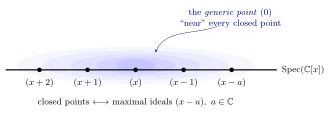
Example 2.49. Let us look at the non-reduced \(\mathbb{C}\)-algebra \(R:= \mathbb{C}[x]/ (x^2).\) The spectrum of \(R\) can be understood as the point \(\{ x=0 \} \subseteq \mathbb{A}\) with multiplicity two, which is an example of a fat point.
2.8 The Equivalence of Algebra and Geometry
In the language of the categories, the results in Section 2.6 can be rephrased as the equivalence of the following two categories:
\(\textsf{Var}:=\) the category of (closed affine) algebraic varieties;
\(\textsf{Alg}_{\mathbb{C}}:=\) the category of finitely generated, reduced \(\mathbb{C}\)-algebras.
Roughly speaking, a category has objects and morphisms between any pairs of objects. Morphisms are also called maps or simply arrows. For \(\textsf{Var}\) the objects are the varieties, and the morphisms are the morphisms of algebraic varieties. For \(\textsf{Alg}_{\mathbb{C}}\) the objects are the reduced, finitely generated \(\mathbb{C}\)-algebras, and the morphisms are \(\mathbb{C}\)-algebra homomorphisms. Every object \(A\) in a category \(\textsf{C}\), is associated with an identity morphism \(\text{id}_A\). In each category, there is a natural composition of morphisms that is associative. A functor is a map between two categories. More precisely, A covariant functor \(\mathscr{F}\) from a category \(\textsf{C} = (\textrm{Obj}(\textsf{C}), \textrm{Mor}(\textsf{C}))\) to the category \(\textsf{D} = (\textrm{Obj}(\textsf{D}), \textrm{Mor}(\textsf{D}))\), denoted by \(\mathscr{F}: \textsf{C} \longrightarrow\textsf{D},\) consists of the information
A map of objects \(\textrm{Obj}(\textsf{C}) \longrightarrow\textrm{Obj}(\textsf{D});\)
A map of morphisms \(\textrm{Mor}(\textsf{C}) \longrightarrow\textrm{Mor}(\textsf{D}),\)
satisfying
For every object \(A \in \textsf{C},\) \(\mathscr{F}(\text{id}_A) = \text{id}_{\mathscr{F}(A)};\)
If
then
is also commutative.
A contravariant functor reverses the arrows. For any category \(\textsf{C}\) we can naturally define the identity functor \(\mathrm{id}_{\textsf{C}},\) which allows us to define the important notion of the equivalence of categories. We say that the two categories \(\textsf{C}\) and \(\textsf{D}\) are equivalent if there are functors \(\mathscr{F}: \textsf{C} \longrightarrow\textsf{D},\) and \(\mathscr{G}: \textsf{D} \longrightarrow\textsf{C},\) such that \[\mathscr{G}\circ \mathscr{F} \simeq \text{id}_{\textsf{C}}\, , \quad \mathscr{F}\circ \mathscr{G} \simeq \text{id}_{\textsf{D}}.\] That is, for any \(A\in \textrm{Obj}(\textsf{C}),\) the object \(\mathscr{G} \circ \mathscr{F}(A)\in \textrm{Obj}(\textsf{C})\) is an object isomorphic to \(A\) (and not necessarily equal). This holds true similarly for \(\mathscr{F}\circ \mathscr{G}.\) Now let us define the functor \[\begin{align*} \mathscr{F}: \textsf{Var} &\longrightarrow\textsf{Alg}_{\mathbb{C}}, \\ \textrm{Obj}(\textsf{Var}) \ni V &\longmapsto\mathscr{F}(V):= \mathbb{C}[V] \in \textcolor{blue}{\textrm{Obj}(\textsf{Alg}_{\mathbb{C}})} , \\ \textrm{Mor}(\textsf{Var}) \ni \varphi &\longmapsto\mathscr{F}(\varphi):= \varphi^* \in \textrm{Mor}(\textsf{Alg}_{\mathbb{C}}). \end{align*}\] Also, \[\begin{align*} \mathscr{G}: \textsf{Alg}_{\mathbb{C}} &\longrightarrow\textsf{Var}, \\ \textrm{Obj}(\textsf{Alg}_{\mathbb{C}}) \ni \mathbb{C}[V] &\longmapsto\mathscr{G}(V):= \textrm{maxSpec}(\mathbb{C}[V]), \\ \textrm{Mor}(\textsf{Alg}_{\mathbb{C}}) \ni \Phi &\longmapsto\mathscr{G}(\Phi)=\varphi, \end{align*}\] where \(\varphi\) is defined in Theorem 2.39(b). The results in Section 2.6 verify that
\(\mathscr{F}\) is a functor;
\(\mathscr{G}\) is a functor;
\(\mathscr{G}\circ \mathscr{F} \simeq \text{id}_{\textsf{Alg}_{\mathbb{C}}},\) and \(\mathscr{F}\circ \mathscr{G} \simeq \text{id}_{\textsf{Var}}.\)
In summary, we have the equivalence between \(\textsf{Var}\) and \(\textsf{Alg}_{\mathbb{C}}.\) This equivalence also highlights a very modern view in mathematics: often, to study sets, we study the functions on them. In our case,
“Studying polynomial functions on algebraic varieties provides enough information to understand algebraic varieties up to isomorphism.”
The reader interested in learning more on Category Theory may consult nice and gentle notes of Tom Leinster (Leinster 2014) which are available at https://arxiv.org/pdf/1612.09375.pdf, or very solid notes of Pierre Schapira (Schapira 2023).
3 Projective Varieties
3.1 Projective Space
In this section, we define the projective spaces. A projective space of dimension \(n\) contains a copy of \(\mathbb{A}^n,\) and it turns out to be a compact set in the Euclidean topology. Let us set \(\mathbb{C}^* = \mathbb{C}\setminus \{0\}.\)
Definition 3.1. The projective \(n\)-space is defined as the set of all classes \[\mathbb P^n = ({\mathbb{C}^{n+1}\setminus \{ 0\}} )/{\sim},\] where \(a,b \in \mathbb{C}^{n+1}\setminus \{ 0\},\) \(a\sim b,\) if and only if, there is \(\lambda \in \mathbb{C}^* ,\) such that \(a = \lambda \cdot b.\)
Which is a correct description of the projective \(n\)-space \(\mathbb{P}^n\)?
Let us note the following.
The equivalence relation means \(\mathbb P^n\) corresponds to the set of all lines in \(\mathbb{C}^{n+1},\) passing through the origin. Therefore, any element or point in \(\mathbb P^n\) corresponds to such a line.
A point \(a\in \mathbb P^n\) is a class of points in \(\mathbb{C}^{n+1}\setminus \{0\}\) under the equivalence relation. In coordinates, such a point is denoted by \(a=[x_0: \dots : x_n],\) which are called the homogeneous coordinates of \(a\).
The equivalence relation \(\sim\) can be understood by the orbits of the action of \(\mathbb{C}^*\) on \(\mathbb{C}^{n+1}\setminus \{ 0\}\) by \((\lambda , a)\longmapsto\lambda \cdot a.\) That is, \(a\sim b\) if and only if \(a\) and \(b\) lie on the same orbit under the action of \(\mathbb{C}^*.\)
The above projective space can be defined over any field \(k.\) Moreover, when \(k= \mathbb{R},\) then \[\mathbb{R}\mathbb P^n = (\mathbb{S}^n)/ \sim,\] where \(\mathbb{S}^n = \{x\in \mathbb{R}^{n+1}: \lVert x \rVert =1 \}\) is the \(n\)-dimensional sphere, and \(a\sim b\) if and only if \(a = \pm b.\) Note that \[\mathbb{S}^n = (\mathbb{R}^{n+1}\setminus \{0\}) / \sim_1\] where \(\sim_1\) is the equivalence relation that \(a \sim_1 b\) if and only if \(a = \lambda \, b\) for \(\lambda >0.\)
Example 3.2.
If \([x_0, \dots , x_n]\in \mathbb P^n,\) by definition \([x_0: \dots : x_n] = [\lambda x_0:\dots : \lambda x_n]\) for any \(\lambda \in \mathbb{C}^*.\) Therefore, if for instance, \(x_0 \neq 0,\) then \([x_0: x_1: \dots : x_n] = [1: \frac{x_1}{x_0} :\dots : \frac{x_n}{x_0}].\)
\(\mathbb P^0\) is all the lines in \(\mathbb{C}^1\), which is the line \(\mathbb{C}^1\) itself. Therefore, \(\mathbb P^0\) has only one point. In homogeneous coordinates \(\mathbb P^0 = [x_0] = \{a\in \mathbb{C}^* \}/ \sim ~ =~[1].\)
\(\mathbb P^1 = \{ [x_0: x_1]: (x_0,x_1) \neq (0,0)\}.\) \[\mathbb P^1 = \begin{cases} \{ [1: x_1 /x_0] \} = \{[1: a]: a\in \mathbb{C}\}, & \text{if $x_0\neq 0$}; \\ \{ [0: x_1]: x_1 \neq 0 \}= \{ [0: 1]\} & \text{if $x_0= 0$}. \end{cases}\] As a result, we may write \(\mathbb P^1 = \mathbb{C}\sqcup \{ \infty \}.\) Note that \(\mathbb{C}\) as a vector space over \(\mathbb{R}\) is two dimensional. Therefore, \(\mathbb P^1\) can be compared to a sphere of real dimension two, called the Riemann Sphere. See this funny video: https://www.youtube.com/watch?v=l3nlXJHD714.
Similar to above: \(\mathbb P^n = \mathbb{C}^n \sqcup \mathbb P^{n-1}= \mathbb{C}^n \sqcup \mathbb{C}^{n-1} \sqcup \dots \sqcup \{ \infty\}.\)
We can understand \(\mathbb P^1\) with two open sets \(U_0 = \{ [x_0: x_1]: x_0 \neq 0\}, U_1 = \{ [x_0: x_1]: x_1 \neq 0\}.\) Each of these open sets are homeomorphic to \(\mathbb{C}.\) If \([x_0: x_1] \in U_0 \cap U_1,\) then \(x_0 \neq 0, x_1 \neq 0.\) Therefore \(U_0\cap U_1 \simeq \mathbb{C}^*.\) Moreover, if \([x_0:x_1] \in U_0 \cap U_1, [x_0:x_1] = [x_0/x_1 : 1] = [1: x_1/x_0].\) As a consequence, we regard \(\mathbb P^1\) as two copies of \(A_1:= A_2 := \mathbb{C}\) which are glued to each other on \(\mathbb{C}^* \subseteq A_1, A_2\) by the map \(a \mapsto \frac{1}{a}.\)
Visualise three models of projective space \(\mathbb{P}^2\): the sphere with antipodal identification, the upper hemisphere, and the symmetric cone.
Exercise 3.3. Convince yourself that the real projective plane \(\mathbb{R}\mathbb P^2\) is a disc with the sides identified as in Figure 1.3.
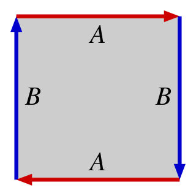
3D Surface Gallery: Surfaces from Edge Identification
Drag to rotate. Ctrl/⌘ + scroll to zoom. Blue = front face, orange = back face — non-orientable surfaces (Klein bottle, Möbius band) show both colors!
For completeness let us recall the definition of an analytic manifold; see (Voisin 2002).
Definition 3.4. Assume that \(U \subseteq \mathbb{C}^n\) is an open subset in the Euclidean topology.
Let \(f : U \longrightarrow\mathbb{C}\) be a (complex-valued) differentiable function. We say that \(f\) is analytic or holomorphic at the point \(a\in U\) if for all \(j \in \{1, \dots , n\}\) the one variable function \[z_j \longmapsto f(a_1, . . . , a_{j-1}, z_j , a_{j+1}, . . . , a_n)\] is analytic at \(a_j.\)
A map \(\varphi= (\varphi_1, \dots , \varphi_m): U \longrightarrow\mathbb{C}^m,\) is called analytic, if all \(j=1, \dots , m,\) the functions \(\varphi_j\) are analytic for all \(a\in U.\)
A complex analytic manifold \(X\) of dimension \(n\), is a topological space satisfying the following properties:
\(X\) is a second countable Hausdorff topological space;
\(X\) can be covered with a (countable) collection of open sets \(X = \bigcup_i U_i,\) such that for each \(U_i\) there is a homeomorphism \(\xi_i: U_i \longrightarrow V_i \subseteq \mathbb{C}^n,\) where \(V_i\) is an open subset. (I.e., any complex manifold has an open cover, and it locally looks like open subsets of \(\mathbb{C}^n\).) Each pair \((U_i, \xi_i)\) is called a chart and the collection of all the charts for the manifold \(X\), \(\{(U_i,\xi_i)\}_i,\) is called an atlas;
For all \(i,j\) the maps of change of coordinates \(\xi_j \circ \xi_i^{-1}: \xi_i(U_i\cap U_j) \longrightarrow\xi_j(U_i \cap U_j)\) are analytic. (I.e., open pieces are analytically glued.) See Figure 1.4.
Interactive: Charts & Transition Maps on a Manifold
Click open sets to select them. Select one to see its chart map ξi : Ui → Vi ⊆ ℂn. Select two to see the intersection and transition map ξi ∘ ξj−1.
Click one or two open sets above
Example 3.5. Any open set of \(U \subseteq \mathbb{C}^n\) is a complex \(n\)-dimensional manifold. Its atlas can be described by one chart.
Theorem 3.6. With the natural quotient topology induced from the Euclidean topology of \(\mathbb{C}^{n+1}\) on \(\mathbb P^n\), \(\mathbb P^n\) is a complex \(n\)-dimensional analytic manifold.
Proof. We need to find an atlas \(\{(U_i, \xi_i)\}_{i\in I}\) where
Each \(U_i\) is an open subset of \(\mathbb P^n,\) \(\xi_i: U_i \longrightarrow\mathbb{C}^n\) is a homeomorphism;
\(\mathbb P^n = \bigcup_{i\in I} U_i;\)
For each \(i\) and \(j\), the map of change of coordinates \(\xi_j \circ \xi_i^{-1}: \xi_i(U_i\cap U_j) \longrightarrow\xi_j(U_i \cap U_j)\) is analytic.
To show these, note that:
For \(i=0, \dots , n,\) define \(U_i = \big\{[x_0 , \dots x_{i-1}, x_i, x_{i+1} , \dots , x_n]: x_i \neq 0 \big\}.\) It is clear that each \(U_i\) is open in \(\mathbb P^n\) in the Euclidean topology induced from \(\mathbb{C}^{n+1}.\) Let \[\begin{align*} \xi_i: U_i &\longrightarrow\mathbb{C}^n, \\ [x_0 , \dots x_{i-1}, x_i, x_{i+1} , \dots , x_n] & \longmapsto\big(\frac{x_0}{x_i} , \dots , \frac{x_{i-1}}{x_i}, \frac{x_{i+1}}{x_i} , \dots , \frac{x_n}{x_i}\big). \end{align*}\] \(\xi_i\) is a composition of division by a non-zero number and a linear projection, therefore it is continuous. Clearly, \(\xi_i^{-1}\) is also a continuous function.
By definition \(\mathbb P^n = \bigcup_{i\in I} U_i.\)
By renumbering, without loss of generality, we prove Item (c) for \(i=0,j=1.\) In \(U_0 \cap U_1\) both \(x_0, x_1\) are non-zero. Therefore, if \(a=(a_1,\dots ,a_n) \in \xi_0(U_0 \cap U_1) \subsetneq \mathbb{C}^n,\) then \(a_1\neq 0.\) We have
Since \(a_1 \neq 0,\) the above map is well-defined and analytic.
◻
Toggle the three standard chart patches \(U_x, U_y, U_z\) on \(\mathbb{P}^2\) and see how they cover the projective plane.
Exercise 3.7. Rewrite the proof of Theorem 3.6 for yourself when \(n=2.\) That is, prove that \(\mathbb{P}^2\) is an analytic manifold. Write down all the charts \(U_0, U_1, U_2\) and all the change of coordinates on the intersections explicitly (Pretty please. This is very useful for us later!).
Exercise 3.8. Prove that with the induced Euclidean topology \(\mathbb P^n\) is compact. Deduce that any analytic function \(f: \mathbb P^n \longrightarrow\mathbb{C}\) has to be constant. In particular, any polynomial \(f: \mathbb P^n \longrightarrow\mathbb{C}\) is constant. Hint: check out Theorem 3.13.
3.1.1 A Quick Review: Complex Analysis in One Variable
A function \(f: U \longrightarrow\mathbb{C}\), where \(U \subseteq \mathbb{C}\) is an open set, is said to be differentiable at a point \(z_0 \in U\) if the limit \[f'(z_0) = \lim_{z \to z_0} \frac{f(z) - f(z_0)}{z - z_0}\] exists.
Theorem 3.9. The following are equivalent:
A function \(f(x+iy) = u(x,y) + iv(x,y)\) is complex differentiable at a point \(z_0 = x_0 + iy_0.\)
Partial derivatives \(u_x, u_y, v_x, v_y\) exist and satisfy the Cauchy-Riemann equations: \[\frac{\partial u}{\partial x} = \frac{\partial v}{\partial y}, \quad \frac{\partial u}{\partial y} = -\frac{\partial v}{\partial x}.\]
The first big surprise of the theory of complex functions, which has no direct analogue for real functions \(g: \mathbb{R}^2 \to \mathbb{R}^2\), is the following:
Theorem 3.10. Let \(f= u + i v: U \longrightarrow\mathbb{C},\) be a complex function, then the following are equivalent:
\(f\) is complex differentiable at every point \(z_0 \in U\) and its partial derivatives \(u_x, u_y, v_x, v_y\) are continuous.
\(u_x, u_y, v_x, v_y\) are continuous and satisfy the Cauchy–Riemann equations at every \(z_0 \in U\).
\(u_x, u_y, v_x, v_y\) are continuous and \(f\) is conformal. That is to say the Jacobian/derivative of \(f\), \[D(f)=J_f = \begin{pmatrix} \frac{\partial u}{\partial x} + i\frac{\partial u}{\partial x} \\ \frac{\partial v}{\partial x} + i\frac{\partial v}{\partial y} \end{pmatrix}\] preserves angles.
\(f\) is analytic (holomorphic) in \(U,\) that is, its Taylor series \(z_0,\) \[\sum_{n=0}^{\infty} \frac{f^{(n)}(z_0)}{n !} (z-z_0)^n\] converges uniformly to \(f(z)\) for all \(z \in U,\) sufficiently close to \(z_0.\)
Example 3.11.
We can easily check that the function \(f: \mathbb{C} \to \mathbb{C}\), given by \(f(z) = \bar{z}\), does not satisfy the Cauchy–Riemann equations. Writing \(z = x + iy\), we express \(f\) as: \[f(x+iy) = x - iy.\] Defining \(u(x,y) = x\) and \(v(x,y) = -y\), the Cauchy–Riemann equations state: \[\frac{\partial u}{\partial x} = \frac{\partial v}{\partial y}, \quad \frac{\partial u}{\partial y} = -\frac{\partial v}{\partial x}.\] Computing the derivatives \(\frac{\partial u}{\partial x} = 1, \quad \frac{\partial v}{\partial y} = -1,\) which are not equal. Thus, \(f\) is not analytic.
Using the geometric series formula for \(|r| < 1\), \[\frac{1}{1 - r} = \sum_{n=0}^{\infty} r^n,\] we rewrite \(\frac{1}{z}\) as: \[\frac{1}{z} = \frac{1}{1 - [-(z-1)]}.\] This series expansion is valid for \(|z - 1| < 1\), leading to: \[\frac{1}{z} = \sum_{n=0}^{\infty} (-1)^n (z-1)^n.\] Therefore \(\frac{1}{z}\) is analytic outside \(\{z=0 \}.\)
Any function of the form \(g(z)/h(z)\) for two polynomials \(h, g: \mathbb{C}\longrightarrow\mathbb{C}\) is analytic outside \(\mathbb{V}(h).\)
Exercise 3.12.
Derive the Cauchy–Riemann equations from the picture below and Theorem 3.10.
Write \(\frac{\partial f}{\partial x} = \frac{\partial u}{\partial x} + i \frac{\partial v}{\partial x}\) and \(\frac{\partial f}{\partial y} = \frac{\partial u}{\partial y} + i \frac{\partial v}{\partial y}\) \[\frac{\partial f}{\partial \bar{z}} = \frac{1}{2} \left( \frac{\partial f}{\partial x} + i \frac{\partial f}{\partial y} \right) =0.\] Thus \(\frac{\partial f}{\partial \bar{z}}\) measures how far \(f\) is from being analytic.
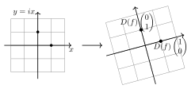
Theorem 3.13 (Liouville’s Theorem). Let \(f: \mathbb{C} \to \mathbb{C}\) be an entire function (i.e., holomorphic everywhere in \(\mathbb{C}\)) and suppose that \(f\) is bounded, meaning there exists some \(M > 0\) such that \(|f(z)| \leq M\) for all \(z \in \mathbb{C}\). Then \(f\) must be constant.
The following implies that by having the values of holomorphic \(f\) around the point \(z_0\), you can determine \(f(z_0).\)
Theorem 3.14 (Cauchy’s Theorem and Integral Formula). Let \(f\) be holomorphic on a connected open set \(U \subseteq \mathbb{C}\). Then, for every \(z_0 \in U\), \[\oint_{\gamma} \frac{f(z)}{z - z_0} \, dz = 2\pi i f(z_0),\] where \(\gamma\) is any closed simple positively-oriented contour around \(z_0\) that is contained in \(U\).
Sketch of the proof. Assume \(z_0=0.\) Write the Taylor expansion for \(f(z)\) and use the polar change of variables \(z= re^{i\theta}.\) ◻
3.2 Projective Varieties
Let \(f(x_0,x_1) = x_0 +x_1 -1.\) First observe that the variety \(\mathbb{V}(f)\) defines a line in \(\mathbb{C}^2.\) However, in \(\mathbb P^1\) such a zero set is not well-defined, since \([x_0, x_1]\in \mathbb P^1\) has to be exactly the same point as \([\lambda x_0, \lambda x_1]\) for any \(\lambda \in \mathbb{C}^*.\) But \(x_0 + x_1 =1\) does not imply that \(\lambda x_0 + \lambda x_1 = 1\) for all \(\lambda \in \mathbb{C}^*.\) On the other hand, observe that \(\mathbb{V}(x_0^3 + x_0 x_1^2 + x_1^3)\) is, in fact, well-defined in \(\mathbb P^1.\) These observations prompt us to concentrate on the polynomials whose zero sets are invariant under the \(\mathbb{C}^*\)-action, and as we will see in Proposition 3.19, are exactly the homogeneous polynomials, i.e., a polynomial that all of its monomial summands have the same degree. Now it is easy to see that if \(h\in \mathbb{C}[x_0, \dots , x_n],\) is a homogeneous polynomial of degree \(d\), then \[h(\lambda x_0, \dots , \lambda x_n) = \lambda^d h(x_0, \dots , x_n),\] has a well-defined zero locus on the projective space.
Definition 3.15. A projective algebraic variety in \(\mathbb P^n\) is the common zero locus of an arbitrary collection of homogeneous polynomials in \(n+1\) variables. That is, \(V=\mathbb{V}(\{f_i\}_{i\in I})\subseteq \mathbb P^n,\) where \(f_i \in \mathbb{C}[x_0, \dots ,x_{n}]\) are homogeneous.
Why must projective varieties be defined by homogeneous polynomials?
Example 3.16 ((Smith et al. 2000)*Page 38). The conic curve is the projective variety given by \(V = \mathbb{V}(x^2 + y^2 -z^2) \subseteq \mathbb P^2.\) We can cover \(\mathbb P^2\) as in the proof of Theorem 3.6, by the charts \(U_x,\) \(U_y\) and \(U_z\), where on each chart we have \(x\neq 0,\) \(y\neq 0,\) and \(z\neq 0,\) respectively. Therefore, \(V\) can be covered by the open sets \[V = (V \cap U_x)\cup (V \cap U_y) \cup (V \cap U_z).\] If \([x:y:z] \in V \cap U_z,\) then \([x:y:z] = [x/z : y/z : 1].\) Therefore, in \(V \cap U_z,\) \(0 =x^2 + y^2 - z^2 = (x/z)^2 + (y/z)^2 - 1^2.\) We have \[V \cap U_z = \{[x/z : y/z : 1] = [a: b : 1] : a^2 + b^2 - 1 = 0 \text{ for all } a,b \in \mathbb{C}\}.\] This is the complex circle. We check that the equations for \((V \cap U_x)\) and \((V \cap U_y)\) look like hyperbola.
Now we have two ways to understand any projective variety using the affine varieties:
By using the affine charts. For instance, we have \(\mathbb P^n = \bigcup_{i=0}^{n} U_i,\) where \(U_i\) were defined in Theorem 3.6. Therefore, \[V =\bigcup_{i=0}^{n} ( V \cap U_i) \subseteq \mathbb P^n.\] Note that \(U_i\)’s are only one choice of affine charts for \(\mathbb P^n.\)
By the affine cone over the variety. The affine cone is obtained by looking at the zero set of the homogenous polynomial equations defining \(V= \mathbb{V}(\{f_i \}_{i\in I})\) in \(\mathbb{C}^{n+1}.\) Intuitively, we can consider \(\mathbb P^n \subseteq \mathbb{A}^{n+1},\) (as a subset and not an algebraic subvariety), and for every point in \(V\subseteq \mathbb P^n,\) assign the line from the origin passing through that point.
3.3 The Homogeneous Nullstellensatz
We intend to use the quotient map \(q:\mathbb{A}^{n+1} \setminus \{0\} \longrightarrow\mathbb P^n\), to define a topology on \(\mathbb P^n.\) That is easy: the Zariski topology on \(\mathbb{A}^{n+1}\) induces a topology on \(\mathbb{A}^{n+1}\setminus \{0\},\) which in turn, induces a quotient topology on \(\mathbb P^n,\) i.e., the unique topology on \(\mathbb P^n\) that makes \(q\) a continuous map. In other words, \[\begin{multline*} Y \subseteq \mathbb P^n \text{ is closed } \iff q^{-1}(Y ) \subseteq \mathbb{A}^{n+1} \setminus \{0\} \text{ is closed } \\ \iff \exists \, Z \subseteq \mathbb{A}^{n+1} \text{ closed, such that } q^{-1}(Y ) = Z \cap (\mathbb{A}^{n+1} \setminus \{0\}). \end{multline*}\] Therefore, we have the bijection \[\begin{align*} \label{eq:bij-torus-inv} \big\{\text{closed subsets of $\mathbb P^n$ }\big\} &\xrightarrow{\simeq} \big\{ \text{closed $\mathbb{C}^*$-invariant subsets of $\mathbb{A}^{n+1}$ containing $0$} \big\}, \\ Y &\mapsto q^{-1}(Y) \cup \{0\}. \end{align*}\] By Nullstellensatz, the closed subsets of \(\mathbb{A}^{n+1}\) correspond to the radical ideals in \(\mathbb{C}[x_0, \dots, x_n].\) So we ask ourselves, what are the ideals that correspond to the \(\mathbb{C}^*\)-invariant subsets? Let us discuss the situation with an illuminating example.
Example 3.17. Let \(J = (x^3 , xy).\) \(\mathbb{V}(J)\) defines a closed set in \(\mathbb P^1,\) since \[(a,b) \in \mathbb{V}(J)\subseteq \mathbb{A}^2 \iff (\lambda a , \lambda b) \in \mathbb{V}(J), \text{ for all $\lambda \in \mathbb{C}^*.$}\] To see this, just note that the generators of \(J\) are homogeneous polynomials. Note that, since \(J\) is an ideal, it does contain non-homogeneous polynomials like \(f(x,y):=x^3 + xy.\) However, this does not pose a difficulty, since the summands of \(f\), \(x^3\) and \(xy\) are already in \(J.\) Note that for a point \((x_0,y_0)\in \mathbb{A}^2,\) and any \(\lambda \in \mathbb{C}^*\) we have \(f(\lambda x_0, \lambda y_0) = \lambda^3 x_0^3 + \lambda^2 x_0 y_0.\) Moreover, \[(x_0, y_0) \in \mathbb{V}(J) \iff x_0^3 =0, x_0y_0 =0 \iff \lambda^3 x_0^3 + \lambda^2 x_0 y_0 = 0, \text{for all $\lambda \in \mathbb{C}^*$}.\] This observation will be discussed in full generality in Proposition 3.19.
Motivated by the above example, we define the following.
Definition 3.18. An ideal \(J\subseteq \mathbb{C}[x_0, \dots ,x_n]\) is called homogeneous, if for all \(f = \sum_{d} f_d\in J,\) where \(f_d\) is the sum of degree \(d\) terms of \(f,\) we have that \(f_d \in J.\)
Proposition 3.19. Let \(J\subseteq \mathbb{C}[x_0, \dots , x_n]\) be an ideal. Then the following are equivalent:
\(J\) has a finite set of homogeneous generators;
\(J\) is \(\mathbb{C}^*\)-invariant, that is, \(f\in J\) \(\iff\) \((\lambda \cdot^*f)(x) = f(\lambda \cdot x)\in J\) for all \(\lambda \in \mathbb{C}^*\);
\(J\) is homogeneous.
Proof.
: Assume that \(J = (g_1, \dots, g_k),\) where \(g_1, \dots , g_k\) are homogeneous polynomials of degree \(d_1, \dots, d_k,\) respectively. If \(f= h_1 g_1 + \dots h_k g_k,\) then \[(\lambda\cdot)^* f =((\lambda\cdot)^*h_1) \lambda^{d_1} (g_1) + \cdots + ((\lambda\cdot)^*h_k) \lambda^{d_k} (g_k) \in J.\]
Assume that \(J\) is \(\mathbb{C}^*\)-invariant. Let \(f \in J,\) and write \(f = f_0 + \cdots + f_N,\) where \(f_i\) is the homogeneous part of degree \(i\) in \(f.\) We have that \((\lambda \cdot )^* f \in J,\) for any \(\lambda \in \mathbb{C}^*.\) We intend to show that \(f_i \in J,\) for all \(i =1, \dots N.\) Note that, for any \(\lambda \in \mathbb{C}^*,\) \[(\lambda\cdot)^* f = f_0 + \lambda f_1 + \lambda^2 f_2 \cdots + \lambda^N f_N.\] Choose distinct numbers \(\lambda_0, \dots , \lambda_N \in \mathbb{C}^*.\) Gladly this is possible since \(\mathbb{C}^*\) has infinitely many elements. Now \[\begin{pmatrix} (\lambda_0 \cdot)^* f \\ (\lambda_1\cdot)^* f \\ \vdots \\ (\lambda_N\cdot)^* f \end{pmatrix} =\begin{pmatrix} 1 & \lambda_0 & \lambda_0^2 & \dots & \lambda_0^{N}\\ 1 & \lambda_1 & \lambda_1^2 & \dots & \lambda_1^{N}\\ \vdots & \vdots & \vdots & \ddots &\vdots \\ 1 & \lambda_N & \lambda_N^2 & \dots & \lambda_N^{N} \end{pmatrix} \begin{pmatrix} f_0 \\ f_1 \\ \vdots \\ f _N \end{pmatrix}.\] Since the above Vandermonde matrix is invertible for distinct \(\lambda_i,\) we can write \(f_0, \dots , f_N\) as a linear combination of \((\lambda_0\cdot)^* f, (\lambda_1 \cdot)^* f, \dots, (\lambda_N \cdot)^* f\) which are in \(J\), by assumption.
If \(J\subseteq \mathbb{C}[x_0,\dots, x_n]\) is an ideal, then is is finitely generated by Hilbert Basis Theorem. If \(J = (h_1, \dots , h_k),\) we can write \(h_i\) as the sum of its homogeneous summands \(h_i = h_{i, 0}+ \dots h_{i,N_i}.\)6 Now Since \(J\) is homogeneous, all these summands are in \(J\) and they clearly generate \(J.\)
◻
Let \(\mathfrak{m}_0 = (x_0 -0 , \dots , x_n - 0)\) denote the maximal ideal corresponding to \(0 = (0,\dots , 0) \in \mathbb{A}^{n+1},\) which does not belong to \(\mathbb P^{n}.\)
Proposition 3.20. All the closed sets of \(\mathbb P^n\) are of the form \(\mathbb{V}(J),\) where \(J\) is a radical homogeneous ideal in \(\mathbb{C}[x_0, \dots, x_n],\) \(J \neq \mathfrak{m}_0.\)
Proof. We have mentioned the bijection between the closed subsets \(Y \subseteq \mathbb P^n\) in the quotient topology, and closed \(\mathbb{C}^*\)-invariant subsets of \(\mathbb{A}^{n+1}\) containing \(0\), \(q^{-1}(Y)\cup\{0\}\). By Nullstellensatz, there is a radical \(J \subseteq \mathbb{C}[x_0, \dots, x_n]\) such that \(\mathbb{V}(J) = q^{-1}(Y)\cup\{0\}.\) Since \(\mathbb{V}(J)\) is invariant under \(\mathbb{C}^*,\) then \(J\) also has to be invariant under \(\mathbb{C}^*:\)
\(f \in J \iff ({\lambda.})^*f = f(\lambda . ~) \in J\);
\(f(\lambda \cdot a) =0 \iff \lambda \cdot a \in \mathbb{V}(f).\)
The statement now follows by Proposition 3.19. ◻
The preceding proposition justifies the following definition, and proves that it coincides with the quotient topology from \(\mathbb{A}^{n+1}.\)
Definition 3.21. The Zariski topology on \(\mathbb P^n\) is obtained by declaring the closed sets to be of the form \(\mathbb{V}(J),\) for any homogeneous ideal \(J \subseteq \mathbb{C}[x_0, \dots , x_n],\) \(J \neq \mathfrak{m}_0.\)
We have also the following correspondence:
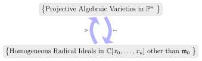
More precisely,
Theorem 3.22 (The Homogeneous Nullstellensatz).
For any projective variety \(Y\subseteq \mathbb P^n,\) we have \(\mathbb{V}(\mathbb{I}(Y))= Y.\)
For any homogeneous ideal \(J \neq \mathfrak{m}_0,\) \(\mathbb{I}(\mathbb{V}(J)) = \sqrt{J}.\)
The Homogeneous Nullstellensatz establishes a correspondence between projective varieties and:
Proof. We have already discussed different pieces of the proof, but for clarity and completeness, we include the proof here.
Let \(q: \mathbb{A}^{n+1}\setminus \{0\} \longrightarrow\mathbb P^{n},\) be the quotient map. We have \(\mathbb{I}(Y) = \mathbb{I}(q^{-1}(Y) \cup \{0\})\subseteq \mathbb{C}[x_0, \dots , x_n],\) which is a homogeneous (and a radical) ideal. Moreover, \[\mathbb{V}(\mathbb{I}(q^{-1}(Y) \cup \{0\}))=q^{-1}(Y) \cup \{0\} \subseteq \mathbb{A}^{n+1}.\] Therefore, in \(\mathbb P^n,\) \(\mathbb{V}(\mathbb{I}(Y))= Y.\)
When \(J \neq \mathfrak{m}_0,\) the variety \(\mathbb{V}(J)\) can be considered in both \(\mathbb P^n\) and \(\mathbb{A}^{n+1}.\) By Nullstellensatz in the affine case, \(\mathbb{I}(\mathbb{V}(J)) = \sqrt{J}.\) One can also check that \(\sqrt{J}\) is also a homogeneous ideal.
◻
Exercise 3.23. Prove that if \(J\) is homogeneous, then so is \(\sqrt{J}\).
Exercise 3.24. Prove that any two distinct lines in \(\mathbb P^2\) meet exactly at one point.
Exercise 3.25. Are the homogeneous polynomials honest functions from \(\mathbb P^n \longrightarrow\mathbb{C}?\)
Exercise 3.26. Would you rather be an architect or a structural engineer?
3.4 The Projective Closure of an Affine Variety
Recall from Example 3.2, that we viewed \(\mathbb P^1\) as \(\mathbb{C}\cup \{\infty\}.\) We have \[\mathbb P^1 = \begin{cases} U_0:= \{ [1: x_1 /x_0] \} = \{[1: a]: a\in \mathbb{C}\} & \text{if $x_0\neq 0$}; \\ \{ [0: x_1]: x_1 \neq 0 \}= \{ [0: 1]\} & \text{if $x_0= 0$}. \end{cases}\] Obviously, \(x_0\) is a homogeneous polynomial and \(\mathbb{V}(x_0)\) is closed in \(\mathbb P^1.\) Therefore, its complement \(U_0\) is open in \(\mathbb P^1.\) We can now ask what is the closure of \(U_0\) in \(\mathbb P^1?\) The answer is \(\mathbb P^1,\) since the smallest closed set in \(\mathbb P^1\) containing \(U_0\) is \(\mathbb{V}(0).\) To see this, assume that \(\mathbb{V}(I)\subseteq \mathbb P^1\) is the closure of \(U_0,\) then if \(g(x_0,x_1) \in I,\) then \(g_{|_{U_0}}\) is a polynomial in \(\mathbb{C}[a]\) vanishing on \(U_0 \simeq \mathbb{A}^1.\) Therefore, it has to be zero! Now we can ask a more general question. Assume \(V \subset \mathbb{A}^n,\) and we have identified \(\mathbb{A}^n\) as above with \(U_0\). What is the closure of \(V\subseteq U_0\) in \(\mathbb P^n?\) This set is called the projective closure of \(V\). Before stating the main theorem, let us go through another example: let \(\ell := \{(a,b): a+b+1 =0 \}\subseteq \mathbb{A}^2.\) To find the closure \(\overline{\ell}\subseteq\mathbb P^2,\) note that if \(\overline{\ell}= \mathbb{V}(g),\) for \(g\in \mathbb{C}[x,y,z],\) then \(g\) must be a homogeneous polynomial such that \(g_{|_{U_0}}\) vanishes on \(\ell.\) So a good candidate for \(g\) is \(x+y+z,\) because on \(U_z,\) \(z\neq 0\) and \([x:y:z] = [x/z: y/z :1].\) By replacing \(a = x/z\) and \(b = y/z,\) we must have \(a+b+1 =0\) on \(\ell.\) Note that \((x+y+z) (x)\) or \((x+y+z)^2\) also vanish on \(\ell\) when we restrict them to \(U_z\) but they are not ‘minimal’. We can alternatively identify \(U_z = \{z\ne 0 \}\) with the points where \(z=1,\) by choosing one representative of \(U_z\) and think that \[x+y+z_{|_{U_z}}= x+y+1.\] Note also that \(x+y+z\) even though it has a well-defined zero set in \(\mathbb P^2,\) it is not a function \(\mathbb P^2 \longrightarrow\mathbb{C},\) but when we fix a representative on \(U_z,\) then it becomes an honest function! We now need a general procedure to go from \(x+y+1\) to \(x+y+z.\) This process is called homogenisation, and it is very simple:
Definition 3.27. Given a polynomial \(f \in \mathbb{C}[x_1, \dots , x_n],\) of degree \(d,\) the homogenisation of \(f\) gives a homogeneous polynomial \(\tilde{f}\in \mathbb{C}[x_0, \dots , x_n],\) of degree \(d\) satisfying \[\tilde{f}(x_0, \dots , x_n) = x_0^d f(x_1/x_0, \dots , x_n /x_0).\]
For instance, homogenising \(x + y + z^3 + 4xy\) gives \(x u^2 + y u^2 + z^3 + 4xyu\), which is obtained by compensating for the lower-degree terms with powers of a new variable.
Note that if a variety \(V = \mathbb{V}(I) \subseteq \mathbb{A}^n\) is defined by an ideal \(I \subseteq \mathbb{C}[x_1, \dots, x_n]\), then by Hilbert’s Basis Theorem, there exist finitely many generators \(I = (g_1, \dots, g_k)\), and we have \(V = \mathbb{V}(g_1, \dots, g_k)\). However, in general, as Example 3.35 below shows, we do not necessarily have \[\overline{V} = \mathbb{V}(\tilde{g_1}, \dots, \tilde{g_k}).\] Thus, while \(\mathbb{I}(\overline{V}) \subseteq \mathbb{C}[x_0, \dots, x_n]\) is finitely generated, the polynomials \(\tilde{g_1}, \dots, \tilde{g_k}\) may not form a generating set. The following theorem, however, shows that one way to find the closure is to homogenise all the elements of the ideal \(I\) and consider their common zero set.
Theorem 3.28 ((Smith et al. 2000)*Page 43). Let \(V\subseteq \mathbb{A}^n \subseteq \mathbb P^n\) be a closed affine algebraic variety, and \(I:= \mathbb{I}(V)\subseteq \mathbb{C}[x_1, \dots , x_n].\) Let \[A := \{\tilde{f} \in \mathbb{C}[x_0, \dots, x_n] : f \in I \}\] We define the homogenisation of \(I\) obtained as the ideal generated by homogenisation of the elements of \(I,\) i.e., \[\tilde{I}= (A) = (\{\tilde{f}\in \mathbb{C}[x_0, \dots ,x_n]: f\in I \}).\] Then, \[\overline{V} = \mathbb{V}(\tilde{I}) \subseteq \mathbb P^n.\]
Proof. Note that the set \(A\) is almost never an ideal, but the variety of \(A\) equals the variety of the ideal generated by \(A\), i.e., \(\mathbb{V}(A) = \mathbb{V}(\tilde{I})\).
\(\overline{V} \subseteq \mathbb{V}(A)=\mathbb{V}(\tilde{I})\): Assume that \(G \in A,\) we show that \(\mathbb{V}(G) \supseteq \overline{V}\). By definition, \(G\) is the homogenization of a polynomial \(g\) in \(I\). Therefore, we can obtain \(g\) from \(G\) by setting \(x_0 = 1\). Define \(U_0 = \{[x_0: \dots: x_n] \in \mathbb{P}^n : x_0 \neq 0\}\). Then, on \(U_0\), we have \(G_{|_{U_0}} = g\). Since \(G_{|_{U_0}}(V) = g(V) = 0\), the closed set \(\mathbb{V}(G)\) contains \(V\), and consequently, its closure satisfies \(\overline{V} \subseteq \mathbb{V}(G)\).
\(\overline{V} \supseteq \mathbb{V}(\tilde{I})\): We show the equivalent statement \(\mathbb{I}(\overline{V}) \subseteq \mathbb{I}(\mathbb{V}(\tilde{I})) = \sqrt{\tilde{I}} = \tilde{I}\)7. By Proposition 3.20, the ideal \(\mathbb{I}(\overline{V})\) is homogeneous, and by Proposition 3.19, it can be generated by homogeneous polynomials. Therefore, if \(G \in \mathbb{I}(\overline{V})\) is such a generator, then it is homogeneous and vanishes on \(\overline{V}\). Consequently, \(G_{|_U}\) must vanish on \(\overline{V} \cap U = V\). Moreover, \(G_{|_U}\) is given by a polynomial of the form \(G(1, x_1, \dots, x_n) = g \in \mathbb{C}[x_1, \dots, x_n]\). Hence, \(g \in I = \mathbb{I}(V)\). By definition, the homogenization of \(g\), \(\tilde{g} \in A\subseteq \tilde{I}\). Note that \[\tilde{g} = x_0^{\deg(g)} G(1, x_1/x_0, \dots, x_n/x_0) = x_0^{\deg(g) - \deg(G)} G(x_0, x_1, \dots, x_n).\] Since \(\deg(G) \geq \deg(g)\), it follows that \[G = x_0^{\deg(G) - \deg(g)} \tilde{g} \in \tilde{I}.\]
◻
Remark 3.29. The \(x+y+z \in \mathbb{C}[x,y,z]\) is not a well-defined function from \(\mathbb P^2 \longrightarrow\mathbb{C}\). For instance, \([1:1:1] = [2:2:2]\) but \(1+1+1 \neq 2+2+2.\) We can, however, consider \(x+y+z\) as a function \(\mathbb P^2 \longrightarrow\mathbb P^1.\) Such functions can be also treated as sections of vector bundles which we do not study in this course.
Exercise 3.30. Prove that if \(I\subseteq \mathbb{C}[x_1, \dots , x_n]\) is radical, then so is its homogenisation \(\tilde{I}\subseteq \mathbb{C}[x_0, x_1, \dots , x_n].\)
Exercise 3.31. Prove that if \(V\) is an irreducible affine variety, then so is its projective closure \(\overline{V}\).
Exercise 3.32. Prove that projective closure in the Zariski topology coincides with the projective closure in the Euclidean topology.
Exercise 3.33. Consider the varieties of the polynomials \(x+y+1, x^2+6y^2+1,\) \(x^2 +3y+1,\) \(x^3 + 3xy^2+ 4.\)
Calculate the projective closures in \(\mathbb P^2.\)
Determine whether or not each of the projective closures includes the points
\([1:0:0];\)
\([0:1:0];\)
\([0:0:1].\)
Can you find a general necessary and sufficient condition on \(g\) such that its homogenisation \(\tilde{g}\) does not pass through any of the three points in item (b)?
Exercise 3.34. Prove that \(\mathbb P^n\) is compact with the induced Euclidean topology from \(\mathbb{A}^{n+1}.\) Explain why projective closure is sometimes called projective compactification.
Example 3.35 ((Smith et al. 2000)*Page 43). Let us revisit the example of twisted cubic in Examples 1.8.4 and 2.41.(a). The twisted cubic is given by \(C = \mathbb{V}(y-x^2, z-xy).\) \(C\subseteq \mathbb{A}^3\) can be paramertrised by \(\mathbb{A}^1 \ni t \longrightarrow(t, t^2, t^3) \in \mathbb{A}^3.\) Homogenisation of the generators of this ideal are \(wy - x^2\) and \(wz-xy.\) We have that \(\mathbb{V}(wy - x^2) \cap \mathbb{V}(wz-xy)= \overline{V} \cup \{[x:y:z:w] \in \mathbb P^3: w= x =0\}.\) As we remarked earlier, this example highlights that homogenising a set of generators of \(I\) does not always give rise to the set of generators of \(\tilde{I}.\)
Exercise 3.36 (Understanding the projective closure of a hypersurface). Consider \(V = \mathbb{V}(x^2y + x^3 +1 + y^2) \subset \mathbb{A}^2.\) Homogenise the equation with variable \(z.\) What is the defining equation for \(\overline{V}\subseteq \mathbb P^2?\) What is the defining equation of \(\overline{V} \cap U_z?\) What happens to the equation when \(z \longrightarrow 0?\) What is the equation of all the extra points in \(\overline{V}\setminus V?\)
3.5 Morphisms of Projective Varieties
Definition 3.37. Let \(V\subseteq \mathbb P^n\) and \(W\subseteq \mathbb P^n\) be projective algebraic varieties. We say that the map \(\varphi: V \longrightarrow W\) is a morphism of projective varieties if for each \(p \in V,\) there exist
an open subset \(U \subseteq V\) with \(p\in U;\)
homogeneous polynomials \(\varphi_0, \dots , \varphi_m : U \longrightarrow W\) of the same degree,
such that \(\varphi_{|_U}= [\varphi_0: \dots :\varphi_m].\)
Example 3.38. Let us consider the affine algebraic variety \(V = \mathbb{V}(y - x^2)\subseteq \mathbb{A}^2.\) It is easy to check that \(V \simeq \mathbb{A}^1.\) If we take the projective closure of \(V\), \(\overline{V} \subset \mathbb P^2,\) then \(\overline{V} = \mathbb{V}(yz - x^2).\) We can therefore understand \(\mathbb{V}(yz - x^2)\) as the union of the following sets (which are not open charts) \[\begin{cases} \big\{[x:y:z]\in \mathbb P^2: yz - x^2 =0 , z\neq 0 \big\} \\ \big\{[x:y:z] \in \mathbb P^2: yz - x^2 =0, z = 0 \big\} = \big\{[0:1: 0 ] \in \mathbb P^2 \big\}. \end{cases}\] Recalling that \(\mathbb P^2 = \mathbb{C}^2 \sqcup \mathbb P^1,\) \(\overline{V}\) is the union of \(V = \overline{V}\cap U_z\) and the extra point at infinity. Similarly, the closure of \(\mathbb{A}^1 \subseteq \mathbb P^1,\) has one extra point at infinity and \(\overline{\mathbb{A}^1} = \mathbb P^1.\) We may seek a continuous map \[\begin{align*} \mathbb{V}(y - x^2 ) \sqcup \{[0:1:0]\} &\longrightarrow\mathbb{A}^1 \sqcup \{\infty \}, \\ (t,t^2)&\longmapsto t,\\ [0:1:0]&\longmapsto\infty . \end{align*}\] In fact, we cannot find a globally defined polynomial map \(\varphi: [\varphi_1: \varphi_2]: \overline{V} \longrightarrow\mathbb P^1,\) that is continuous. For instance, when \(z\neq 0,\) \(\varphi(x,y,z) = [\varphi_1(x/z, y/z, 1): \varphi_2(x/z, y/z,1)]\) however, we want this polynomial map to be well-defined and continuous as \(z \longrightarrow 0.\) Therefore, in the chart where \(z=0,\) we need to ‘hide’ \(z\) so that the polynomials \(\varphi_1, \varphi_2\) are well-defined. It is now easy to see that the map \[\begin{align*} \varphi: \overline{V} &\longrightarrow\mathbb P^1 \\ [x:y:z] &\longmapsto\begin{cases} [y:z ] \quad \text{ if $z\neq 0$}, \\ [x:y ] \quad \text{ if $x\neq 0$}. \end{cases} \end{align*}\] defines an isomorphism.
Example 3.39. When \(V \subseteq \mathbb{A}^n\) is an algebraic variety, its coordinate ring \(\mathbb{C}[V]= \mathbb{C}[x_1,\dots , x_n]\) can be interpreted as all the polynomial functions \(\mathbb{C}[x_1,\dots , x_n]_{|_V}.\) However, when \(f\) is a polynomial and \(Y\) is an irreducible projective variety \(f_{|_Y}: Y \longrightarrow\mathbb{C}\) is constant. We might still want to define the coordinate ring of \(Y\) by \(\frac{\mathbb{C}[x_0,\dots , x_n]}{\mathbb{I}(Y)},\) but the difficulty here is that when \(Y, Z \in \mathbb P^n\) are two projective algebraic varieties then \(\mathbb{C}[Y]\simeq \mathbb{C}[Z]\) does not imply \(Y \simeq Z.\) For instance, in the previous example we saw that \(\mathbb{V}(zx - y^2)\) and \(\mathbb P^1 = \mathbb{I}(0),\) are isomorphic. However, \(\frac{\mathbb{C}[x, y,z]}{\mathbb{I}(zx-y^2)},\) and \(\mathbb{C}[x,y]\) are not isomorphic, since the corresponding affine cones, i.e., the affine algebraic varieties in \(\mathbb{A}^3\) and \(\mathbb{A}^2\) given by \(\mathbb{V}(xz-y^2)\) and \(\mathbb{V}(0)\) are not isomorphic, since \(\mathbb{V}(xz-y^2)\) looks like a cone, with an apex at the origin (a singularity), but \(\mathbb{A}^2\) has no singular points.8
In Section 1.4 we explain how to define a good notion of “coordinate rings" for projective varieties by glueing ‘local’ ones.
Exercise 3.40. Prove that \(\mathbb{V}(y) \subseteq \mathbb{A}^2\) and \(\mathbb{V}(y-x^3) \subseteq \mathbb{A}^2\) are isomorphic, but their projective closures are not.
3.6 Why do we care about the Projective Varieties?
It is easy to see that projective spaces are compact with respect to the induced Euclidean topology from \(\mathbb{A}^{n+1}.\) Therefore, their Zariski closed subsets, the projective varieties, are also compact with respect to the Euclidean topology. Compactness properties simplify many theorems. For instance, two distinct lines in \(\mathbb P^2\) always meet at exactly one point, which is not true in the affine case. There are also many topological properties of projective varieties, which are not true in the affine case. Several important conjectures, such as Grothendieck Standard Conjectures and The celebrated Hodge Conjecture are proposed in the projective case. Let us mention the following two important theorems that only hold in the projective setting.
Theorem 3.41 (Chow Lemma). Assume that \(X \subseteq \mathbb P^n\) is an analytic subvariety of \(\mathbb P^n,\) that is, \(X\) is locally given by an analytic equation. Then, if \(X\) is compact in the Euclidean topology, then \(X\subseteq \mathbb P^n\) is algebraic.
Chow’s Lemma certainly does not hold in the affine case. For instance, \(\mathbb{V}(y -e^x)\) is an affine analytic variety, and it cannot be described as a zero set of any polynomial equation. Chow Lemma has been generalised enormously by Jean-Pierre Serre in a famous article known as GAGA.
Theorem 3.42 (Bézout Theorem). Let \(f_1, f_2 \in \mathbb{C}[x_0, x_1,x_2]\) be two homogeneous polynomials of degree \(d_1\) and \(d_2\), respectively. Let \(Z_1 = \mathbb{V}(f_1)\subseteq \mathbb P^2\) and \(Z_2 = \mathbb{V}(f_2) \subseteq \mathbb P^2,\) be the projective curves associated to \(f_1\) and \(f_2.\) Assume that \(Z_1\) and \(Z_2\) have no common irreducible components. Then, the number of intersection points of \(Z_1\) and \(Z_2\) counted with multiplicity is given by \(d_1 d_2.\)
Before ending this chapter, let us define the notion of dimension and degree for projective varieties.
Definition 3.43.
The dimension of an irreducible projective variety is the dimension of any affine open subsets.
The degree of an irreducible projective variety \(Y\subseteq \mathbb P^n\) is the number of intersection points (counted with multiplicity) of \(Y\) with any linear subvariety \(L\subseteq \mathbb P^n\) such that \(\dim(L)+\dim(Y)=n.\)
Example 3.44. The analytic variety \(V = \mathbb{V}(y -\sin(x))\) is not an algebraic variety, since the line \(y=1/2,\) intersects \(V\) at infinitely many points, but Bézout tells us that algebraic varieties have a finite degree.
Exercise 3.45. Is it possible to find the projective closure of the analytic variety \(\mathbb{V}(y-\sin(x))\) in \(\mathbb P^2\)? Would this contradict the Chow Lemma?
Exercise 3.46. Prove that a morphism of projective
varieties defined in 3.37 is a continuous map.
Hint. Prove that if \(X = \bigcup
U_i,\) for \(U_i\) open and for
every \(i\), \(Z \cap U_i\) is closed in \(U_i\), then \(Z\) is closed in \(X.\)
4 Quasi-Affine and Quasi-Projective Varieties
Definition 4.1.
Any Zariski open subset of an affine algebraic variety is called a quasi-affine variety.
Any Zariski open subset of a projective variety is called a quasi-projective variety.
In other words, a quasi affine (respectively quasi-projective) variety is a locally closed subset of \(\mathbb{A}^n\) (respectively \(\mathbb P^n\)). Recall that in a topological space \(X\), a set \(V\) is called locally closed, if there exists an open subset \(U \subseteq X\) and a closed subset \(Z\subseteq X,\) such that \(V = U \cap Z.\) From now on, the word variety means any affine, quasi-affine, projective, or quasi-projective variety.
Exercise 4.2. Prove that every quasi-affine variety is a quasi-projective variety.
Exercise 4.3. Prove that any open set in an irreducible projective variety is dense.
4.1 Regular Functions
For a few sections, we mainly follow (Hartshorne 1977)*Section I.3.
4.1.1 Regular Functions on Quasi-Affine Algebraic Varieties
Definition 4.4. Let \(V \subseteq \mathbb{A}^n,\) be a closed affine algebraic variety, and \(U\subseteq V\) open. A function \(f:U\longrightarrow\mathbb{C},\) is called regular at a point \(p\in U,\) if there is an open neighbourhood \(U'\subseteq U,\) and polynomials \(g,h \in \mathbb{C}[x_1, \dots ,x_n],\) such that \(h(p)\neq 0,\) for any \(p\in U',\) and \(f_{|_{U'}}(p) = \frac{g(p)}{h(p)}.\) We say that \(f\) is regular on \(U\) if it is regular at every point of \(U.\) The set of regular functions on \(U\subseteq V\) is denoted by \(\mathcal{O}_V(U).\)
Example 4.5.
The function \[\begin{align*} f_1: \mathbb{A}^1 \setminus \{ 0,1\} &\longrightarrow\mathbb{C}\\ z \longmapsto\frac{(z-2)(z-3)}{(z-1)} \end{align*}\] is in \(\mathcal{O}_{\mathbb{A}^1}(\mathbb{A}^1 \setminus \{ 0,1\}).\)
Let \(f_2: \mathbb{A}^1 \longrightarrow\mathbb{C},\) \[f_2(z)= \begin{cases} \frac{(z-1)(z-3)}{(z-1)} \quad z\in \mathbb{A}^1 \setminus \{1\}\\ \frac{(z-2)(z-3)}{(z-2)} \quad z\in \mathbb{A}^1 \setminus \{2\} \end{cases}.\] Then \(f_2 \in \mathcal{O}_{\mathbb{A}^1}(\mathbb{A}^1).\) We can see that the values of \(f_2(z)\) coincides with \(z-3 \in \mathbb{C}[\mathbb{A}^1].\)
For a closed affine algebraic variety \(V\), if \(f\in \mathbb{C}[V]\) then \(\frac{1}{f}\in \mathcal{O}_V(V\setminus \mathbb{V}(f)).\)
\(f_1\) and \(f_2\) are continuous.
Lemma 4.6. A regular function is continuous when \(\mathbb{C}\) is identified with \(\mathbb{A}^1.\)
Proof. Let \(f: Y\longrightarrow\mathbb{C}\) be a regular function. Since closed sets in \(\mathbb{A}^1\) are either the empty set, \(\mathbb{A}^1\) or a union of finitely many points, it suffices to show that the inverse image of only one point on \(\mathbb{A}^1\) is a closed set in \(Y.\) Let \(a\in \mathbb{A}^1,\) \(f^{-1}(a)= \{ p\in Y: f(p)= a\}.\) Similar to Exercise 3.46, we can check the closed-ness locally. Let \(q\in f^{-1}(a).\) Since \(f\) is regular at \(q,\) there is a neighbourhood \(U\) of \(q\) such that for all \(x\in U,\) \(f_{|_{U}}(x)= \frac{g(x)}{h(x)} = a,\) or \(a h(x)-g(x) =0.\) As a result, \(f^{-1}(a) \cap U = \mathbb{V}(a h - g)\cap U,\) which is closed in \(U.\) ◻
Now, if you have taken the course of Algebraic Geometry to only care about polynomial functions, you might not be happy to see the regular functions. However,
The local nature of regular functions is essential in algebraic geometry for glueing the pieces of affine algebraic varieties;
(Global) regular functions on affine algebraic varieties (and not only proper open subsets) and projective algebraic varieties, do behave like polynomial functions as we will see in Theorems 4.7, 4.14.
4.1.2 A Basis for Zariski Topology of Affine Varieties
Recall that a basis for a topology is a collection \(\mathcal{B}\) of open subsets of a topological space \(X\) such that every open set \(U\) in \(X\) can be written as a union of a collection of elements in \(\mathcal{B}\). Note that for any polynomial \(f\in \mathbb{C}[x_1,\dots , x_n],\) the set \[D(f) := \mathbb{A}^n \setminus \mathbb{V}(f),\] is an open subset in \(\mathbb{A}^n.\) Note that \(D(f_1) \cup D(f_2) = \big( \mathbb{A}^n \setminus \mathbb{V}(f_1) \big) \cup \big( \mathbb{A}^n \setminus \mathbb{V}(f_2) \big) = \mathbb{A}^n \setminus (\mathbb{V}(f_1) \cap \mathbb{V}(f_2)).\) As a result, if \(I = (f_1, \dots , f_k) \subseteq \mathbb{C}[x_1, \dots , x_n]\) is an ideal, then \[\mathbb{A}^n \setminus \mathbb{V}(I) = \bigcup_{i=1}^{k} D(f_i).\] In consequence, the sets of the form \(D(f)\) form a basis for the Zariski topology of \(\mathbb{A}^n.\) Replacing \(A^n\) with \(V= \mathbb{V}(g_1, \dots , g_{\ell})\subseteq \mathbb{A}^n\), we can simply check that the sets of the form \(V\cap D(f) = V \setminus \mathbb{V}(f)\) for \(f\in \mathbb{C}[x_1, \dots ,x_n]\) or equivalently \(D(g)\) for \(g \in \mathbb{C}[V],\)9 also form a basis for any closed affine algebraic variety \(V.\)
Theorem 4.7. Let \(V\) be an irreducible Zariski closed subset of \(\mathbb{A}^n.\) Then \[\mathcal{O}_V(V) = \mathbb{C}[V].\]
Proof.
\(\mathcal{O}_V(V) \supseteq \mathbb{C}[V]:\) this is easy. Recall from Section 2.6 that any function \(f\in \mathbb{C}[V]\) can be understood as a polynomial function restricted to \(V.\) Therefore, \(f = \frac{f}{1} \in \mathcal{O}_V(V).\)
\(\mathcal{O}_V(V) \subseteq \mathbb{C}[V].\) This part has several beautiful ideas. Let \(g \in \mathcal{O}_V(V).\) By definition, every point \(p \in V\) has a neighbourhood \(U_p\) such that on \(g_{|_{U_p}} = \frac{h}{k}\) where \(h,k \in \mathbb{C}[V]\) and \(k\) does not vanish on \(U_p.\) Now, since the sets of the form \(D(f) = \mathbb{A}^n \setminus \mathbb{V}(f)\) form a basis for the the Zariski topology on \(V,\) by shrinking the neighbourhood if necessary, we can assume that each \(U_p\) is of the form \(D(f).\) Let us now cover \(V,\) with the open sets of the form \(\{ D(f_j)\}_{j\in J}.\) We know from the First Assessed Coursework that \(V\) is compact with respect to the Zariski topology, and there is a finite subcover of \(V = \bigcup_{i=1}^{\ell} D(f_i).\) In sum, for each \(i= 1, \dots, \ell,\) there the regular function \(g\) agrees with some \(\frac{h_i}{k_i}\) on \(D(f_i),\) and \(k_i\) is always non-zero on \(D(f_i).\) Since \(\bigcup_{i=1}^{\ell} D(f_i)\) is a cover for \(V,\) we must have \(\bigcap_{i=1}^{\ell} \mathbb{V}(k_i) \cap V = \varnothing.\) By Hilbert’s Nullstellensatz, the ideal generated by \(k_i\)’s must be a unit ideal in \(\mathbb{C}[V].\) Therefore, there exist \(r_i \in \mathbb{C}[V],\) such that \[1 = r_1 k_1 + \dots + r_{\ell} k_{\ell}.\] Now, note that for all pairs \(i,j\) we have \[g = \frac{h_i }{k_i} = \frac{h_j }{k_j} \quad \text{on } D(f_i) \cap D(f_j).\] Since \(D(f_i) \cap D(f_j) \subseteq V\) is dense, we have the equality \(k_jh_i - k_i h_j =0,\) on all \(V.\) On each \(D(f_i),\) \(k_i\) is non-vanishing and \(g= \big(\frac{h_i}{k_i} \big).\) We obtain \[\begin{multline*} g = 1\cdot g = \big(r_1 k_1 + \dots + r_{\ell} k_{\ell} \big)\cdot \big(\frac{h_i}{k_i} \big) = \big( r_1 k_1 h_i + \dots + r_{\ell} k_{\ell}h_i \big)\big(\frac{1}{k_i} \big) \\ = \big( r_1 k_i h_1 + \dots + r_{\ell} k_{i}h_{\ell} \big)\big(\frac{1}{k_i} \big)=:G. \end{multline*}\] Thus \(g= G\) as regular functions on \(D(f_i),\) and by Lemma 4.6, \(G=g\) on \(V\). Moreover, clearly, \(G= r_1 h_1 + \dots + r_{\ell}h_{\ell} \in \mathbb{C}[V]\).
◻
Exercise 4.8 (glueing property of regular functions). Prove that if \(V\) is an affine algebraic variety, \(U_1, U_2\subseteq V\) open subsets, and \(f_1 \in \mathcal{O}_V(U_1), f_2 \in \mathcal{O}_V(U_2),\) with \({f_1}_{|_{U_1 \cap U_2}} = {f_2}{|_{U_1 \cap U_2}},\) then there exists a regular function \(f \in \mathcal{O}_V(U_1 \cup U_2)\) such that \[f_{|_{U_1}} = f_1, \quad f_{|_{U_2}} = f_2 .\]
4.1.3 Regular Functions on Quasi-Projective Algebraic Varieties
Definition 4.9. Let \(Y \subseteq \mathbb P^n,\) a (closed) projective algebraic variety, and \(U\subseteq Y\) open. A function \(f:U\longrightarrow\mathbb{C},\) is called regular at a point \(p\in Y,\) if there is an open neighbourhood \(U'\subseteq U,\) and homogeneous polynomials \(g,h \in \mathbb{C}[x_1, \dots ,x_n],\) of the same degree, such that \(h(p)\neq 0,\) for any \(p\in U',\) and \(f_{|_{U'}}(p) = \frac{g(p)}{h(p)}.\) We say that \(f\) is regular on \(U\) if it is regular at every point of \(U.\) The set of regular functions on \(U\subseteq Y\) is denoted by \(\mathcal{O}_Y(U).\)
Exercise 4.10. Let \(Y \subseteq \mathbb P^n\) be a projective variety. Prove that the open sets of the form \(D(f) =Y\setminus \mathbb{V}(f),\) for \(f\in \mathbb{C}[x_0,\dots , x_n]\) homogeneous, also form a basis for the Zariski topology in \(Y.\)
Exercise 4.11. Let \(f\) be a regular function on a quasi-projective variety \(X\). Prove that it is continuous. Deduce that if \(f\) and \(g\) are regular on an irreducible variety \(X\), and \(f_{|_U}= g_{|_U}\) on an open subset \(U \subseteq X,\) then \(f= g\) on \(X.\)
The following definition is, in fact, equivalent to Definition 3.37, for projective varieties.
Definition 4.12. Let \(X,Y\) be two varieties (i.e., affine, quasi-affine, projective or quasi-projective). A morphism \(\varphi: X\longrightarrow Y\) is a map such that
\(\varphi\) is continuous;
For every open set \(V\subseteq Y,\) and for every regular function \(f\in \mathcal{O}_Y(V),\) \(\varphi^*(f) = f \circ \varphi \in \mathcal{O}_X( \varphi^{-1}(V)).\)
Exercise 4.13. Prove that \(\xi_i: U_i \longrightarrow\mathbb{A}^n,\) for all \(i,\) defined in the proof of Theorem 3.6 are isomorphisms.
We state the following theorem without proof, which implies that regular functions on projective spaces are very restricted.
Theorem 4.14. Let \(Y\) be an irreducible Zariski closed subset of \(\mathbb P^n.\) Then \[\mathcal{O}_Y(Y) = \mathbb{C}.\]
We leave the proof of the following theorem as an exercise.
Theorem 4.15. Let \(X\) be an algebraic variety, \(Y \subseteq \mathbb{A}^n\) a closed affine algebraic variety, and \(\varphi:X \longrightarrow Y\) a map of sets. Then, \(\varphi = (\varphi_1, \dots , \varphi_n)\) is a morphism, if and only if, for all \(i,\) \(\varphi_i \in \mathcal{O}_X(X).\)
Example 4.16. Let \(V= \mathbb{V}(xy-1)\subseteq \mathbb{A}^2,\) and \(D(x)=\mathbb{A}^1 \setminus \{0\}.\) By definition the map \[\begin{align*} \psi: V &\longrightarrow D(x) \\ (x,y) &\longmapsto x, \end{align*}\] is a morphism, since
\(\psi\) is the restriction of the projection onto the first coordinate. Note that restriction of continuous maps remains continuous;
\(U\subseteq D(x),\) and \(f\in \mathcal{O}_{D(x)}(U)\) is regular, \(\psi^*(f) = f \circ \psi = f\) is also regular on \(\psi^{-1}(U)= \{(x,y): x\in U, y= 1/x \}\).
By Theorem 4.15, the inverse of \(\psi\) given by \[\begin{align*} \varphi: D(x) &\longrightarrow V \\ x &\longmapsto(x,\frac{1}{x}), \end{align*}\] is also a morphism, since \(x\) and \(1/x\) are indeed regular. Therefore, we have an isomorphism of varieties. By Theorem 4.7, \[\mathcal{O}_V(V) = \mathbb{C}[V] = \frac{\mathbb{C}[x,y]}{(xy-1)}.\] Therefore, \(\mathcal{O}_{D(x)}(D(x)) = \varphi^*(\mathcal{O}_V(V)) = \varphi^*(\frac{\mathbb{C}[x,y]}{(xy-1)}),\) which equals \(\mathbb{C}[x, 1/x],\) since \(y \in \mathcal{O}_V(V)\) and \(\varphi^*(y)= y\circ \varphi = y \circ (x, 1/x) = 1/x.\) \(\mathcal{O}_{D(x)}(D(x))\) can be understood as the coordinate ring of the quasi-affine variety \(\mathbb{A}^1 \setminus \{0\} \simeq \mathbb{C}^*.\) At first sight, \(\frac{1}{x}\) does not look like a polynomial, but it does indeed behave like a polynomial on \(V,\) as we have \(xy-1=0\) and \(\frac{1}{x} = y.\) The identification \(V = \text{maxSpec}(\mathbb{C}[V])\) in Section 2.7, also implies \[\mathbb{C}^* = \text{maxSpec}(\mathbb{C}[x, 1/x]).\]
Exercise 4.17.
We have \(\mathbb{C}[x] \subseteq \mathbb{C}[x, 1/x]\) as \(\mathbb{C}\)-algebras. Determine all the elements in \(\text{maxSpec}(\mathbb{C}[x]) \setminus \text{maxSpec}(\mathbb{C}[x, 1/x]).\)
Consider the isomorphism \(\varphi: \mathbb{A}^1 \setminus \{ 0\} \longrightarrow\mathbb{A}^1 \setminus \{ 0\},~ a \longmapsto b=1/a,\) and the pullback map on the coordinate rings \(\varphi^*: \mathbb{C}[x, 1/x] \longmapsto\mathbb{C}[y,1/y].\) Compute \(\varphi^* (1/x), ~\varphi^* (2x^2 + \frac{2x^3 + 4x}{x^5}), ~\varphi^* (2-x).\)
We can easily generalise the preceding example to show that:
“Any open subset \(D(f)\subseteq \mathbb{A}^n\) is isomorphic to a closed subset of \(\mathbb{A}^{n+1}.\)”
Namely, \[\begin{align*} \varphi: D(f)= \mathbb{A}^n \setminus \mathbb{V}(f) &\longrightarrow\mathbb{A}^{n+1} \\ (x_1, \dots , x_n) &\longmapsto\Big(x_1, \dots , x_n , \frac{1}{f(x_1, \dots , x_n)}\Big), \end{align*}\]
\(\varphi(D(f))\) is closed in \(\mathbb{A}^{n+1};\)
\(\varphi: D(f) \longrightarrow\varphi(D(f))\) is a morphism.
To see these, assume that \(\mathbb{A}^{n+1}\) has the coordinates \((x_1, \dots , x_n, z).\) We have
\(\varphi(D(f)) = \mathbb{V}(z f -1);\)
Since \(x_1,\dots, x_n, f(x_1, \dots , x_n)\) are all regular functions on \(D(f),\) \(\varphi\) is a morphism by Theorem 4.15.
It is also easy to check that \[\begin{align*} \psi: \mathbb{V}(zf -1 ) &\longrightarrow D(f) \\ (x_1,\dots, x_n,z) &\longmapsto(x_1, \dots , x_n) \end{align*}\] is a morphism and the inverse to \(\varphi.\) More generally, similar to above, we can show that if \(V= \mathbb{V}(g_1, \dots , g_{\ell}),\) the open subset \[D(f)\cap V = \mathbb{V}(g_1, \dots , g_{\ell})\setminus \mathbb{V}(f),\] is isomorphic to \(W:= \mathbb{V}(g_1, \dots , g_\ell , zf -1).\) By Theorem 4.7, \(\mathcal{O}_V(V) = \mathbb{C}[V] = \frac{\mathbb{C}[x_1, \dots , x_n]} {\mathbb{I}(V)}= \frac{\mathbb{C}[x_1, \dots , x_n]} {(g_1, \dots , g_{\ell})},\) and we can understand the coordinate ring \[\begin{multline*} \mathbb{C}[D(f)\cap V] := \mathbb{C}[V]_{f} := \frac{\mathbb{C}[x_1, \dots , x_n, 1/f]}{(g_1, \dots , g_\ell)} = \varphi^*(\mathbb{C}[W])\\ \simeq \mathbb{C}[W] = \frac{\mathbb{C}[x_1, \dots , x_n, z]} {(g_1, \dots , g_{\ell}, zf-1 )}. \end{multline*}\] Note that by the above isomorphism, we have \[\mathcal{O}_V[D(f) \cap V] = \varphi^* (\mathcal{O}_W(W)) = \varphi^* (\mathbb{C}[W]) \simeq \mathbb{C}[V]_{f}.\]
Remark 4.18. When \(f \in \mathbb{C}[V],\) then \(D(f)\) is naturally defined as \(V \setminus \mathbb{V}(f).\)
Exercise 4.19. Show that \(\textrm{GL}_n(\mathbb{C})\) is isomorphic to an affine algebraic variety.
Summary of this section
We defined quasi affine/projective varieties: open subsets.
Found a basis for Zariski topology on c.a.a.v \(V\subseteq \mathbb{A}^n\): open subsets of the form \(D(f):= V \setminus \mathbb{V}(f),\) for \(f\in \mathbb{C}[V].\)
Defined regular functions: roughly, \(f(x)/g(x)\) on open subsets, where \(g\) doesn’t vanish. We needed \(f,g\) to be of the same degree in the projective case.
Defined isomorphism in general: continuous maps and pulling back regular to regular.
Found the regular functions on closed affine algebraic varieties and their open basis: \[\mathcal{O}_V(V)= \mathbb{C}[V], \quad \mathcal{O}_V(D(f))= \mathbb{C}[V]_{f}= \mathbb{C}[V, 1/f] = \frac{\mathbb{C}[x_1, \dots, x_n, z]}{(\mathbb{I}(V), zf-1)}.\]
4.2 Two Examples of Glueing
4.2.1 Obtaining \(\mathbb P^1\)
We have seen in Example 3.2.(e) that we can construct \(\mathbb P^1\) by glueing two copies of \(\mathbb{A}^1\) along \(\mathbb{A}^1 \setminus \{0\},\) by the map \(x\longmapsto x^{-1}.\) Let us write this more formally. We have,
\(\xi_0: U_0 \longrightarrow X_0 := \xi_0(U_0),\) \(\xi_1: U_1 \longrightarrow X_1:= \xi_1(U_1),\) are isomorphisms.
\(X_{01}:= \xi_0(U_0 \cap U_1) \subset X_0.\)
\(X_{10}:= \xi_1(U_1 \cap U_0) \subset X_1.\)
\(g_{01}:= \xi_1 \circ \xi_0^{-1}: X_{01} \longrightarrow X_{10}, \quad x \longmapsto y= x^{-1}.\)
Note that all these sets are open subsets of \(\mathbb P^1\) and isomorphic to affine algebraic varieties. We have
\(\mathbb{C}[X_0]= \mathcal{O}_{X_0}(X_0) = \mathbb{C}[x]\), \(\mathbb{C}[X_1]= \mathcal{O}_{X_1}(X_1) = \mathbb{C}[y].\)
\(\mathbb{C}[X_{01}]= \mathcal{O}_{X_0}(X_{01}) =\frac{\mathbb{C}[x, x']}{(xx'-1)} \simeq \mathbb{C}[x, x^{-1}]\supseteq \mathbb{C}[x].\)
\(\mathbb{C}[X_{10}]= \mathcal{O}_{X_1}(X_{10}) = \frac{\mathbb{C}[y, y']}{(yy'-1)} \simeq \mathbb{C}[y, y^{-1}]\supseteq \mathbb{C}[y].\)
We have now the isomorphism of \(\mathbb{C}\)-algebras induced by \(\varphi:\) \[\begin{align*} g_{01}^*: \mathbb{C}[X_{10}] &\longrightarrow\mathbb{C}[X_{01}] \\ f & \longmapsto f\circ g_{01}=f(y^{-1}) \\ y & \longmapsto x= y^{-1}. \end{align*}\] Therefore, we can also think of \(\mathbb P^1\) as \(X_0\simeq \mathbb{A}^1\) and \(X_1\simeq \mathbb{A}^1,\) where \(X_{01}\) and \(X_{10}\) are glued by the isomorphism \(g_{01}.\)
4.2.2 Obtaining \(\mathbb P^2\)
Let \([x_0:x_1:x_2]\) denote the homogeneous coordinates of the space \(\mathbb{P}^2\). It is covered by three coordinate charts:
\(U_0\) corresponding to \(x_0 \neq 0\), with affine coordinates \((\frac{x_1}{x_0}, \frac{x_2}{x_0}) = (a_1, a_2).\)
\(U_1\) corresponding to \(x_1 \neq 0\), with affine coordinates \((\frac{x_0}{x_1}, \frac{x_2}{x_1}) = (a_1^{-1}, a_1^{-1}a_2).\)
\(U_2\) corresponding to \(x_2 \neq 0\), with affine coordinates \((\frac{x_0}{x_2}, \frac{x_1}{x_2}) = (a_2^{-1}, a_1 a_2^{-1}).\)
As before, let \(X_i = \xi_i (U_i),\) and \(X_{ij}= \xi_{i}(U_i \cap U_j).\) We have \(\mathbb{C}[X_0]= \mathcal{O}_{X_0}(X_0) = \mathbb{C}[a_1, a_2],\) and \(\mathbb{C}[X_{01}]= \mathcal{O}_{X_0}(X_{01}) = \mathbb{C}[a_1^{-1},a_1, a_2].\) Since on \(X_1,\) \(a_1\neq 0,\) we can write \[\mathbb{C}[X_1]= \mathcal{O}_{X_1}(X_1) = \mathbb{C}[a_1^{-1}, a_1^{-1} a_2].\] As a result, \[\mathbb{C}[X_{10}]= \mathcal{O}_{X_{10}}(X_{10}) = \mathbb{C}[a_1, a_1^{-1}, a_1^{-1} a_2].\] The isomorphism
provides the information for glueing of \(X_{01}\simeq \mathbb{C}^* \times \mathbb{C}\) and \(X_{10}\simeq X_{01}\simeq \mathbb{C}^* \times \mathbb{C}\) and their corresponding coordinate rings. We can similarly understand the isomorphisms between other charts. Torus Actions10:
On \(U_0 \ni a= (a_1, a_2)\) the action of \(t= (t_1, t_2) \in (\mathbb{C}^*)^2\) is obtained by \(t\cdot a = (t_1 a_1, t_2 a_2).\)
On \(U_1 \ni b= (b_1, b_2)\) the action of \(t= (t_1, t_2) \in (\mathbb{C}^*)^2\) is obtained by \(t\cdot b = (t_1^{-1} b_1, t_1^{-1} t_2 b_2).\)
On \(U_2 \ni c= (c_1, c_2)\) the action of \(t= (t_1, t_2) \in (\mathbb{C}^*)^2\) is obtained by \(t\cdot c = (t_2^{-1} c_1, t_1 t_2^{-1} c_2).\)
This is compatible with the glueing.
Exercise 4.20.
Find the rest of the isomorphisms \(g_{ij}:=\xi_j \circ\, \xi_i^{-1}\) for glueing in the above example.
Can you use the set of vectors \(\{ (1,0), (0,1)\}, \{(-1,0 ) ,(-1,1) \}, \{(1,-1), (0,-1) \}\) to simplify your description?
Hint: Use \((a,b)\in \mathbb{Z}^2\) for \(x^a y^b.\)
4.2.3 Abstract Varieties: Two Perspectives
General abstract varieties can be defined in two ways.
Defining the abstract varieties similar to manifolds: an abstract variety has a set of functions that behave like regular functions, and each point has an open neighbourhood that is isomorphic to an affine algebraic variety. I’d like to compare this to how a structural engineer analyses a building structure.
Defining the abstract varieties with glueing data: an abstract variety is given as \[X:= \bigsqcup X_{i}/\sim,\] where \(X_i\)’s are affine algebraic varieties, such that in their intersections we have compatible glueing data and isomorphisms between \(X_i \cap X_j \subseteq X_i\) and \(X_j \cap X_i \subseteq X_j,\) to define the equivalence or glueing. For instance, in the example of \(\mathbb P^2\) above, if the sets \(X_i\)’s and \(g_{ij}\)’s were given as the initial data, we could glue them to construct \(\mathbb P^2.\) I’d like to call this an architect point of view.
We discuss the second point of view in more detail in the chapter on Toric Varieties. These two points of view are, in fact, equivalent. See for instance https://stacks.math.columbia.edu/tag/00AK, and the details of these two constructions in the lecture notes of Edixhoven and Taelman (Edixhoven and Taelman 2009) on Blackboard.
5 Smoothness and Tangent Spaces
Consider the analytic curve \(\mathbb{V}(y-\sin(x)) \subseteq \mathbb{A}^2.\) The Taylor expansion around \(x_0=0,\) is given by \[\sin(x) = x - \frac{x^3}{3!} + \frac{x^5}{5!}- \dots.\] Therefore, the first-order approximation of \(\sin(x)\) is \(x\) and the third-order approximation is \(x - (x^3)/6,\) which are shown in the figures below.
Interactive: Taylor Approximation of sin(x) at x = 0
The first-order approximation by an affine linear space, having the same dimension as our variety or manifold, defines what is known as the tangent space. Consider, for example, an affine algebraic variety \(V = \mathbb{V}(f) \subseteq \mathbb{A}^n\). Intuitively, the tangent space to \(V\) at a point \(p \in V\) is the affine linear subspace that best approximates \(V\) at \(p\).
Formally, a vector \(v \in T_p V\) if and only if the point \(a + \lambda v\) closely approximates a point in \(V\). In other words, as we slightly move along \(v\), the value \(f(a+\lambda v)\) stays near zero. Hence, we have: \[v\in T_a V \iff (Df(a)) v = \langle \nabla f(a), v \rangle = \left.\frac{d}{d\lambda}\right|_{\lambda=0} f(a+\lambda v) = 0.\]
The gradient \[\nabla f(a) = \left(\frac{\partial f}{\partial x_1}(a), \dots, \frac{\partial f}{\partial x_n}(a)\right)\] is perpendicular to the tangent space. If \(V = \mathbb{V}(f_1,\dots,f_k)\subseteq \mathbb{A}^n\), then the tangent space at \(a\) is the intersection: \[T_a V = \bigcap_{i=1}^{k} \ker(\nabla f_i(a)).\]
Formally, we state:
Definition 5.1. Let \(V = \mathbb{V}(I) = \mathbb{V}(f_1, \dots , f_k)\subseteq \mathbb{A}^n\). For \(a\in V\), the tangent space of \(V\) at \(a\), denoted \(T_a V\), is given by: \[\begin{align*} T_a V &= \left\{v\in \mathbb{A}^n : \forall i,\, \frac{\partial f_i}{\partial v}(a)=\left.\frac{d}{d\lambda}f_i(a+\lambda v)\right|_{\lambda=0}=0 \right\}\\[6pt] &= \{v\in \mathbb{A}^n:\forall f\in I,\;\lambda\mapsto f(a+\lambda v)\text{ has order }\geq 2\}\\[6pt] &=\left\{v\in \mathbb{A}^n : \begin{pmatrix} \frac{\partial f_1}{\partial x_1}(a) & \dots & \frac{\partial f_1}{\partial x_n}(a)\\ \vdots & \ddots & \vdots \\ \frac{\partial f_k}{\partial x_1}(a) & \cdots & \frac{\partial f_k}{\partial x_n}(a) \end{pmatrix} v=0\right\}\\[6pt] &=\left\{v\in \mathbb{A}^n : \begin{pmatrix}\nabla f_1(a)\\\vdots\\\nabla f_k(a)\end{pmatrix} v=0\right\}. \end{align*}\]
Explore the tangent plane \(T_pM\) and gradient \(\nabla f\) on different manifolds. Drag the red point to move along the surface; use the zoom slider to flatten into \(T_pM\).
Example 5.2. Consider the affine algebraic variety \(V = \mathbb{V}(x^2+y^2-z^3)\subseteq \mathbb{A}^3\). At an arbitrary point \(a=(a_1,a_2,a_3)\), the gradient is given by: \[\nabla f(a)=(2a_1,\,2a_2,\,-3a_3^2).\] Thus, the tangent space dimension \(\dim T_a V\) equals \(2\) at non-singular points and is larger otherwise. Particularly, at the singular point \((0,0,0)\), the tangent space dimension is maximal and equal to \(3\).
Test whether a point on a plane curve is smooth or singular by examining the tangent line behaviour.
Remark 5.3. Note that all of the above definitions make sense over any field even if we do not have a notion of limits as we can symbolically define the partial derivatives for any polynomial over any field.
5.1 Smoothness
Definition 5.4. Assume that \(I \subseteq \mathbb{C}[x_1, \dots, x_n],\) is a radical ideal. Choose the generators \(I = (f_1, \dots, f_k).\) Then an affine algebraic subvariety \(V= \mathbb{V}(I)\subseteq \mathbb{A}^n\) is smooth of dimension \(d\) at \(x\in V,\) if \[\dim(T_x V) = d.\] In other words, \[\textrm{rank} \begin{pmatrix} \frac{\partial f_i}{\partial x_j}(x) \end{pmatrix}_{\substack{1\leq i \leq k \\ 1\leq j \leq n }} = n-d.\] We say that \(V= \mathbb{V}(I)\) is a smooth affine variety, if it is smooth at all the points \(x\in V.\)
An affine variety \(V = \mathbb{V}(f_1, \dots, f_k) \subseteq \mathbb{A}^n\) is smooth at a point \(x\) if:
Definition 5.5 (Smooth Variety). Let \(X\) be a variety (affine, quasi-affine, projective, quasi-projective). Then \(X\) is said to be smooth of dimension \(d\), if for all \(a\in X\), there exists an open subset \(U \subseteq X\) containing \(a\), which is isomorphic to a smooth closed affine algebraic variety of dimension \(d.\)
Example 5.6. To find the non-smooth points of the curve given as the zero set of \(f(x,y) = y^2 - x^3 - x^2\) in \(\mathbb{A}^2,\) we note that \(\mathbb{V}(f)\) is of dimension \(1\) by Theorem 2.24. We need to find the points where \(f(a,b)=0,\) and \(\dim ( \ker(\nabla f(0)) )\neq 1.\) We compute partial derivatives \[\frac{\partial f}{\partial x} = -3x^2 - 2x, \quad \frac{\partial f}{\partial y} = 2y.\] The points where \(\ker (\nabla f(0))\) is \(2\) dimensional is exactly where \[2y = 0 \Rightarrow y = 0, \quad -3x^2 - 2x = -x(3x+2)=0 \Rightarrow x=0, -\frac{2}{3}.\] Note that
\((0,0)\): satisfies the equation.
\(\left(-\frac{2}{3},0\right)\): does not satisfy the equation.
Thus, the only singular point of the curve is \((0,0).\)
We state the following without proof:
Theorem 5.7 (Smooth + Connected \(\implies\) Irreducible). If \(X\) is a connected smooth variety of dimension \(d\), then \(X\) is irreducible and \(\dim(X)=d\) (as a topological space).
Exercise 5.8. Show that the algebraic subvariety of \(\mathbb{A}^2,\) given by \(xy=0\) is not smooth at the origin.
Exercise 5.9. Show that the conic surface \(\mathbb{V}(x^2 + y^2 -z^2 ) \subseteq \mathbb{A}^3,\) is not smooth at the origin.
5.2 Tangent Spaces: Algebraic Definition
(Until Chapter 6) We intend to state an intrinsic and an algebraic definition of the tangent spaces in terms of ideals. To start, as usual, we first define this concept for (closed) affine algebraic varieties. Let \(A:= \mathbb{C}[x_1, \dots , x_n],\) \(I = \mathbb{I}(V) \subseteq A,\) a radical ideal, and for a point \(a= (a_1, \dots , a_n) \in V \subseteq \mathbb{A}^n,\) denote by \(\mathfrak{m}:= \mathfrak{m}_a \subseteq A,\) the ideal corresponding to \(a \in \mathbb{A}^n,\) and \(\bar{\mathfrak{m}}:= \bar{\mathfrak{m}}_a \subseteq \mathbb{C}[V] = \frac{A}{\mathbb{I}(V)}\simeq \mathcal{O}_V(V),\) the ideal corresponding to \(a \in V.\) For any \(\mathbb{C}\)-vector space \(S,\) we denote its linear dual by \[V^* = \mathrm{Hom}(S, \mathbb{C}) = \{\text{linear functions from $S$ to $\mathbb{C}$}\}.\]
Example 5.10. In layman’s terms, if \[\mathbb{A}^2 = \left\{\begin{pmatrix} a \\ b \end{pmatrix}: a,b \in \mathbb{C}\right\},\] then its dual space is given by \[(\mathbb{A}^2)^* = \left\{\begin{pmatrix} c & d \end{pmatrix}: c, d \in \mathbb{C}\right\}.\]
Here, an element \(\begin{pmatrix} c & d \end{pmatrix}\) from the dual space acts as a linear functional on a vector \(\begin{pmatrix} a \\ b \end{pmatrix}\), producing: \[\begin{pmatrix} c & d \end{pmatrix} \begin{pmatrix} a \\ b \end{pmatrix} = ca + db.\]
We now want to show that the tangent space can be understood completely in the algebraic setting:
\(\mathfrak{m}_a / \mathfrak{m}_a^2\) as a \(\mathbb{C}\)-vector space, can be identified with \((T_a \mathbb{A}^n)^{*}\simeq \mathbb{A}^n;\)
\(\bar{\mathfrak{m}}_a / \bar{\mathfrak{m}}_a^2\) as a \(\mathbb{C}\)-vector space, can be identified with \((T_a V)^{*}.\)
In order to show these claims we consider the following binary operation or pairing, \[\begin{align*} \langle \cdot , \cdot \rangle : \mathfrak{m}\,\times\,T_a\mathbb{A}^n &\longrightarrow\mathbb{C}\, , \\ (f, v ) & \longmapsto\frac{\partial f}{\partial v}(a). \end{align*}\]
Lemma 5.11. \(\langle \cdot , \cdot \rangle\) is bilinear and induces a perfect pairing \[\langle \cdot , \cdot \rangle: \mathfrak{m}_a / \mathfrak{m}_a^2 \times T_{a} \mathbb{A}^n \longrightarrow\mathbb{C},\] of \(\mathbb{C}\)-vector spaces, i.e., each side can be identified with the dual of the other side. In other words, \(\mathfrak{m}/ \mathfrak{m}^2\) can be identified with the cotangent of \(\mathbb{A}^n\) at \(a.\)
Example 5.12. Let \(\textbf{0}= (0,0) \in \mathbb{A}^2\) be the origin. Let \(\mathfrak{m}:= \mathfrak{m}_\textbf{0}= (x,y)\) be the maximal ideal corresponding to the origin. The ideal \(\mathfrak{m}_\textbf{0}^2\) has all the polynomials of degree \(2\) or more. Now consider an example \(f= 3x + 5y+ x^2 + xyz \in \mathfrak{m}_\textbf{0}.\) Then \(f - 3x+5y= \overline{0} \in \mathfrak{m}_\textbf{0}/\mathfrak{m}_\textbf{0}^2,\) since quotienting by \(\mathfrak{m}_\textbf{0}^2\) kills all the degree \(2\) or higher terms. Now observe that \(\nabla f(0,0)= (3, 5),\) and we can find a correspondence \[\nabla f(0,0)= (3,5) \longmapsto 3x+ 5y = \overline{f} \in \mathfrak{m}_\textbf{0}/\mathfrak{m}_\textbf{0}^2.\] Similarly, if \(g(0,0) = 0\) then \(g \in \mathfrak{m}_\textbf{0}\) if \(g(x,y)= ax+by+ \text{higher order terms},\) then we have the one-to-one correspondence \[\nabla g(0,0) = (a,b) \longmapsto ax+by \in \mathfrak{m}_\textbf{0} / \mathfrak{m}^2_\textbf{0}.\] Since \(\nabla g\) for \(g \in \mathfrak{m}_{\textbf{0}}\) forms a dual for the tangent space of \(\mathbb{A}^2\) at the origin, which is a copy of \(\mathbb{A}^2\), we can consider the dual of \(\mathfrak{m}_\textbf{0} / \mathfrak{m}^2_\textbf{0}\) as the tangent space, which is the content of the lemma.
Proof of Lemma 5.11. Without loss of generality, we can assume that \(a=0.\)
Note that \(T_{a}\mathbb{A}^n =\mathbb{A}^n\) is a \(\mathbb{C}\)-vector space.
The dual \((T_a\mathbb{A}^n)^{*}\) is, by definition, the set of linear functions \(f:T_a \mathbb{A}^n\longrightarrow\mathbb{C}.\)
\(\langle \cdot , \cdot \rangle\) defines a linear map \(\Psi:\mathfrak{m}_a \longrightarrow T_a(\mathbb{A}^n)^{*},\) given by \[f \longrightarrow\langle f , \cdot \rangle.\] Obviously, \[\begin{align*} \Psi(f) = \langle f , \cdot \rangle: T_a \mathbb{A}^n &\longrightarrow\mathbb{C}\\ v &\longmapsto\langle f , v \rangle = \frac{\partial f}{\partial v}(a). \end{align*}\] is linear.
\(\ker(\Psi)= \mathfrak{m}_a^2.\) Since, we can write any polynomial, as its Taylor expansion at \(a=0:\) \(f(x) = f(a) + \sum b_i x_i + (\text{higher degree terms}).\) If \(f\in \mathfrak{m}_a\) then \(f(a)=0,\) and when \(\nabla f(a) = (b_1, \dots , b_n),\) and \(\mathfrak{m}_a^2\) contains all the functions with degree greater than or equal to \(2.\) As a result, the induced map \(\overline{\Psi}:\mathfrak{m}_a / \mathfrak{m}_a^2 \longrightarrow(T_a\mathbb{A}^n)^{*}\) is injective.
As a \(\mathbb{C}\)-vector space, \(\mathfrak{m}_a / \mathfrak{m}_a^2\) is \(n\)-dimensional and is spanned by \(\{x_1, \dots, x_n \},\) therefore, \(\overline{\Psi}:\mathfrak{m}_a / \mathfrak{m}_a^2 \longrightarrow(T_a\mathbb{A}^n)^{*}\) is an isomorphism, and we can identify the two vectors spaces.
◻
Proposition 5.13. \(\langle \cdot , \cdot \rangle\) is bilinear and induces a perfect pairing \[\langle \cdot , \cdot \rangle: \bar{\mathfrak{m}}_a / \bar{\mathfrak{m}}_a^2 \times T_{a} V \longrightarrow\mathbb{C},\] of \(\mathbb{C}\)-vector spaces.
Example 5.14. Assume that \(I\subseteq \mathbb{C}[x,y]\) and \(0\in \mathbb{V}(I).\) By definition \[T_0 V = \{ v\in \mathbb{A}^2: \langle \nabla g(0), v \rangle =0 , g \in I \}.\] Therefore, \(\{\nabla g(0), g\in I \}\) is exactly the orthogonal complement of \(T_0 V.\) However, for \(g = ax + by + cx^2+ dxy+ ey^2+... \in I,\) \[\nabla g(0) = (a,b)\] Also note that in the quotient \((I + \mathfrak{m}_0^2) / \mathfrak{m}_0^2\) \(g\) is exactly given by \(ax+ by.\) The correspondence \[ax+ by \longmapsto(a , b)\] which is like considering linear functions versus their matrices, now allows us to identify \((I + \mathfrak{m}_0^2) / \mathfrak{m}_0^2\) with \(\{\nabla g(0), g\in I \}\) and the orthogonal complement of \(T_0V.\)
Proof. Let us break the proof into three steps for clarity. As before, \(\mathfrak{m}:= \mathfrak{m}_a, I:= \mathbb{I}(V).\)
Recall that \[T_aV = \big\{v\in \mathbb{A}^n: \forall f\in I \subseteq \mathfrak{m}, ~\nabla f(a)\cdot v = 0 \big\}.\] Note that for \(f\in \mathfrak{m}^2,\) then \(\nabla f(a) =0,\) and it does not provide any information for defining \(T_a V.\) Therefore, we can take a quotient by \(\mathfrak{m}^2:\) \[T_aV = \big\{v\in \mathbb{A}^n: \forall f \in (I+ \mathfrak{m}^2) / \mathfrak{m}^2 \subseteq \mathfrak{m}/ \mathfrak{m}^2, ~\nabla f(a)\cdot v = 0 \big\}.\] In fact, \(T_a V\) can be understood as the orthogonal complement of \((I+ \mathfrak{m}^2) / \mathfrak{m}^2.\)
Now we use a fact from linear algebra: if \(\langle \cdot , \cdot \rangle\) is a perfect pairing between two finite-dimensional \(\mathbb{C}\)-vectors spaces \(A\) and \(B,\) \(B'\subseteq B\) is a subspace, and \(A' \subseteq A\) is the orthogonal complement of \(B'\), then we have perfect pairing between \(A / A'\) and \(B'\) induced by \(\langle \cdot , \cdot \rangle.\)
We have \[\big( \mathfrak{m}/ \mathfrak{m}^2 \big) / \big((I+ \mathfrak{m}^2) / \mathfrak{m}^2 \big) \simeq \big( \mathfrak{m}/ I \big) / \big((I+ \mathfrak{m}^2) / I \big)= \bar{\mathfrak{m}} / \bar{\mathfrak{m}}^2\] and the proof is complete by Step (b) by taking \(A = \mathfrak{m}/ \mathfrak{m}^2,\) \(A'= \big((I+ \mathfrak{m}^2) / \mathfrak{m}^2 \big), B=T_a \mathbb{A}^n, B'= T_aV.\) We have also used the pairing perfect pairing between \(A\) and \(B,\) from Lemma 5.11.
◻
Definition 5.15. For \(X\) a variety, \(a\in X\), we define \(T_a{X}=(\mathfrak{m}_a / \mathfrak{m}_a^2)^{*}\), where \(U\subseteq X\) is an open affine variety containing \(a\) and \(\mathfrak{m}_a\subseteq\mathcal{O}_X(U)\) is the maximal ideal of \(a\) (one can show that this is independent of the chosen affine open \(U\)).
Definition 5.16. \(X\) is smooth of dimension \(d\) if and only if \(\operatorname{dim}T_a{X}=d\) for all \(a\in X\).
6 Desingularisation and Blowing up
(This chapter) In the field of Algebraic Geometry, two varieties are considered to be birationally equivalent if they are isomorphic except for a “small set" of points. Heisuke Hironaka in 1964 proved that any quasi-projective variety over \(\mathbb{C}\) can be transformed into a smooth quasi-projective variety through a process called the blowing-up (i.e. zooming in), in other words, any quasi-projective variety can be desingularised. We discuss the blowing up process in the following paragraphs. A video lecture on this topic is available at https://youtu.be/Gkkh_nl7ETw.
Definition 6.1. A morphism \(\pi: X \longrightarrow V,\) of quasi-projective varieties is called a birational morphism if there are open dense subsets \(A \subseteq X\) and \(B \subseteq V,\) such that \(\pi_{|_A}: A \longrightarrow B\) is an isomorphism of algebraic varieties.
6.1 Blowing up of \(\mathbb{A}^n\) at a Point
6.1.1 Blowing up \(\mathbb{A}^2\) at a Point: Intuition
We intend to discuss the following without proof:
“Any curve \(C \subseteq \mathbb{A}^2\), can be viewed as the projection of a curve \(\tilde{C} \subseteq \mathbb{A}^2 \times \mathbb{A}^1\), such that looking at \(\tilde{C}\) along the new direction, we see \(C\), moreover \(\tilde{C}\) is less singular.”
Let us explain the idea behind the blowing up method by considering \(C:= \mathbb{V}(y^2 -x^2(x+1))\subseteq \mathbb{A}^2.\) Here is what we can do to blow up \(C:\)
Note that the tangent space is not well-defined at the origin, but it is well-defined when we approach the origin. So we remove the origin.
Lift any point \((a,b) \in C\setminus \{(0, 0)\}\) to the height equal to the slope of the line passing through \((a,b)\) and the origin, i.e., \((a,b) \longmapsto(a,b, \frac{b}{a}) \in (C\setminus \{(0,0)\} ) \times \mathbb{C}.\)
Take the closure of the curve we obtained in \(\mathbb{A}^3.\)
The nodal cubic \(C = \mathbb{V}(y^2 - x^2(x+1)) \subseteq \mathbb{A}^2\) and its strict transform under the blow-up of \(\mathbb{A}^2\) at the origin: lifting each point to the slope of its line through the origin separates the branches at the node, so the strict transform is smooth and birational to \(C\).
If you’d like to look at the blowup curve from different angles, here is the Maple code.
intersectplot(u^2 = x + 1, y = x*u, x = -2 .. 2, y = -2 .. 2,
u = -2 .. 2, shading = "z", thickness = 7,
labelfont = ["TimesNewRoman", 40]);Now let us apply the same procedure as above to the disc.
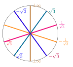
Example 6.2. Questions:
Consider the lines in Figure 1.5. What is the image of each line under the map \[\begin{align*} \varphi: \mathbb{A}^2 \setminus \{a=0\} &\longrightarrow\mathbb{A}^2 \times (-\infty, \infty) \\ (a,b ) &\longmapsto(a,b, \text{ the slope of the line connecting $(0,0)$ and $(a,b)$})? \end{align*}\]
Do you agree that we have discontinuity when we approach the vertical line from right or left? How can we fix this discontinuity?
What shape would you get by considering the blowup of \(\mathbb{R}^2\) at the origin, on the slope direction, \(\pm \infty\) are identified.
Answers:
The picture is given by a DNA-like helix, we get copies of \(\mathbb{C}\setminus \{0\}\) at different heights equal to their slopes.
Yes, and we can identify \(\pm \infty\) by considering the new direction as \(\mathbb P^1\) instead of \(\mathbb{A}^1.\) In other words, we can think of the slope direction \(\mathbb{A}^1\) as an open chart of \(\mathbb{A}^1 = U_0= \{[1: u]: u = \text{slope} \in \mathbb{C}\}\subseteq \mathbb P^1.\)
The open Möbius band, as the lines are the entire \(\mathbb{R}^1.\) See Figure 1.6.

6.1.2 The Algebraic Definition
The idea for blowing up is to think that the objects we obtained above in \(\mathbb{A}^2 \times \mathbb{A}^1\) as an open chart of \(\mathbb{A}^2 \times \mathbb P^1.\) For instance consider the points \[\big((a,b); [1: \frac{b}{a}] \big)\in \mathbb{A}^2 \times \mathbb P^1,\] and extend the definition to the other chart with the usual identification \([a/b:1] = [a:b] =[1:b/a],\) when \(a\neq 0, b\neq 0.\) However, this is still not defined at \((a,b) = (0,0).\) The idea is to install an entire copy of \(\mathbb P^1\) at \((0,0).\) Another way to formulate this blowup is to think that \(\mathbb P^1\) is the set of equivalence classes of lines passing through the origin and that the point \([1: b/a]\) can be understood as the equivalence class of the line which contains the point \((a,b) \in \mathbb{A}^2.\) This leads us to define the blowup of \(\mathbb{A}^2\) at \((0,0)\) by: \[\big\{(p, [\ell]): p\in \ell \text{ for all points } p\in \mathbb{A}^2, \text{ and lines } \ell \text{ passing through $(0,0)$} \big\},\] where \([\ell] \in \mathbb P^1\) denotes the equivalence class of \(\ell.\) Note that above \((0,0)\) we get a representative of all the lines passing through the origin: \(\mathbb P^1.\) This contains the \(u\) -axis or the “slope axis" as an open affine chart, and it is called the exceptional divisor.
Remark 6.3. We might be tempted to define the blowing up of \(\mathbb{A}^2\) as \[\{\big((a,b); [a:b]\big): (a,b) \in \mathbb{A}^2 \},\] however, this set is not defined at \((a,b) = (0,0).\) See Exercise 6.7.
Now we can easily generalise this idea to any dimensions: if \(p=( x_1, x_2, \dots , x_n)\in \mathbb{A}^n\) and \(\ell = [y_1: y_2 : \dots : y_n]\in \mathbb P^{n-1},\) we have that \((x_1, x_2, \dots, x_n) \in \ell\) if and only if the vectors \((x_1, x_2, \dots, x_n),\) \((y_1, y_2, \dots , y_n) \in \mathbb{A}^n\) are along the same line or linearly dependent. In other words, \[\begin{align*} & \text{rank} \begin{pmatrix} x_1& x_2 &\cdots& x_n \\ y_1& y_2 &\cdots & y_n \end{pmatrix} \leq 1 \\ &\iff \text{determinant of all $2\times 2$-matrices vanish} \\ & \iff \{x_iy_j - y_ix_j=0: 1 \leq i, j \leq n \}. \end{align*}\] We now arrive at the following natural equivalent definitions.
Definition 6.4.
The blowup of \(\mathbb{A}^n\) at the origin \(0\in \mathbb{A}^n\) is given by \[\widetilde{\mathbb{A}^n}:= \text{Bl}_{\{0\}}({\mathbb{A}^n}):= \big\{(p, [\ell])\in \mathbb{A}^n\times \mathbb P^{n-1}: \ell \text{ is a line passing through $0$ and $p$} \big\}.\]
Equivalently, the blowup of \(\mathbb{A}^n\) at the origin is given by \[\begin{multline*} \widetilde{\mathbb{A}^n}:= \text{Bl}_{\mathbb{A}^n}(\{0\}) \\ = \big\{\big(( x_1, \dots , x_n); [y_1: \dots : y_n]\big) \in \mathbb{A}^n \times \mathbb P^{n-1} ,\\ x_iy_j - y_ix_j=0, 1 \leq i, j \leq n \big\}. \end{multline*}\]
Equivalently, \(\widetilde{\mathbb{A}^n}\) is the closure of \[\big\{\big((x_1,\dots , x_n); [x_1:\dots : x_n] \big): (x_1,\dots , x_n) \in \mathbb{A}^n\setminus \{0\} \big\}\] in \(\mathbb{A}^n \times \mathbb P^{n-1}.\) See Exercise 6.7.
Now let \(\pi: \widetilde{\mathbb{A}^n} \longrightarrow\mathbb{A}^n,\) \((q, \ell) \longmapsto q\) be the projection map.
Let \(V \subseteq \mathbb{A}^n\) be an affine algebraic variety. The preimage \(\pi^{-1}(V) \subseteq \widetilde{\mathbb{A}^n} \subseteq \mathbb{A}^n \times \mathbb P^{n-1}\) is called the total transform of \(V.\) Note that if \(\Pi: \mathbb{A}^n \times \mathbb P^{n-1} \longrightarrow\mathbb{A}^n,\) is the projection map, then \(\pi = \Pi |_{\widetilde{\mathbb{A}^n}},\) and \[\pi^{-1}(V) = \Pi^{-1}(V) \cap \widetilde{\mathbb{A}^n}.\]
Let \(V \subseteq \mathbb{A}^n\) be an affine algebraic variety passing through the origin. The blowing up of \(V\) at the origin \(\{0 \}\) is given by \[\widetilde{V} := \overline{ \pi^{-1}(V \setminus \{0\})} \subseteq \mathbb{A}^n \times \mathbb P^{n-1},\] i.e., remove the origin, take the pre-image by \(\pi\), take the closure in \(\mathbb{A}^n \times \mathbb P^{n-1}.\)
\(E:= \pi^{-1}(0)= (0, \dots , 0) \times \mathbb P^{n-1}\) is called the exceptional divisor of \(\widetilde{A^n}.\) \[E\cap \widetilde{V} = \pi^{-1}_{|\widetilde{V}}(0)\] is the exceptional divisor of \(\widetilde{V}\).
To blowup \(\mathbb{A}^n\) at any point \(q\in \mathbb{A}^n,\) we make a linear change of coordinates by sending \(q \longmapsto 0.\)
Example 6.5. Let us compute the blowup of \(C:= \mathbb{V}(y^2 -x^2(x+1))\subseteq \mathbb{A}^2\) at the origin. To understand the blowup \(\tilde{C}\subseteq \mathbb{A}^2 \times \mathbb P^1,\) we can look at different charts of \(\mathbb P^1\) and take different snapshots of \(\tilde{C}.\) Recall that the projection for blowup of \(\mathbb{A}^2\) at the origin is given by \(\pi:\{\big((x,y): [t:u] \big) \in \mathbb{A}^2\times \mathbb P^1, ~xu= yt \}\longrightarrow\mathbb{A}^2,\) where \(\pi\big((x,y); [t:u] \big)= (x,y).\) Let us look at the chart \(\{ [1:u]: u\in \mathbb{A}^1 \} \subseteq \mathbb P^1.\) We have, \[\pi^{-1}(C) = \{\big((x,y);[1:u] \big): (x,y) \in C, y= xu\}.\] Note that since \(0\in C,\) \(\pi^{-1}(C)\) contains the exceptional divisor, which we need to remove to obtain the blowup \(\pi:\tilde{C} \longrightarrow C.\) We have \[\begin{cases} (x,y) \in C \implies y^2 - x^2(x+1) =0 \\ xu =y \end{cases}\] Plugging in the second equation into the first, \((ux)^2 - x^2(x+1)= x^2(u^2 - x -1)=0.\) The zero set in \(xu\)-plane is \(x=0\) or \(u^2-x-1=0\). The line \(x=0\) is the \(u\)-axis, which is the slope axis for us, or the exceptional divisor. The parabola \(u^2 -x-1 =0\) is the blowup of \(C,\) in the \(xu\)-plane. If we draw the \(xu\)-plane with the \(x\)-axis and \(u\)-axis, the parabola intersects exceptional divisor the line at \(x=1,\) \(u=0\), and at \(x=-1\) and \(u=0\). If we draw \(u^2 -x-1 =0, y= ut,\) in the \(xyu\)-axis, we obtain the strict transform of the nodal cubic. For the chart \(\{ [t:1]: t\in \mathbb{A}^1 \} \subseteq \mathbb P^1,\) we obtain a similar picture. Since in both these charts, the blowup is smooth, we can deduce that \(\tilde{C}\) is smooth.
Example 6.6. Let us blowup the cusp \(y^2 =x^3.\) In the chart \(t=1\) of \(\mathbb P^1,\) we have \[\begin{cases} y^2 =x^3 \\ xu =y \end{cases} \implies (xu)^2 = x^3 \implies x^2 (u^2-x) = 0.\] We obtain \(x=0,\) i.e. a copy of the exceptional divisor, and the parabola \(u^2-x=0\) which is the resolved curve. In \(xyu\)-coordinates we can draw \[\begin{cases} u^2-x=0 \\ xu =y \end{cases}\] to look at the blowup curve from different angles. Here is the Maple code
h_1 := intersectplot(u^2 - x = 0, y = x*u, x = -2 .. 2,
y = -2 .. 2, u = -2 .. 2, shading = "z",
thickness = 7, labelfont = ["TimesNewRoman", 40]);
h_2 := intersectplot(x = 0, y = 0, x = -2 .. 2,
y = -2 .. 2, u = -2 .. 2, color = "red");
display(h_1, h_2);Exercise 6.7. Show that the blowup of \(\mathbb{A}^2\) at \((0,0)\) is the closure of \[\{\big((a,b); [a:b] \big): (a,b) \in \mathbb{A}^2\setminus {(0,0)} \}\] in \(\mathbb{A}^2 \times \mathbb P^1.\)
Lemma 6.8. Let \(V\subseteq \mathbb{A}^n\) be an affine algebraic variety with \(0\in V.\)
Total transform = blowup \(\bigcup\) exceptional divisor, i.e., \[\pi^{-1}(V) = \overline{\pi^{-1}(V \setminus \{0\})} \cup \pi^{-1}(\{0\}).\]
For any algebraic variety \(V \subseteq \mathbb{A}^n,\) we have the birational morphism \(\tilde{V} \longrightarrow V.\)
Proof.
Since \(0\in V,\) we have \(\pi^{-1}(V) = {\pi^{-1}(V \setminus \{0\})} \cup \pi^{-1}(\{0\}),\) but \(\pi^{-1}(V)\) is closed, given by algebraic equations as above, therefore it contains \(\overline{\pi^{-1}(V \setminus \{0\})}.\)
It is easy to see that the equations for \(\big( (x_1, \dots , x_n ); [ y_1: \dots : y_n] \big),\) when \((x_1, \dots , x_n) \neq (0, , \dots , 0),\) the equations \(\{x_iy_j - y_ix_j=0: 1 \leq i, j \leq n \}\) imply that \([ y_1: \dots : y_n] = [x_1 :\dots : x_n].\) Now, it is easy to see that \[\begin{align*} \pi: \widetilde{\mathbb{A}^n} \setminus \pi^{-1}(\{0\}) & \longrightarrow\mathbb{A}^n \setminus \{0\} \\ \big( (x_1, \dots , x_n ); [ x_1: \dots : x_n] \big) & \longmapsto(x_1, \dots , x_n ), \end{align*}\] and \[\begin{align*} \varphi: \mathbb{A}^n \setminus \{0\} & \longrightarrow\widetilde{\mathbb{A}^n} \setminus \pi^{-1}(0)\\ (x_1, \dots , x_n) &\longmapsto\big( (x_1, \dots , x_n ); [ x_1: \dots : x_n] \big) , \end{align*}\] are morphisms and inverses to each other. As a result, \(\pi | _{\widetilde{V}\setminus \pi^{-1}(\{0\})}\) and \(\varphi |_{\mathbb{A}^n \setminus \{0\}}\) are also isomorphism.
◻
Remark 6.9. Let \(\text{Bl}_{p} \mathbb{A}^n,\) be the blowup of \(\mathbb{A}^n\) at \(p\in \mathbb{A}^n.\) Let \(V \subseteq \mathbb{A}^n.\) If \(p\notin V,\) then the total transform of \(V\), \(\pi^{-1}(V),\) is the same as the blowup of \(V\) at \(p\notin V.\)
Exercise 6.10. Describe the blowup at the origin of the conic surface in \(\mathbb{A}^3\) given by \(x^2+y^2 =z^2.\)
Exercise 6.11. Consider the family of lines \(\ell_c= \{(x,y)\in \mathbb{A}^2: x+y = c\},\) where \(c \in \mathbb{C}\) is a parameter. Let \(\pi: \mathbb{A}^2 \times \mathbb P^1 \longrightarrow\mathbb{A}^2,\) be the blowing up map at the origin. Write the equations and sketch the graphs of \(\pi^{-1}(\ell_c)\) for \(c=2, 1, 0,\) in \(xu\)-plane.
6.2 Blowing up of \(\mathbb{A}^n\) along a variety
Let us briefly mention the definition of blowup of \(\mathbb{A}^n\) along an affine subvariety. Compare to Exercise 6.7. We encourage the readers to go through beautifully written Chapter 7 of (Smith et al. 2000).
Definition 6.12.
Let \(I = (f_1, \dots , f_k) \subseteq \mathbb{C}[x_1, \dots, x_n],\) and \((x)= (x_1, \dots , x_n).\) The blowing up of \(\mathbb{A}^n\) along the ideal \(I\) is the closure of the set \[\{\big((x); [f_1(x): \dots : f_k(x)] \big): (x) \in \mathbb{A}^{n} \setminus V\}.\] in \(\mathbb{A}^n \times \mathbb P^{k-1}.\)
Let \(I = \mathbb{I}(V)\) be the radical ideal associated to the affine variety \(V\subseteq \mathbb{A}^n.\) This definition, up to isomorphism, does not depend on the choice of \(f_1, \dots , f_k.\)
Exercise 6.13. Find the algebraic equations to define the blowing up of \(\mathbb{A}^n\) along a subvariety \(V\subseteq \mathbb{A}^n\) similar to Definition 6.4.(b).
7 Toric Geometry
Toric geometry is a subfield of algebraic geometry, where we can construct algebraic varieties from combinatorial and discrete data. The goal is to be able to read algebro-geometric properties of these varieties from the combinatorial data. Miles Reid in 1983, writes “This construction has been of considerable use within algebraic geometry in the last 10 years...and has also been amazingly successful as a tool of algebro-geometric imperialism, infiltrating areas of combinatorics." Fulton writes “toric varieties have provided a remarkably fertile testing ground for general theories."
7.1 Cones and their dual
Let \(N\) be a group isomorphic to \(\mathbb{Z}^n,\) i.e., a finitely generated free abelian group of rank \(n.\)
\(N \simeq \mathbb{Z}^n\) as groups.
The dual lattice \(M:= \mathrm{Hom}_{\mathbb{Z}}(N, \mathbb{Z}),\) i.e., all the group homomorphisms \(f:N \longrightarrow\mathbb{Z}.\)
\(N_{\mathbb{R}}:= \mathbb{R}\otimes_{\mathbb{Z}} N.\)
\(M_{\mathbb{R}}:= \mathbb{R}\otimes_{\mathbb{Z}} M.\)
We have \(M \simeq \mathbb{Z}^n\) as groups, \(N_{\mathbb{R}} \simeq M_R \simeq \mathbb{R}^n\) as vector spaces. We have the natural inclusion \(M \subseteq M_{\mathbb{R}}.\)
If we identify \(N_{\mathbb{R}}= \mathbb{R}^n,\) then \(M_\mathbb{R}\) would be identified with the dual of \(\mathbb{R}^n\), denoted by \((\mathbb{R}^n)^*.\) We can denote by \(\langle \cdot , \cdot \rangle\) the pairing of \((\mathbb{R}^n)^*\) and \(\mathbb{R}^n\). This pairing is simply the dot product on \(\mathbb{R}^n,\) if we identify \((\mathbb{R}^n)^*\) and \(\mathbb{R}^n.\)
Recall that a convex cone or simply a cone \(\sigma \subseteq \mathbb{R}^n\) satisfies,
\(v\in \sigma,\) \(\lambda \in \mathbb{R}_{\geq 0} \implies \lambda \, v \in \sigma;\)
\(v,v' \in \sigma\) \(\implies\) \(v+v' \in \sigma.\)
In these notes, all cones are assumed to be convex.
Definition 7.1.
For \(A = \{v_1, \dots , v_k \} \subseteq \mathbb{R}^n,\) we define the cone generated by \(A\) as \[\text{cone(A)}:= \{\lambda_1 v_1 + \dots + \lambda_k v_k : \lambda_i \in \mathbb{R}_{\geq 0} \}.\]
A cone \(\sigma\) is called polyhedral if \(\sigma = \text{cone(A)},\) for a finite set \(A\subseteq \mathbb{R}^n.\)
A subset \(\sigma \subseteq \mathbb{R}^n\) is called a rational polyhedral cone or simply rational cone if \(\sigma = \textrm{cone}(\{v_1,\dots , v_k \})\) for some \(v_i \in N.\)
A cone \(\sigma\) is called strongly convex if it does not contain any line passing through the origin, i.e., \(\sigma \cap -\sigma = \{0\}.\)
Remark 7.2. All the cones considered in this chapter are convex rational polyhedral cones.
Example 7.3.
\(\textrm{cone}(\{\sqrt{2}\}) \subseteq \mathbb{R},\) is a rational cone, since \(\textrm{cone}(\{\sqrt{2}\}) = \mathbb{R}_{\geq 0} = \textrm{cone}(\{1\}).\)
\(\textrm{cone}(\{(\sqrt{2}, 1)\}) \subseteq \mathbb{R}^2\) is not a rational cone.
\(\textrm{cone}\{(1,0) , (3, -2) \}\subseteq \mathbb{R}^2\) is a rational cone.
The rational cone \(\textrm{cone}\{(1,0) , (3, -2), (-3,2) \}\subseteq \mathbb{R}^2\) is not strongly convex.
Definition 7.4. For any cone \(\sigma \subseteq \mathbb{R}^n,\) we define its dual cone by \[\sigma^{\vee} = \{u \in (\mathbb{R}^n)^* : \langle u , v \rangle \geq 0 \,, \text{ for all } v\in \sigma \}.\]
It is easy to see the following:
Proposition 7.5. Assume that \(\sigma\) is a rational cone, then \(\sigma ^{\vee}\) is also a rational cone.
Drag the two generators \(v_1, v_2\) to see the cone \(\sigma\) and its dual \(\sigma^\vee = \{u : \langle u, v \rangle \geq 0 \;\forall v \in \sigma\}\). Can you see why, when \(\sigma\) is rational, \(\sigma^\vee\) is rational too?
Note that any cone can be understood as the intersection of half-spaces containing it. This helps us identify the dual cones easily: For \(v \in \mathbb{R}^n\) let us define \[H_v^+ = \textrm{cone}(\{v\})^{\vee} := \{u\in (\mathbb{R}^n)^*: \langle u , v \rangle \geq 0 \}.\] Now, by definition, \[\sigma^{\vee} = \bigcap_{v \in \sigma} H_v^+,\] and since \(\sigma^{\vee}\) is also convex, if \(\sigma = \textrm{cone}\{v_1, \dots , v_k\},\) \[\sigma^{\vee} = \bigcap_{i=1}^{k} H_{v_i}^+.\]
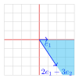
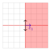
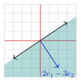
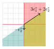
Example 7.6. We know that for \(v_1, v_2 \in \mathbb{R}^2,\) we have \(\langle v_1 , v_2 \rangle := v_1 \cdot v_2 = \lVert v_1 \rVert \lVert v_2 \rVert \cos \theta,\) where \(\theta\) is the angle between \(v_1\) and \(v_2.\) Therefore, \[\langle v_1 , v_2 \rangle \geq 0 \iff \theta \leq 90^{\circ}.\]
Example 7.7. Let us draw and identify the dual cone to \(\sigma = \textrm{cone}(\{e_1, 2e_1-3e_2\}).\) Figure 1.7. We denote by \(e^*_1, e^*_2\) the standard basis for \((\mathbb{R}^2)^*.\)
The dual cone to \(e_1\) is given by the half-space \(\textrm{cone}(\{e^*_1, e^*_2 , -e^*_2 \}).\) These are the elements in the shaded red area since their angle with \(e_1\) is less than or equal to 90 degrees. Therefore, their dot product with \(e_1\) is non-negative.
The dual cone to \(2e_1 -3e_2\) is given by the half-space \(\textrm{cone}(\{ 3e^*_1 + 2e^*_2, -3e^*_1 - 2e^*_2, 2e^*_1 - 3e^*_2\}).\)
Take the intersection. We see that \(\sigma^{\vee} = \textrm{cone}(\{-e_2^*, 3e^*_1 + 2e_2^* \}).\)
With identification \((\mathbb{R}^2)^* = \mathbb{R}^2,\) we have \(e_i^* = e_i.\)
Example 7.8. Let \(\{e_1, \dots , e_n \}\) be the standard basis for \(\mathbb{R}^n.\) For \(1 \leq r \leq n,\) let \(\sigma := \textrm{cone}(\{e_1, \dots , e_r \}) \subseteq \mathbb{R}^n\) then \(\sigma^{\vee}\) is generated by \[\{e_1, \dots , e_r , e_{r+1} , - e_{r+1}, \dots, e_n , -e_n \} \subseteq \mathbb{R}^n.\]
Proposition 7.9. Let \(\sigma \subseteq \mathbb{R}^n\) be a cone.
\(\big(\sigma^{\vee}\big)^{\vee} = \sigma.\)
If \(\sigma = \sigma_1 + \sigma_2,\) then \[\sigma^{\vee} = \sigma_1^{\vee}\cap \sigma_2^{\vee}.\]
If \(\sigma\) is rational then \(\sigma^{\vee}\) is also rational.
We leave the proof as an exercise.
7.2 Monoids
We are interested in additive properties of \(\sigma \cap \mathbb{Z}^n,\) where \(\sigma\) is a cone, which make it a monoid.
Definition 7.10.
A semi-group \(G\) is a non-empty set, with an associative binary operation.
A monoid \(S\) is a semi-group that is commutative, has a unique additive identity element zero, and satisfies the cancellation law, i.e., \[s+t = s'+t \implies s=s' \quad \text{ for } s,s',t \in S.\]
Example 7.11.
The set of \(n \times n\) matrices with matrix multiplication is a semi-group.
\(\mathbb{Z}_{\geq 0}\) is a monoid.
If \(\sigma \subseteq \mathbb{R}^n\) is a cone \(\sigma \cap \mathbb{Z}^n\) is a monoid.
Note that for a monoid we only have the notion of the addition of its elements, which gives rise to the following notion.
Definition 7.12. A monoid \(S\) is finitely generated if there are finitely many elements \(v_1, \dots , v_k\) in \(S,\) such that they generate \(S\) as a monoid, i.e., for any \(s\in S,\) there are non-negative integers \(q_i \in \mathbb{Z}_{\geq 0}\) such that \[s = q_1 v_1 + \dots + q_k v_k.\]
Gordan's Lemma: for a rational polyhedral cone \(\sigma\), the monoid \(S_\sigma = \sigma^\vee \cap \mathbb{Z}^n\) is finitely generated.
Theorem 7.13 (Gordan’s Lemma). Let \(\sigma\) be a rational (polyhedral) cone in \(\mathbb{R}^n\), then \(\sigma \cap \mathbb{Z}^n\) is a finitely generated monoid.
Proof. By definition, we can assume that \(\sigma = \textrm{cone}(\{v_1, \dots , v_k\}).\) Therefore, for any \(v\in \sigma \cap \mathbb{Z}^n,\) there exist \(r_i \in \mathbb{R}_{\geq 0},\) such that \[\begin{equation} \label{eq:positive-comb} v= r_1 v_1 + \dots + r_k v_k \, . \end{equation}\] Let \[G = \{t_1 v_1 + \dots + t_k v_k : ~0\leq t_i \leq 1 \}.\] \(G\) is a closed and bounded subset of \(\mathbb{R}^n,\) therefore it is compact. Hence, \(G\cap \mathbb{Z}^n\) has finitely many elements. See Figure 1.8. We claim that the lattice points in \(G \cap \mathbb{Z}^n,\) generate \(\sigma \cap \mathbb{Z}^n\) as a monoid. To see this, we rewrite Equation [eq:positive-comb] as \[v = \big(\lfloor r_1 \rfloor v_1 + \dots \lfloor r_k \rfloor v_k \big) + \Big((r_1-\lfloor r_1 \rfloor ) v_1 + \dots (r_k- \lfloor r_k \rfloor) v_k \Big) =: I + J.\] We have
\(I\) is in the set generated by \(G \cap \mathbb{Z}^n\) as a monoid;
\(J \in G.\) In addition, \(J = v - I\) and \(v, I\in \mathbb{Z}^n,\) therefore \(J\in G\cap \mathbb{Z}^n.\)
◻
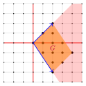
7.3 Affine Toric Varieties
In this section, we describe how to every rational cone \(\sigma \subseteq \mathbb{R}^n,\) we can assign an affine variety \(X_{\sigma} \subseteq \mathbb{A}^N\) which is unique up to isomorphism (usually \(n \neq N\)).
Definition 7.14. Let \(\sigma \subseteq \mathbb{R}^n\) be a rational cone, and \(S_\sigma = \sigma^{\vee} \cap \mathbb{Z}^n,\) be the associated monoid. We define \[\mathbb{C}[S_{\sigma}] = \text{$\mathbb{C}$-algebra generated by \{$z^m$: $m\in \sigma^{\vee} \cap \mathbb{Z}^n$\}}.\]
We can now easily verify that for \(m_1, m_2 \in \mathbb{Z}^n,\) \[\begin{align*} m_1 & \longmapsto z^{m_1} \\ m_2 & \longmapsto z^{m_2} \\ m_1 + m_2 & \longmapsto z^{m_1 + m_2} = z^{m_1} z^{m_2}. \end{align*}\] This implies that if we have finitely many \(\{m_1 , \dots , m_k\}\) generating a monoid \(S_{\sigma},\) i.e., with different combinations of their sums, then \(z^{m_1}, z^{m_2}, \dots , z^{m_n}\) generate \(\mathbb{C}[S_{\sigma}]\) as a \(\mathbb{C}\)-algebra. Let us clarify this with some examples.
Example 7.15.
Let \(\sigma_1 = \textrm{cone}(\{1\}) = \mathbb{R}_{\geq 0 }.\) We have \(\sigma_1^{\vee} = \mathbb{R}_{\geq 0 }\) and \(S_{\sigma_1} = \sigma_1^{\vee}\cap \mathbb{Z}= \mathbb{Z}_{\geq 0}\, .\) The \(\mathbb{C}\)-algebra generated by \(\{1, z_1^1, z_1^2, \dots \}\) is simply all the polynomials in variables \(z_1\) with coefficients in \(\mathbb{C}.\) Therefore, \[\mathbb{C}[S_{\sigma_1}] = \mathbb{C}[z_1].\]
Let \(\sigma_2 = \textrm{cone}(\{e_1, e_2\}) \subseteq \mathbb{R}^2.\) We have \(\sigma_2^{\vee} = \mathbb{R}_{\geq 0 } \times \mathbb{R}_{\geq 0 }\) and \(S_{\sigma_2} = \sigma_2^{\vee}\cap \mathbb{Z}^2 = \mathbb{Z}_{\geq 0} \times \mathbb{Z}_{\geq 0}\, .\) Therefore, \[\mathbb{C}[S_{\sigma_2}] = \mathbb{C}[z_1, z_2].\]
Let \(\sigma_3 = \textrm{cone}(\{e_1\}) \subseteq \mathbb{R}^2.\) We have \(\sigma_3^{\vee} = \mathbb{R}_{\geq 0 } \times \mathbb{R}\) and \(S_{\sigma_3} = \sigma_3^{\vee}\cap \mathbb{Z}^2 = \mathbb{Z}_{\geq 0} \times \mathbb{Z}.\) Therefore, \[\mathbb{C}[S_{\sigma_3}] = \mathbb{C}[z_1, z_2, z_2^{-1}].\]
Assume that \(\{e_1, \dots, e_n \}\) is now the standard basis for \(\mathbb{R}^n.\) For an integer \(0\leq k \leq n,\) let \(\sigma_4 = \textrm{cone}(\{e_1, \dots , e_k\}) \subseteq \mathbb{R}^n.\) Then \[\mathbb{C}[S_{\sigma_4}] = \mathbb{C}[z_1,\dots, z_k, z_{k+1}, z^{-1}_{k+1}, \dots,z_{n}, z^{-1}_{n}].\]
Exercise 7.16. Check that for the cone in Figure 1.7, \(S_{\sigma} \neq \mathbb{C}[z_1^{-1}, z_1^3 z_2^2].\) Find a set of generators for \(S_{\sigma}\) as a monoid.
Explore the monoid \(S_\sigma = \sigma^\vee \cap \mathbb{Z}^2\) and find a generating set.
In view of the Equivalence of Algebra and Geometry in Section 2.8, the following lemma is crucial.
Lemma 7.17. Let \(\sigma\) be a rational (polyhedral) cone in \(\mathbb{R}^n.\) Then, the associated \(\mathbb{C}\)-algebra \(\mathbb{C}[S_{\sigma}],\) is finitely generated and reduced. As a result, \(X_{\sigma}:=\text{maxSpec}\big( \mathbb{C}[S_{\sigma}]\big)\) is a closed affine algebraic variety.
The preceding lemma allows for the following definition.
Definition 7.18. For a rational polyhedral cone \(\sigma \subseteq \mathbb{R}^n,\) we define the associated toric variety (up to an isomorphism) to be \[X_{\sigma}:=\text{maxSpec}\big( \mathbb{C}[S_{\sigma}]\big).\] Note that \(X_{\sigma}\) is a topological space equipped with the Zariski topology defined in Section 2.7.
Proof of Lemma 7.17. By Gordan’s Lemma \(S_{\sigma}\) is finitely generated as a monoid. Hence, \(\mathbb{C}[S_{\sigma}]\) is a finitely generated \(\mathbb{C}\)-algebra. For reducedness, note that we need to prove that if \(f \in \mathbb{C}[S_{\sigma}]\) is polynomial, then \(f^n =0,\) for some positive integer \(n,\) then implies \(f=0.\) This is rather clear since we cannot make a Laurent polynomial vanish when we take the powers, as the highest positive degree increases and the lowest negative degree decreases. More formally, \(\mathbb{C}[S_{\sigma}]\) is a sub-algebra of \(\mathbb{C}[z_1, z_1^{-1}, \dots , z_n , z^{-1}_n],\) which is reduced, and therefore \(\mathbb{C}[S_{\sigma}]\) is reduced, as well. The rest of the assertion follows from the discussion in Section 2.7. ◻
Let us make the following important remark.
Remark 7.19. Note that by Theorem 2.39(a) and Lemma 7.17, \(\mathbb{C}[S_{\sigma}]\) is isomorphic as a \(\mathbb{C}\)-algebra to the coordinate ring of an affine algebraic variety \(V\). This affine algebraic variety is not unique. However, if for two varieties \(V\subseteq \mathbb{A}^n, W \subseteq \mathbb{A}^m,\) we have \(\mathbb{C}[V] \simeq \mathbb{C}[W] \simeq \mathbb{C}[S_{\sigma}],\) then \(V \simeq W\) by Theorem 2.39(c). In other words, we determine the affine toric varieties up to an isomorphism.
Remark 7.20. Recall that for any finitely generated \(\mathbb{C}\)-algebra \(S\), we defined the Zariski topology on \(\textrm{maxSpec}(S)\) by declaring the closed sets to be of the form \[\mathbb{V}(I) = \{\mathfrak{m}\in \textrm{maxSpec}(A): \mathfrak{m}\supseteq I \},\] for any ideal \(I \subseteq S.\)
Example 7.21. Let us revisit Section 4.2.1.
Let \(\sigma_1 = \textrm{cone}(\{1\}) = \mathbb{R}_{\geq 0} \subseteq \mathbb{R}.\) \(\mathbb{C}[S_{\sigma}] = \mathbb{C}[z].\) Thus, \[\text{maxSpec}( \mathbb{C}[z]) \simeq \mathbb{A}^1.\]
For \(\sigma_2 = \textrm{cone}(\{-1\}) = \mathbb{R}_{\leq 0} \subseteq \mathbb{R}.\) \(\mathbb{C}[S_{\sigma}] = \mathbb{C}[z^{-1}].\) Therefore, \[\text{maxSpec}( \mathbb{C}[z^{-1}]) \simeq \mathbb{A}^1.\]
For \(\tau= \textrm{cone}(\{0\}) \subseteq \mathbb{R}.\) \(\tau^{\vee} = \mathbb{R},\) and \(S_{\tau}= \mathbb{Z}.\) By Example 4.16, we have \[\mathbb{C}[S_{\tau}] = \mathbb{C}[z, z^{-1}] \implies \text{maxSpec}(\mathbb{C}[S_{\tau}]) \simeq \mathbb{A}^1 \setminus \{0\}.\]
Example 7.22.
Let \(\sigma_1 = \textrm{cone}({1,2}) = \mathbb{R}_{\geq 0} \subseteq \mathbb{R}.\) Let us take both generators \(\{1,2\}\) of \(S_{\sigma}.\) Then, \(\mathbb{C}[S_{\sigma}] = \mathbb{C}[z] = \mathbb{C}[z, z^2] = \frac{\mathbb{C}[x,y]}{(y-x^2)}.\) Thus, by Remark 7.19 we have the isomorphism: \[\text{maxSpec}(\{ \mathbb{C}[z]\}) \simeq \mathbb{A}^1 \simeq \mathbb{V}(x^2-y).\] This is Example 2.30.(b).
Let \(\sigma_2 = \textrm{cone}(\{(1, 0), (-1,0)\})\). Then \(\sigma_2^{\vee} = \textrm{cone}\{(0, 1), (0, -1)\}.\) \(\mathbb{C}[S_{\sigma_2}] = \mathbb{C}[y, y^{-1}].\) We can also understand this algebra by \[\begin{align*} (0,1) &\longmapsto u \\ (0,-1) &\longmapsto v \\ \end{align*}\] and the relation \((0,1) + (0, -1) = (0,0),\) which implies \(uv= u^{0}v^{0}= 1.\) Thus, \[\mathbb{C}[S_{\tau}] \simeq \mathbb{C}[y, y^{-1}] \simeq \frac{\mathbb{C}[u,v]}{(uv -1 )}.\] By preceding example \(\mathbb{C}^* \simeq \mathbb{V}(uv -1).\)
Exercise 7.23. Let \(\sigma = \textrm{cone}(\{1,2,3\}) = \mathbb{R}_{\geq 0} \subseteq \mathbb{R}.\) Take all \(\{1,2,3\}\) as generators of \(S_{\sigma}\).
Identify \(\mathbb{C}[S_{\sigma}].\)
Identify \(X_{\sigma}\).
7.3.1 Cartesian Product of Affine Algebraic Varieties
Let \(I = (f_1, \dots , f_k) \subseteq \mathbb{C}[z_1, \dots , z_n]\) and \(J = (g_1, \dots , g_{\ell}) \subseteq \mathbb{C}[t_1, \dots , t_m],\) be two radical ideals. Then, \[\mathbb{V}(I) \times \mathbb{V}(J) = \mathbb{V}(f_1, \dots , f_k , g_1, \dots , g_{\ell}) \subseteq \mathbb{A}^n \times \mathbb{A}^m\] With the coordinate ring given by \(\frac{\mathbb{C}[z_1, \dots , z_n, t_1, \dots , t_m]}{(f_1, \dots , f_k , g_1, \dots , g_{\ell}) } = \mathbb{C}[V] \otimes_\mathbb{C}\mathbb{C}[W],\) with the induced Zariski topology on \[\text{maxSpec}( \mathbb{C}[V] \otimes_\mathbb{C}\mathbb{C}[W]).\]
Remark 7.24. The Zariski topology on \(V \times W\) is larger than the product topology, and for instance, on \(\mathbb{A}^1 \times \mathbb{A}^1\) is homeomorphic to \(\mathbb{A}^2\) but we have seen in Exercise 1.11 that \(\mathbb{V}(x-y)\) is not a closed set in \(\mathbb{A}^1 \times \mathbb{A}^1\) with product topology.
Example 7.25. In Example 7.15, \(\sigma_4 = \textrm{cone}(\{e_1, \dots , e_k\}),\) we have \[X_{\sigma_4} = \mathbb{C}^k \times (\mathbb{C}^*)^{n-k}.\] equipped with Zariski topology. Since \(\text{maxSpec}(\mathbb{C}[z_i, z_i^{-1}]) \simeq \mathbb{C}^*\), and \(\text{maxSpec}(\mathbb{C}[z_i]) \simeq \mathbb{C}.\)
7.3.2 More Examples
Example 7.26. Let us consider \(\sigma = \textrm{cone}(\{e_1 , e_2 \}) \subseteq \mathbb{R}^2,\) from Figure 1.7. We can see that \(\sigma^{\vee} = \textrm{cone}({e_1, e_2})\) is also generated as a monoid by \[\{(1,0),(1,1), (0,1)\}.\] The assignment \[\begin{align*} X & \longmapsto z^{(1,0)} = z_1 \\ Y & \longmapsto z^{(1,1)} = z_1 z_2 \\ Z & \longmapsto z^{(0,1)} = z_2, \\ \end{align*}\] Induces a \(\mathbb{C}\)-algebra morphism \(\mathbb{C}[X, Y , Z] \longrightarrow\mathbb{C}[z_1, z_1 z_2, z_2] = \mathbb{C}[z_1,z_2].\) The relation \((1,0)+(0,1) = (1,1),\) implies that the ideal \((Y- XZ),\) is the kernel of this \(\mathbb{C}\)-algebra morphism, and we obtain an isomorphism of \(\mathbb{C}\)-algebras \(\frac{\mathbb{C}[X, Y , Z]}{XZ -Y} \simeq \mathbb{C}[z_1, z_2].\) This, in turn, implies the isomorphism of varieties \(\mathbb{C}^2 \simeq \mathbb{V}(XZ-Y).\)
Example 7.27. We can check that \(\text{maxSpec}(\mathbb{C}[z_2, z_1 z_2^{-1} ])\simeq \mathbb{C}^2.\) In fact, you have already done this in Section 4.2.2.
Example 7.28. Back to the cone in Figure 1.8. We have \(\sigma = \textrm{cone}(\{2e_1+2e_2, 2e_1 - 3e_2\})\subseteq \mathbb{R}^2.\) It is easy to see that \(\{e_1, 2e_1 - 3e_2\}\) does not generate \(S_{\sigma}\) as a monoid. However, the proof of Gordan’s Lemma implies that all the lattice points in the orange area \(G\) do generate \(S_{\sigma}.\) As a result, the monomials \(\{z^m : m \in G \}\) generate the \(\mathbb{C}\)-algebra \(\mathbb{C}[S_{\sigma}].\) Note that we have some redundancy here and we can indeed find a lower number of generators as well.
The preceding example leads to the following question: Question. Given \(m_1=(a,b), m_2= (c,d) \in \mathbb{Z}^2,\) how can we make sure that they generate \(\textrm{cone}(\{m_1, m_2\})\) as a monoid? Answer. Check whether or not \[\det \begin{pmatrix} a& b \\ c & d \end{pmatrix} = \pm 1.\] See Exercise 7.31.
Exercise 7.29. For \(a,b,c,d \in \mathbb{Z},\) assume that \[\det \begin{pmatrix} a& b \\ c & d \end{pmatrix} = \pm 1.\]
Prove that the assignment \[\begin{align*} z_1 &\longmapsto z_1^a z_2^b \\ z_2 &\longmapsto z_1^c z_2^d, \end{align*}\] induces a \(\mathbb{C}\)-algebra isomorphism between \(\mathbb{C}[z_1, z_2]\) and \(\mathbb{C}[z_1^a z_2^b, z_1^c z_2^d].\)
If \(\textrm{cone}( \{(a,b), (c,d) \})\) is the dual of a cone \(\sigma\) then \(V_{\sigma}\) is smooth.
If \(\sigma = \textrm{cone}(\{v_1,v_2\})\) is a rational cone with \(\det(v_1 | v_2) = \pm 1,\) then this property also holds \(\sigma^{\vee}\).
Exercise 7.30. For a finite subset \(A \subseteq \mathbb{Z}^n,\) let \(f(z) = \sum_{\alpha\in A} c_{\alpha} z^{\alpha} \in \mathbb{C}[z, z^{-1}] = \mathbb{C}[z_1, z_1^{-1}, \dots , z_n , z^{-1}_n]\) be a Laurent polynomial.
We define the support of \(f\), by \({\mathrm{supp}(f)} = \{\alpha \in \mathbb{Z}^n: c_{\alpha} \neq 0\}.\) Check that \({\mathrm{supp}(z_1^2 + z_1 z_2^{-5} )}\) in \(\mathbb{R}^2\) is \(\{ (1, 0), (1,-5)\}.\)
Verify that \(\mathbb{C}[S_{\sigma}] = \{f \in \mathbb{C}[z_1,z_1^{-1}, \dots, z_n,z_n^{-1}]: {\mathrm{supp}(f)} \subseteq S_{\sigma}\}.\)
We define the Newton Polytope of \(f\) to be the smallest convex set containing the support of \(f.\) Show that \[\text{Newton polytope of $f^n = n \times \text{Newton polytope of } f.$ }\]
Here is a nice exercise to know when you have a set of generators and in fact works for any dimension.
Exercise 7.31.
If \(A= \{m_1=(a,b), m_2= (c,d)\} \in \mathbb{Z}^2,\) then \[\begin{multline*} \det(m_1 | m_2 ):= \det \begin{pmatrix} a& b \\ c & d \end{pmatrix} = \pm 1, \\ \text{ if and only if,}\\ \text{$A$ generates $\textrm{cone}(A) \cap \mathbb{Z}^2$ as a monoid}. \end{multline*}\]
If \(B= \{m_1, \dots , m_k\}\subseteq \mathbb{Z}^2\) and \(\det(w_i|w_{i+1}) = \pm 1\) for \(i=1, \dots , k\) where \(w_1, \dots , w_k\) are another ordering of \(m_1, \dots, m_k,\) then \(B\) generates \(\textrm{cone}(B) \cap \mathbb{Z}^2\) as a monoid.
Exercise 7.32. In Figure 1.9, find a set of generators for \(\textrm{cone}( \{-e_2, 3e_1+2e_2\})\cap \mathbb{Z}^2\) and the relations between these generators.
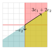
7.4 Abstract Varieties and Glueing Data
We now intend to create new varieties using existing ones. This process resembles the glueing in topology. To achieve this, we require some data for the glueing process, which includes:
A set \(I\);
For each \(i \in I\), an affine algebraic variety \(X_i\);
For each pair \(i, j \in I\), an open subvariety \(X_{ij} \subseteq X_i\);
For each pair \(i, j \in I\), an isomorphism of varieties \(g_{ij} : X_{ij} \rightarrow X_{ji}\).
These data need to be compatible in the following sense:
For any \(i, j, k \in I\), \(g_{ij}(X_{ij} \cap X_{ik}) = X_{ji} \cap X_{ki}\);
For any \(i, j, k \in I\), \(g_{jk} \circ g_{ij} = g_{ik}\) on \(X_{ij} \cap X_{ik}\);
For any \(i \in I\), \(g_{ii} = \operatorname{id}_{X_{ii}}\).
Now using the given glueing data, we define the abstract algebraic variety as \[X := \left(\bigsqcup_{i \in I} X_i\right)/\sim,\] where \(x \sim y\) if and only if there exist \(i,j \in I\) such that \(x \in X_{ij} \subseteq X_i\) and \(y \in X_{ji} \subseteq X_j\) such that \(g_{ij}(x) = y\). This gives our space the usual quotient topology.
Definition 7.33. A complex abstract algebraic variety is called
an abstract affine variety if it is isomorphic to an affine algebraic subvariety of \(\mathbb{A}^n\) for some \(n\). An open subset of an abstract affine variety is called abstract quasi-affine variety.
an abstract projective variety if it is isomorphic to a projective algebraic subvariety of \(\mathbb P^n\), for some \(n\). An open subset of an abstract projective variety is called abstract quasi-projective variety.
separated if it is Hausdorff with respect to the Euclidean topology.
complete if it is compact with respect to the Euclidean topology.
Remark 7.34. There are general definitions of separatedness and completeness that can be verified for any field, but we skip them here for simplicity.
Remark 7.35. The following exercise is a useful warning about the role of affineness.
Let \(X\) be an abstract affine variety and let \(Y\) be a closed affine variety. If \[\mathcal{O}_X(X) \simeq \mathbb{C}[Y]\] as \(\mathbb{C}\)-algebras, then \(X\) and \(Y\) are isomorphic as algebraic varieties. In particular, they are homeomorphic.
Give an example showing that the hypothesis that \(X\) is affine is necessary. In other words, global regular functions do not always determine the topology of the underlying variety.
For instance, part (b) can be tested against projective varieties, where global regular functions are often much too few to remember the whole space.
7.5 Faces of a Cone
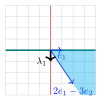
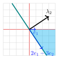
Definition 7.36. A subset \(\tau\) of a cone \(\sigma\) is called a face, if there exist \(\lambda \in \sigma^{\vee},\) such that \[\tau = \lambda^{\perp} \cap \sigma = \{x \in \sigma: \langle \lambda , x \rangle =0 \}.\] In this case, we write \(\tau \preceq \sigma.\)
Example 7.37. In Figure 1.10, we can easily verify that \(\sigma = \textrm{cone}(\{e_1, 2e_1-3e_2\})\) has 4 faces: \(\{0\}, \textrm{cone}(\{e_1\}), \textrm{cone}(\{2e_1-3e_2\}),\) and \(\sigma.\)
Proposition 7.38. Let \(\sigma\) be a rational cone, then
Every face \(\tau = \sigma \cap \lambda^{\perp}\) is rational cone.
Intersection of every two faces of \(\sigma\) is also a face of \(\sigma.\)
Every face of a face is a face of \(\sigma.\)
If \(\tau \preceq \sigma,\) then \(\sigma^{\vee} \subseteq \tau^{\vee}.\)
Proof. We leave the proof as an exercise. ◻
Proposition 7.39. Let \(\sigma\) be a strongly convex cone. If \(\tau \preceq \sigma\) is a face, then \(\tau^{\vee} = \sigma^{\vee}+ \mathbb{R}_{\geq 0} (-\lambda),\) for some \(\lambda \in \sigma^{\vee} \cap \mathbb{Z}^2.\)
Proof. By Proposition 7.9.(a) it suffices to prove the above equality for the dual of each side. By Proposition 7.9.(b), we need to show \[\tau = \sigma \cap \big(\mathbb{R}_{\geq 0} (-\lambda)\big)^{\vee} = \sigma \cap \textrm{cone}(\{-\lambda \})^{\vee} = \sigma \cap \lambda^{\perp}.\] To justify the latter equality, if \(x \in \sigma \cap \textrm{cone}(\{-\lambda \})^{\vee}\) then \(\langle -\lambda, x \rangle \geq 0.\) However, by assumption \(\lambda \in \sigma^{\vee}\) and \(\langle \lambda, x \rangle \geq 0.\) Thus \(x \in \lambda^{\perp}.\) ◻
Example 7.40. Review Figures 1.7, 1.10 and [fig:dual_cone_sum].
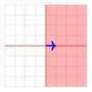
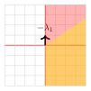
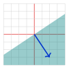
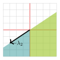
Adjust the translation vector \(v = (v_x, v_y, v_z)\) to see how the Minkowski sum \(A + \{v\}\) shifts a cone in 3D space.
Exercise 7.41. Let \(\sigma_1 =\textrm{cone}(\{(e_1, e_1+e_2)\}), \sigma_2 =\textrm{cone}(\{(e_2, e_1+e_2)\}), \tau = \textrm{cone}(\{(e_1+e_2)\}).\) We have \(\tau \preceq \sigma_1\) and \(\tau \preceq \sigma_2.\) Find \(\lambda_i \in \sigma_i^{\vee} \cap \mathbb{Z}^2\) such that \(\tau = \sigma_i \cap \lambda_i^{\perp}.\) Verify that \(\mathbb{R}_{\geq 0}(-\lambda_i)+ \sigma^{\vee}_i = \tau^{\vee},\) for \(i=1,2.\)
Recall that for a cone \(\sigma,\) \[S_{\sigma}= \sigma^{\vee} \cap \mathbb{Z}^n.\]
Proposition 7.42. Let \(\sigma\) be a rational strongly and let \(\tau\) be a face of \(\sigma\) given by \(\tau = \lambda^\perp \cap \sigma\), where \(\lambda \in \sigma^{\vee} \cap \mathbb{Z}^n\) is the smallest lattice vector satisfying this property. Then, we have \(S_{\tau} = S_{\sigma} + \mathbb{Z}_{\geq 0}(-\lambda)\).
Proof. In Proposition 7.39, take the intersection of both sides with \(M = \mathbb{Z}^n\). We obtain \(S_{\sigma}= \tau^{\vee} \cap \mathbb{Z}^n\) on the left-hand side. On the right-hand side, we obtain \[\big(\sigma^{\vee} \cap \mathbb{Z}^n\big) + \big( \mathbb{R}_{\geq 0 } (-\lambda) \cap \mathbb{Z}^n \big).\] Note that since \(\lambda\) satisfies \(\mathbb{Z}^n \cap (\mathbb{R}_{\geq 0} (-\lambda)) = (\mathbb{Z}_{\geq 0} (-\lambda)).\) ◻
Remark 7.43. In the preceding proposition, note that if \(\lambda\) were not the smallest lattice vector, then \[\mathbb{R}_{\geq 0 } (-\lambda) \cap \mathbb{Z}^n \neq \mathbb{Z}_{\geq 0} (-\lambda).\] However, even in this case, we have that \[S_{\tau} = S_{\sigma} + \mathbb{Z}_{\geq 0}(-\lambda).\] To see this, assume that \(\lambda'\) is the smallest lattice vector such that \(\textrm{cone}(\{\lambda\}) = \textrm{cone}(\{\lambda'\}),\) thus \(\lambda =q \lambda',\) for some \(q\geq 1\) is an integer. We claim that \(-\lambda' \in S_{\sigma} + \mathbb{Z}_{\geq 0}(-\lambda).\) Note that \(\lambda' \in \sigma^{\vee} \cap \mathbb{Z}^n\) (an integer vector in \(\sigma^{\vee}\)) therefore, \((q-1)\lambda' \in \sigma^{\vee} \cap \mathbb{Z}^n.\) As a result, \[-\lambda' = -\lambda + (q-1) \lambda' \in \big( \mathbb{Z}_{\geq 0}(-\lambda) \big) + (\sigma^{\vee} \cap \mathbb{Z}^n).\]
7.6 Fans
Definition 7.44. Let \(\Sigma\) be a finite collection of cones in \(\mathbb{R}^2.\) \(\Sigma\) is a fan if it satisfies,
Each cone \(\sigma\in \Sigma\) is a strongly convex rational cone.
If \(\sigma \in \Sigma\) then all the faces of \(\sigma\) also belong to \(\Sigma.\)
If \(\sigma_1, \sigma_2 \in \Sigma,\) then \(\sigma_1 \cap \sigma_2\) is a face of each.
The dimension of a cone in \(\mathbb{R}^n\) is the dimension of the minimal subspace of \(\mathbb{R}^n\) containing \(\sigma.\)
Example 7.45. In Figure 1.12, the collection of the cones on the left is not a fan. It consists of 3 two-dimensional cones, 3 one-dimensional cones, and 1 zero-dimensional cone that is not a fan, since Properties (a) for the orange cone, Property (c) also fails since the \(y-\)axis is the face of the orange cone but not a face of the purple or pink cone. On the right, we have a fan with 3 two-dimensional cones.
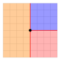
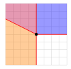
For simplicity, in this version of the notes, we only consider the cones in \(\mathbb{R}^2.\)
Definition 7.46.
A fan \(\Sigma \subseteq \mathbb{R}^2\) is called complete if it covers \(\mathbb{R}^2.\)
A two-dimensional cone \(\sigma= \text{cone}(\{v_1, v_2 \})\) is called smooth if linear combinations of \(v_1\) and \(v_2\) with coefficients in \(\mathbb{Z}\) span \(\mathbb{Z}^2.\) A 2-dimensional fan \(\Sigma\) is called smooth, if for all two dimensional cones \(\sigma \in \Sigma,\) \(\sigma\) is smooth.
A subdivision of a cone \(\sigma\) is a fan, such that the underlying set of the fan as a set covers \(\sigma.\)
Lemma 7.47. If \(\sigma \subseteq \mathbb{R}^2\) is a two-dimensional strongly convex smooth cone, then \(X_{\sigma}\) is a smooth closed affine algebraic variety.
Proof. It is easy to see that a two-dimensional cone \(\sigma,\) is smooth, if there are \(v_1, v_2\in \mathbb{Z}^2,\) such that \(\sigma = \textrm{cone}(\{v_1, v_2\})\) and \(\left| \det \big(v_1 | v_2 \big) \right|=1.\) Moreover, if we have \(A = \big(v_1 | v_2 \big) \in \text{GL}_2(\mathbb{Z}),\) using the fact that \[A^{-1} = \frac{1}{\det A}~\text{Adj}(A),\] we find that \(A^{-1} \in \text{GL}_2(\mathbb{Z}).\) Now it is not hard to see that the dual cone \(\sigma^{\vee} = \textrm{cone}(\{w_1, w_2 \})\) is also smooth, and we obtain a \(\mathbb{C}\)-algebra homomorphism \(\Phi,\) such that \[\begin{align*} \Phi_A: \mathbb{C}[\sigma^{\vee} \cap \mathbb{Z}^2] & \longrightarrow\mathbb{C}[z_1, z_2] \\ z^{w_1} & \longmapsto z_1 \\ z^{w_2} & \longmapsto z_2 \, . \end{align*}\] has the inverse \(\Psi:= \Phi_{A^{-1}}.\) This induces an isomorphism between the corresponding varieties \(X_{\sigma} \simeq \mathbb{C}^2.\) Hence, \(X_{\sigma}\) is smooth. ◻
Exercise 7.48. Prove that \(\sigma\) is smooth, if and only if, \(\sigma^{\vee}\) is smooth.
7.7 From Fans to Toric Varieties
Now we explain how for a fan \(\Sigma \in \mathbb{R}^2,\) the associated toric variety \(X_{\Sigma}\) is defined.
Lemma 7.49. Let \(\sigma_1\) and \(\sigma_2\) be \(2\) two-dimensional strongly convex rational cones. Assume that \(\tau= \sigma_1 \cap \sigma_2\) is a face of both \(\sigma_1\) and \(\sigma_2\). Then there exists \(\lambda \in \mathbb{Z}^2,\) such that
\(\tau = \lambda^{\perp} \cap \sigma_1 = \lambda^{\perp} \cap \sigma_2,\) with \(\lambda \in \sigma_1^{\vee} \cap \mathbb{Z}^2\) and \(-\lambda \in \sigma_2^{\vee} \cap \mathbb{Z}^2.\)
\(\mathbb{C}[S_\tau] = \mathbb{C}[S_{\sigma_1}+ \mathbb{Z}_{\geq 0}(-\lambda)] =\mathbb{C}[S_{\sigma_2}+ \mathbb{Z}_{\geq 0}(\lambda)].\)
In addition, we have the inclusion of open subvarieties \(X_{\tau}\subseteq X_{\sigma_1}\) and \(X_{\tau}\subseteq X_{\sigma_2}.\)
\(\mathcal{O}_{X_{\sigma_i}} (X_{\sigma_i}) \simeq \mathbb{C}[S_{\sigma_i}] ,\) \(\mathcal{O}_{X_{\sigma_1}} (X_{\tau}) \simeq \mathbb{C}[S_{\sigma_1}]_{z^{\lambda}},\) \(\mathcal{O}_{X_{\sigma_2}} (X_{\tau}) \simeq \mathbb{C}[S_{\sigma_2}]_{z^{-\lambda}}\, .\)
Proof.
There is a unique line \(H_{\lambda}= \lambda^{\perp} = \{x \in \mathbb{R}^2: \langle \lambda , x \rangle =0 \}\) with dimension equal to \(\dim(\tau)=1,\) containing \(\tau.\) Since \(\tau\) is rational, we can assume \(\lambda \in \mathbb{Z}^2.\) We have that \[H_{\lambda} \cap \sigma_1 = H_{\lambda} \cap \sigma_2 = \tau.\] Since \(\sigma_1, \sigma_2\) are strongly convex, we can assume \(\sigma_1 \subseteq H^+_{\lambda}= \{x \in \mathbb{R}^2: \langle \lambda , x \rangle \geq 0 \},\) and \(\sigma_2 \subseteq H^-_{\lambda}= \{x \in \mathbb{R}^2: \langle \lambda , x \rangle \leq 0 \}.\) Thus, \(\langle \lambda , x \rangle \geq 0,\) for \(x \in \sigma_1\) and \(\lambda \in \sigma_1^{\vee}.\) Similarly, \(-\lambda \in {\sigma_2}^{\vee}.\)
This is a simple consequence of Part (a) and Proposition 7.42.
Since \(\text{maxSpec}\) is contravariant, the inclusions \(S[\tau] \supseteq S[\sigma_i],\) for \(i=1,2,\) imply that \[X_\tau \subseteq X_{\sigma_i}.\] Now assume that \(\{v_1, \dots , v_k \}\) are some generators for \(S_{\sigma_1}.\) Let \(f(z) = z^{\lambda},\) then Part (b) gives \[\mathbb{C}[S_\tau] = \mathbb{C}[z^{v_1}, \dots , z^{v_k}, f^{-1}] \simeq \frac{\mathbb{C}[z^{v_1}, \dots , z^{v_k},y]}{(y f-1)},\] this implies that \[\begin{align*} X_{\tau} &\simeq X_{\sigma_1} \cap \{ f\neq 0 \}= X_{\sigma_1} \cap D(f), \end{align*}\] which is an open subset of \(X_{\sigma_1},\) often denoted as \(\big(X_{\sigma_1}\big)_f\) (The complement of \(f=0\) in \(X_{\sigma_1}\) is open.) Compare to Example 4.16 and the following remarks. We have the result similarly for \(\sigma_2:\) \[\begin{align*} X_{\tau} &\simeq X_{\sigma_2} \cap \{ f^{-1}\neq 0 \} = X_{\sigma_2} \cap D(f^{-1}), \end{align*}\]
Since \(\mathbb{C}[S_{\sigma_i}]\) is the coordinate ring of the affine variety \(X_{\sigma_i},\) \(\mathcal{O}_{X_{\sigma_i}} (X_{\sigma_i}) \simeq \mathbb{C}[S_{\sigma_i}]\) follows from Theorem 4.7. By previous parts, \(\mathcal{O}_{X_{\sigma_1}} (X_{\tau}) \simeq \mathbb{C}[S_{\sigma_1}, f^{-1}].\) Denoting \(\mathbb{C}[S_{\sigma_1}, f^{-1}]\) as \(\mathbb{C}[S_{\sigma_1}]_f\) is just a notation called localisation. We deduce the statement by taking \(f= z^{\lambda}\) and \(f= z^{-\lambda}\), respectively and using (b).
◻
7.7.1 A Recipe for Constructing Toric Varieties from a Fan
Now we discuss how to obtain an abstract variety from a fan. This abstract variety is separated and unique up to an isomorphism. This process works in any dimension, but for this version of the notes we stick to dimension 2.
At first sight this recipe might look different from the glueing construction in Cox–Little–Schenck’s Toric varieties (Cox et al. 2011). In Section 7.8 we explain the point of confusion: the formula below is written in chart coordinates, while the invariant glueing map is the identity on characters.
Glueing smooth cones along a common face
Input. A two dimensional
smooth fan \(\Sigma \subseteq
\mathbb{R}^2.\)
Output. A two dimensional smooth separated abstract
toric surface \(X_{\Sigma}.\)
For each two-dimensional cone \(\sigma\) find \(\sigma^{\vee},\) and \(\mathbb{C}[S_{\sigma}]= \mathbb{C}[\sigma^{\vee}\cap \mathbb{Z}^2].\)
If \(\tau= \sigma_i \cap \sigma_j,\) is a face dimension one, find \(\lambda \in \sigma_i^{\vee}\) such that \(-\lambda \in \sigma_j^{\vee}\) and \(\tau= \sigma_i \cap \lambda^{\perp}= \sigma_j \cap \lambda^{\perp}.\) By Lemma 7.49, \[\mathbb{C}[S_\tau] = \mathbb{C}[S_{\sigma_i}+ \mathbb{Z}_{\geq 0}(-\lambda)] =\mathbb{C}[S_{\sigma_j}+ \mathbb{Z}_{\geq 0}(\lambda)]\]
Find \(\mu_i\) and \(\mu_j,\) such that \(\sigma_i^{\vee}= \textrm{cone}(\{\lambda, \mu_i \})\) and \(\sigma_j^{\vee}= \textrm{cone}(\{-\lambda, \mu_j \}).\)
Consider the isomorphism of \(\mathbb{C}\)-algebras \(\Phi_{ji}\)

that extends the assignment \[\begin{align} z^{-\lambda} &\longmapsto z^{\lambda} \\ z^{\mu_j} &\longmapsto z^{\mu_i} \end{align}\] This induces the isomorphism of open subsets \(g_{ij }\)

which we use as glueing data. Note that \(g^*_{ij } = \Phi_{ji}.\)
Define the glueing abstract toric variety \[X_{\Sigma} := \left(\bigsqcup_{\sigma \in \Sigma} X_\sigma\right)/\sim \, ,\] where \(x \sim y\) if and only if there exist \(i,j \in I\) such that \(x \in X_{\tau} \subseteq X_{\sigma_i}\) and \(y \in X_{\tau} \subseteq X_{\sigma_j}\) such that \(g_{ij}(x) = y\).
This procedure produces a separated toric variety.
Now we can understand the following theorem in combinatorial algebraic geometry:
Theorem 7.50.
\(\Sigma\) is smooth, if and only if, \(X_{\Sigma}\) is smooth.
\(\Sigma\) is complete, if and only if, \(X_{\Sigma}\) is complete.
Proof. In dimension 2, the ‘only if’ implication in Part (a) is implied by Lemma 7.47, since the smoothness can be checked locally. For the rest See (Cox et al. 2011). ◻
Example 7.51. Consider the one dimensional fan \(\Sigma\) consisting of \(\sigma_1 = \textrm{cone}(\{1\}), \sigma_2 = \textrm{cone}(\{-1\}), \tau= \textrm{cone}(\{0\}).\) We know from Example 7.21 that \(\mathbb{C}[S_{\sigma_1}] = \mathbb{C}[z], \mathbb{C}[S_{\sigma_2}] = \mathbb{C}[z^{-1}], \mathbb{C}[S_{\tau}] = \mathbb{C}[z, z^{-1}].\) Note that \(\mathbb{C}[\tau] = \mathbb{C}[z]_{z} \supseteq \mathbb{C}[z].\) Similarly, \(\mathbb{C}[\tau] = \mathbb{C}[z^{-1}]_{z^{-1}} \supseteq \mathbb{C}[z^{-1}].\) These imply that \(X_{\tau}\subseteq X_{\sigma_i}\), \(i=1,2\) as an open subset. We have that \(X_{\sigma_i} \simeq \mathbb{C}\) and \(X_{\tau} \simeq \mathbb{C}^*.\) The above recipe tells us to derive the glueing data based on the homomorphism
Such that \[\begin{align*} z \longmapsto z^{-1}. \\ % z^{\mu_1} \lmto z^{\mu_2} \end{align*}\] This induces the glueing \(X_\tau\)
which is exactly the description of \(\mathbb P^1\) in Section 4.2.1. If instead, we use the glueing map \(z \longmapsto z,\) we get a non-separated variety which is not the correct one (Figure 2.1).
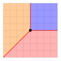
Exercise 7.52.
Let \(\Sigma\) be the fan given in Figure 2.2.
What is the toric variety \(X_{\Sigma}?\)
Is the variety smooth or complete?
Lemma 7.53. (This Lemma) In Step 4 of Section 7.7.1 to obtain a separated toric variety \(\Phi_{ji}\)
must extend \[\begin{align} z^{-\lambda} &\longmapsto z^{\lambda} % z^{\mu_j} &\lmto z^{\mu_i} \end{align}\] to an isomorphism.
Proof. By a monomial change of coordinates, we can assume that \(\mathbb{C}[S_{\sigma_1}] = \mathbb{C}[z^{e_1},z^{e_2}]\) and \(\mathbb{C}[\sigma_2] = \mathbb{C}[ z^{-e_1}, z^{\mu}].\) Here \(\tau= \textrm{cone}(\{e_2\}).\) We, therefore, obtain \(\mathbb{C}[S_{\tau}] = \mathbb{C}[z^{e_1}, z^{-e_1},z^{e_2}]\) which contains \(\mathbb{C}[S_{\sigma_1}]\) and \(\mathbb{C}[S_{\sigma_2}].\) Note that \(X_{\sigma_1} \simeq X_{\sigma_2} = \mathbb{C}^2\) and \(X_{\tau}\simeq \mathbb{C}^* \times \mathbb{C}.\) Note that the invertible generators must be mapped to each other. As a result, there are only two choices \[\begin{align} z^{-e_1} &\longmapsto z^{e_1} % z^{\mu_j} &\lmto z^{\mu_i} \end{align}\] or \[\begin{align} z^{e_1} &\longmapsto z^{e_1} % z^{\mu_j} &\lmto z^{\mu_i} \end{align}\] It is easy to check that that the glueing of \(X_{\sigma}\) and \(X_{\sigma_2}\) along \(X_{\tau}\) is separated if and only if the diagonal mapping \(X_{\tau}\longrightarrow X_{\sigma_1} \times X_{\sigma_2}\) given by \(z \longmapsto(z, g_{12}(z))\) is a closed embedding. That is, the image of \(X_{\tau}\) under the map \((z, g_{12}(z))\) is a closed affine algebraic subvariety of \(X_{\sigma_1} \times X_{\sigma_2} \simeq \mathbb{C}^4.\) For the choice \(\Psi_{21}(z^{e_1}) = z^{e_1},\) and \(\Psi_{21}(z^{e_2}) = z^{\mu_2}.\) If \(\mu_2 = (m_1, m_2),\) we obtain, \(z= (z_1, z_2) \longmapsto\big(z_1, z_2 , z_1, z_1^{m_1} z_2^{m_2}\big) =: (z_1, z_2, C, D).\) The defining equations are therefore \(D= z_1^{m_1} z_2^{m_2}\) and \(C= z_1.\) However, on \(V_{\tau},\) \(z_1\neq 0\) and this intersection does not yield a closed affine algebraic variety. On the other hand, the image \(z= (z_1, z_2) \longmapsto\big(z_1, z_2 , z_1^{-1}, z_1^{m_1} z_2^{m_2}\big),\) can be described by \(D= z_1^{m_1} z_2^{m_2}\) and \(C= z_1^{-1},\) or \(Cz_1^{-1} = 0,\) which is a closed affine algebraic subvariety of \(X_{\sigma_1} \times X_{\sigma_2},\) and \(z_1 \neq 0.\) ◻
Exercise 7.54. Let \(\Sigma\) be the fan consisting of
\(\sigma_1\) cone spanned by \(\{(1,0), (1,1)\};\)
\(\sigma_2\) cone spanned by \(\{(0,1), (1,1)\};\)
\(\tau\) cone spanned by \(\{(1,1)\}.\)
Determine whether or not the toric variety \(X_{\Sigma}\) has the following properties. Briefly justify your answer.
smooth;
complete.
Describe the coordinate rings of \(X_{\sigma_1},\) \(X_{\sigma_2}\), and \(X_{\tau}.\)
Explain why we have the inclusions \(\mathbb{C}[X_{\sigma_1}] \subseteq \mathbb{C}[X_{\tau}],\) \(\mathbb{C}[X_{\sigma_2}] \subseteq \mathbb{C}[X_{\tau}];\)
Describe the glueing of \(X_{\sigma_1}\) and \(X_{\sigma_2}\) along \(X_{\tau}.\)
Solutions. We have that \[\begin{align*} \mathbb{C}[S_{\sigma_1}] & = \mathbb{C}[y, \frac{x}{y}] \\ \mathbb{C}[S_{\sigma_2}] & = \mathbb{C}[x, \frac{y}{x}] \\ \mathbb{C}[S_{\tau}] & = \mathbb{C}[x,y , \frac{x}{y}, \frac{y}{x} ] \end{align*}\] By Lemma 7.47, we have that \(X_{\sigma_1} \simeq X_{\sigma_2} \simeq \mathbb{C}^2.\) This is like treating \(\frac{y}{x}\) in \(\mathbb{C}[S_{\sigma_1}]\) as a new variable \(t.\) We easily get that if \[\begin{align*} t &\longmapsto\frac{x}{y} \\ y &\longmapsto y \\ x &\longmapsto x, \end{align*}\] then \(x=ty.\) Similarly, \(X_{\sigma_2} \simeq \mathbb{V}(ux-y).\) Given the recipe, we can find the unique \(\mathbb{C}\)-algebra morphism
that assigns \[\begin{align*} y &\longmapsto x \\ \frac{x}{y} &\longmapsto\frac{y}{x} \end{align*}\] This induces the isomorphism of algebraic varieties

which we can use for glueing. (This part is more than what is asked in the question:) In fact, \[X_{\Sigma} \simeq \textrm{Bl}_{0} (\mathbb{A}^2).\] To see this, let us prove that \(\textrm{Bl}_{0} (\mathbb{A}^2)\) is an analytic manifold and exactly determines the maps of change of coordinates as given by the fan. Recall that \[\textrm{Bl}_0(\mathbb{A}^2) = \{\big((x,y);[t:u] \big) \in \mathbb{A}^2 \times \mathbb P^1,~ ty- xu =0 \}.\] We can cover \(\textrm{Bl}_0(\mathbb{A}^2)\) with two charts where \(t \neq 0\) or \(u \neq 0.\)
When \(t\neq 0,\) consider the affine chart \(\mathbb{A}^1 \simeq \{ [1:u]\in \mathbb P^1\}\) for \(\mathbb P^1.\) We have the equation \(xu = y\) for \((x,y,u) \in \mathbb{A}^2 \times \mathbb{A}^1.\) We obtain the isomorphism11 \[\begin{align*} \xi_1: \{(x, xu , u) : (x,u) \in \mathbb{A}^2 \} &\longrightarrow\mathbb{A}^2 \\ (x, xu , u) \longmapsto(x,u). \end{align*}\]
When \(u\neq 0,\) we have the equation \(x = ty\) for \((x,y,t) \in \mathbb{A}^2 \times \mathbb{A}^1.\) We have the isomorphism \[\begin{align*} \xi_2: \{(ty, y , t) : (y,t) \in \mathbb{A}^2 \} &\longrightarrow\mathbb{A}^2 \\ (ty, y , t) \longmapsto(y,t). \end{align*}\]
In the intersection of the open affine charts where \(u \neq 0\) and \(t\neq 0,\) we note that \[(x,y; [t:u]) = (x,y ; [\frac{t}{u}:1]) =(x,y ; [1:\frac{u}{t}]).\] Writing \(t= x/y\) and \(u= y/x,\) we obtain
which is exactly the glueing map obtained by the fan above.
Remark 7.55 (The Toric Resolution of Singularities This). In the previous example, we see subdividing the \(\sigma = \textrm{cone}(\{e_1, e_2 \})\) to obtain the fan in the previous example, corresponds to blowing up \(X_{\sigma} \simeq \mathbb{C}^2\) at the origin. This fact is true in general, and by subdividing non-smooth cones, we can obtain smaller cones that are smooth and, as a result, a smooth toric variety. This procedure is the toric version of Hironaka’s Theorem and it is called the Toric Resolution of Singularities (Cox et al. 2011)*Theorem 11.1.09. To prove this for yourself in dimension 2 using Lemma 7.47, convince yourself that any 2-dimensional cone can be subdivided so that the determinant of the generators of smaller cones is \(\pm 1.\) See (Cox et al. 2011)*Theorem 10.1.10.
Exercise 7.56. Prove that for any rational cone \(\sigma \subseteq \mathbb{R}^n,\) we have \((\mathbb{C}^*)^n \subseteq X_{\sigma}.\)
Definition 7.57 (General definition of a toric variety (This definition)). A toric variety is an irreducible variety \(X\) such that
\((\mathbb{C}^*)^n\) is a Zariski open subset of \(X,\) and
the action of \((\mathbb{C}^*)^n\) on itself extends to an action of \((\mathbb{C}^*)^n\) on \(X.\)
The action of \((\mathbb{C}^*)^n\) on \(X\) partitions \(X\) into orbits.
7.8 Glueing Maps of Toric Varieties Revisited
The glueing maps in Recipe 7.7.1 are written using coordinates chosen on the affine charts. Let us now record the invariant version of the construction, where the notation keeps track of the characters of the torus.
Let \(N \simeq \mathbb{Z}^n,\) let \(M=\mathrm{Hom}_{\mathbb{Z}}(N,\mathbb{Z}),\) and let \[T_M=\operatorname{maxSpec}(\mathbb{C}[M]) \simeq (\mathbb{C}^*)^n.\] For \(m\in M,\) denote the corresponding character of \(T_M\) by \(\chi^m.\) Thus \[\mathbb{C}[M]=\bigoplus_{m\in M}\mathbb{C}\chi^m, \qquad \chi^m\chi^{m'}=\chi^{m+m'}.\] For a cone \(\sigma,\) we put \[S_\sigma=\sigma^\vee\cap M, \qquad X_\sigma=\operatorname{maxSpec}(\mathbb{C}[S_\sigma]).\]
Now let \(\Sigma\) be a fan and let \(\sigma_i,\sigma_j\in \Sigma.\) Then \[\tau=\sigma_i\cap \sigma_j\] is a common face of \(\sigma_i\) and \(\sigma_j.\) Since \(\sigma_i^\vee,\sigma_j^\vee \subseteq \tau^\vee,\) we have inclusions \[\mathbb{C}[S_{\sigma_i}] \subseteq \mathbb{C}[S_\tau], \qquad \mathbb{C}[S_{\sigma_j}] \subseteq \mathbb{C}[S_\tau].\] These inclusions induce open embeddings \[X_\tau \subseteq X_{\sigma_i}, \qquad X_\tau \subseteq X_{\sigma_j}.\] The general toric glueing identifies these two copies of \(X_\tau\) by the identity map. Equivalently, the pullback on the overlap is \[\mathrm{id}^*: \mathbb{C}[S_\tau]\longrightarrow\mathbb{C}[S_\tau], \qquad \chi^m \longmapsto\chi^m\] for every \(m\in S_\tau.\) In other words, characters glue by keeping the same exponent.
Example 7.58 (Glueing of \(\mathbb P^1\)). Let \(N=M=\mathbb{Z}.\) Consider the fan of \(\mathbb P^1\) with cones \[\sigma_+=\textrm{cone}(1), \qquad \sigma_-=\textrm{cone}(-1), \qquad \tau=\{0\}.\] The dual semigroups are \[S_{\sigma_+}=\mathbb{Z}_{\geq 0}, \qquad S_{\sigma_-}=\mathbb{Z}_{\leq 0}, \qquad S_\tau=\mathbb{Z}.\] Hence \[\begin{align*} U_+&=\operatorname{maxSpec}(\mathbb{C}[\chi]), \qquad U_-=\operatorname{maxSpec}(\mathbb{C}[\chi^{-1}]),\\ U_+\cap U_-&=\operatorname{maxSpec}(\mathbb{C}[\chi,\chi^{-1}]). \end{align*}\] Equivalently, we may write the two affine chart coordinate rings as \[\mathbb{C}[U_+]=\mathbb{C}[x], \qquad \mathbb{C}[U_-]=\mathbb{C}[y],\] where \[x=\chi, \qquad y=\chi^{-1}.\] Thus on the overlap we have \[\mathbb{C}[U_+\cap U_-]=\mathbb{C}[x,x^{-1}]=\mathbb{C}[y,y^{-1}],\] and \[y=\chi^{-1}=x^{-1}, \qquad y^{-1}=\chi=x.\] The invariant glueing identifies the two copies of the overlap by \[\chi^m\longmapsto\chi^m \qquad \text{for every }m\in \mathbb{Z}.\] In particular, \(\chi^{-1}\) maps to \(\chi^{-1}.\)
The point of confusion is the following. In character notation the map is the identity, but in chart coordinates the second coordinate \(y\) is already \(\chi^{-1}.\) Thus the identity map on characters becomes \[y\longmapsto x^{-1}\] when it is written using the coordinate \(x=\chi\) from the first chart. Equivalently, \(x\longmapsto y^{-1}\) in the other direction. Recipe 7.7.1 uses this chart-coordinate language. The character notation keeps both charts inside the same lattice \(M,\) so the glueing map on characters is simply the identity.
Recipe: Glueing Two General Cones. Let \(\sigma_1,\sigma_2\subseteq N_{\mathbb{R}}\) be rational cones which meet along a common face \[\tau=\sigma_1\cap \sigma_2.\] Suppose \[\sigma_1^{\vee}=\textrm{cone}(v_1,\dots,v_k), \qquad \sigma_2^{\vee}=\textrm{cone}(u_1,\dots,u_{\ell}).\] The coordinate rings are defined from the affine semigroups \[S_{\sigma_1}=\sigma_1^\vee\cap M, \qquad S_{\sigma_2}=\sigma_2^\vee\cap M.\] If the listed vectors generate these semigroups, then \[\mathbb{C}[S_{\sigma_1}]=\mathbb{C}[\chi^{v_1},\dots,\chi^{v_k}], \qquad \mathbb{C}[S_{\sigma_2}]=\mathbb{C}[\chi^{u_1},\dots,\chi^{u_{\ell}}],\] up to the binomial relations among the monomials. If the listed vectors only generate the cones, replace them by generators of the semigroups \(S_{\sigma_1}\) and \(S_{\sigma_2}.\)
Form the affine toric varieties \[X_{\sigma_1}=\operatorname{maxSpec}(\mathbb{C}[S_{\sigma_1}]), \qquad X_{\sigma_2}=\operatorname{maxSpec}(\mathbb{C}[S_{\sigma_2}]).\]
Compute the overlap cone \(\tau=\sigma_1\cap\sigma_2\) and its semigroup \[S_\tau=\tau^\vee\cap M.\] Since \(\tau\) is a face of both cones, we have inclusions \[S_{\sigma_1}\subseteq S_\tau, \qquad S_{\sigma_2}\subseteq S_\tau.\]
These inclusions give the algebra maps \[\begin{align*} \mathbb{C}[S_{\sigma_1}]&\longrightarrow\mathbb{C}[S_\tau], & \chi^{v_i}&\longmapsto\chi^{v_i},\\ \mathbb{C}[S_{\sigma_2}]&\longrightarrow\mathbb{C}[S_\tau], & \chi^{u_j}&\longmapsto\chi^{u_j}. \end{align*}\] Contravariantly, these maps give open embeddings \[X_\tau\subseteq X_{\sigma_1}, \qquad X_\tau\subseteq X_{\sigma_2},\] where \(X_\tau=\operatorname{maxSpec}(\mathbb{C}[S_\tau]).\)
Glue \(X_{\sigma_1}\) and \(X_{\sigma_2}\) by identifying these two copies of \(X_\tau\) via the identity on characters: \[\mathbb{C}[S_\tau]\longrightarrow\mathbb{C}[S_\tau], \qquad \chi^m\longmapsto\chi^m.\]
If one wants a coordinate formula from the second chart to the first chart, one must express each character \(\chi^{u_j}\) as a Laurent monomial in the chosen coordinates on the first overlap. This last rewriting is not the invariant glueing map itself; it is only the chart-coordinate form of the identity map on characters.
For the basics of general topology see its Wikipedia page.↩︎
I prefer to call this the stable ascending chain condition instead, but one doesn’t argue with Hartshorne (Hartshorne 1977).↩︎
This is Exercise 2.3(e). Solution: if \(R/ I\) has a non-zero nilpotent element \(f+I\), we have \(f+ I \neq I \iff f\notin I\), then \((f+I)^n = f^n+I = I\), for some positive integer \(n.\) So \(f^n \in I\) and \(I\) cannot be radical. If \(I\) is not radical, then there is an element \(f\in R, f\notin I\) and a positive integer \(n\), such that \(f^n \in I.\) As a result, \((f+I) \neq I,\) is a non-zero element of \(R/ I,\) but it is nilpotent as \((f+I)^n = f^n + I = I.\)↩︎
Solution 1: The inclusion \(\sqrt{I} \subseteq \bigcap_{\text{ maximal } \mathfrak{m}\supseteq I}\mathfrak{m}\) is clear. For the converse, if \(f\in \bigcap_{\mathfrak{m}_a \supseteq I} \mathfrak{m}_a,\) then \(f(a)=0\) for every \(a\in \mathbb{V}(I).\) By Nullstellensatz \(f\in \sqrt{I}.\) Solution 2: Use that \(\prod_{a} \mathfrak{m}_a = \bigcap_{a} \mathfrak{m}_a\) for distinct maximal ideals \(\mathfrak{m}_a.\)↩︎
For instance if \(h = (3x^2 + y^2) + (x^4)\), I mean \(3x^2 + y^2\) and \(x^4\) are homogeneous summands of \(h\).↩︎
In any case, some books defined the coordinate ring of a projective variety \(Y\) as \(\mathbb{C}[Y] = \mathbb{C}[x_0, \dots , x_n]/\mathbb{I}(Y)\), but as we have discussed it does not have nice functorial properties of the affine case in Section 2.8.↩︎
since we can think of \(\mathbb{C}[V]\) as polynomial functions restricted to \(V.\)↩︎
I have added this in relation to the Toric Varieties.↩︎
Note that projection along \(u\)-axis is not an isomorphism but only a birational isomorphism. See Lemma 6.8.↩︎